play（动词/名词）
一个词干四件事：玩、打球、弹奏、演戏
对应 V-16 义项有亲缘
萌星英语
护 眼 学 习 · 规 律 版
独立原型 v1 · 按《App 原型定义 v1》
🌱 第一次来？从这里开始
建议路线：先去拼读区打地基 → 再进词汇区认词 → 最后到语法区学规律。7 个旗舰单元有完整白板动画，其余规律按规格陆续制作。
拼读区
过关词与拼读规律
词汇解码区
词库 2,942 词
词根词缀
拆开词，看懂词
词源区
1816 词 · 双源核实 · 真模块 · 全区 2,278 条
语法区
456 条规律的一部分
动词区
时态与五形式衣橱
代词区
33 条规律
冠词区
21 条规律
连词区
15 条规律
介词区
43 词义项链
口语区
144 段对话 · 16 场景
表达写作区
59 条规律
技巧区
153 条学习技巧
复习区
间隔队列 · 错题本
学习地图
练过的地方会点亮
学习工具
闯关模式
不限时 · 答对过关
错题本
三分法 · 消错毕业
王牌速查
15 张速查卡
决策助手
三问决策树 · 天坑榜
白板课索引
全部白板课目录
错句查规律
点错句 · 看对的说法
易混辨析
9 对易混规律对照
今天哪儿不舒服？（痛点入口）
记不住
去复习区看间隔队列
听不懂
拼读区 · 难点地图 S-43
说不出
先学 CO-17 空心动词
写不长
表达写作区目录
读不快
拼读区 · 拼法菜单
错不完
病因错题本在这儿
旗舰单元（已按六步闭环做深）
S-36长音 /iː/ 的拼法菜单：ee 与 ea 两条大路已做深
SR-01词尾不出声的 e：一个字母干九份工已做深
S-42变脸榜：ough 是变脸大王已做深
V-40打包错位：中文一个「开」，英语四个按钮已做深
CO-17空心动词 + get 的五个构造已做深
V-33前缀头部定律：20 个管住 97%已做深
GR-33反意疑问三步法：回声机怎么配尾巴已做深
更多
家长角
学情说明与给家长的话
设置
成人层开关与显示选项
这里的每条规律、每个例句，都取自专家规律清单的已核实条目，没有自创的说法。这个 App 是怎么做出来的，写在「家长角」里。
🔤 拼读区
每个规律下面的词，全部来自词库——词库里符合这个规律的词，一个不少。
放心用：这套规律已经拿 2287 个词条逐个对过，2285 个对上了；剩下 2 个（you、of）不属于任何规律，整词认读就行。词库后来新收的词还没逐个对过这套规律。一条条的核对记录没有删，都收在下面的「给老师和家长看」里。
📚 拼读规律目录（S / SR · 52 条）
下面的模式菜单按「字母组合」查词；这份目录按「规律本身」排队——每条规律一页：孩子版一句话、机制、例词、病例与理解探针都在页里。
📚 拼读规律
S / SR 共 52 条：拼读区首页的模式菜单按字母组合查词，这里按规律本身排目录——点任意一条进它的规律页（孩子版一句话、机制、例词、病例、理解探针都在页里；没有的会如实标出来）。标「索引有 · 律页无」的行：错句索引里有这条的病例，规律页上还没放进来。
拼读与发音规律（S-01 – S-43）
S-01先系统地学字母—声音对应、而且越早开始收益越大，这是全领域证据最硬的一条教学结论还没有病例 · 还没有理解探针索引有 · 律页无
S-02认词不是把词形拍成照片存起来，而是把拼写、读音、词义在脑子里「焊」成一个整体还没有病例 · 有理解探针索引有 · 律页无
S-03孩子认词要走四个台阶：看图猜词 → 只用首尾字母 → 逐字母全拼 → 成块认词还没有病例 · 有理解探针索引有 · 律页无
S-04每自己拼对一个生词，孩子就给自己上了一课——解码是阅读的「自我教学」机器还没有病例 · 有理解探针索引有 · 律页无
S-05听觉上先有「块」再有「个」：孩子先听得出押韵和词块（首音—韵脚），然后才听得出单个音素还没有病例 · 有理解探针索引有 · 律页无
S-06字母和声音的对应是「多半如此」的统计倾向，不是定律：先教最稳的一批，剩下的进变脸名单逐个记还没有病例 · 有理解探针索引有 · 律页无
S-07会拼读 ≠ 会阅读：认词和听懂是两套能力，阅读是两者的乘积还没有病例 · 有理解探针索引有 · 律页无
S-08英语里出现最多的元音是一个「含糊音」/ə/：不重读的音节，元音大多缩水成它还没有病例 · 有理解探针索引有 · 律页无
S-09小词有两副嗓子：a、the、to、can 这些功能词，单独念读强式，放进句子里多半读弱式还没有病例 · 有理解探针索引有 · 律页无
S-10语言的节奏没有「两种」，只有一条连续带：英语偏向「重音说了算」的一端，汉语偏向「音节平均」的一端还没有病例 · 有理解探针索引有 · 律页无
S-11句子里被重读的，是说话人要你注意的那个词——重音是「划重点」的工具还没有病例 · 有理解探针索引有 · 律页无
S-12连读不是「读得快糊在一起」，是音节在重新组队：前一个词的尾巴辅音会跑去当后一个词的开头还没有病例 · 有理解探针索引有 · 律页无
S-13发音学得好不好，第一标准是「人家听不听得懂」，不是「像不像英国人/美国人」还没有病例 · 还没有理解探针索引有 · 律页无
S-14中国孩子发音的难点不在「舌头笨」，在汉语的音系清单和英语不一样：没有的音、没有的弱读、没有的词尾辅音群，要专门补有病例 · 有理解探针
S-15字母名和单词读音对不上，是因为拼写先被印刷固定下来、读音随后大搬了家——「元音大推移」还没有病例 · 有理解探针索引有 · 律页无
S-16英语里 f 对拉丁语 p、th 对 t 这类「对不上的对应」，是一次成系统的辅音大搬家留下的——格林定律还没有病例 · 有理解探针索引有 · 律页无
S-17foot 的复数是 feet 不是 foots：一个早就消失的词尾 -i，在消失前把前面的元音「传染」变了样——i-变音还没有病例 · 有理解探针索引有 · 律页无
S-18buses、watches 里多出来的一个音节不是随便加的：两个「嘶嘶声」不能紧挨着，中间必须垫一个元音还没有病例 · 有理解探针索引有 · 律页无
S-19knight 里的 k 和 gh 不发音，不是拼写在捣乱：它们曾经真的发音，是声音先消失、字母留了下来还没有病例 · 有理解探针索引有 · 律页无
S-20重音会「报身份」：复合词重音在前（BLACKbird），短语重音在后（black BIRD）还没有病例 · 有理解探针索引有 · 律页无
S-21拼写同时在记三件事：声音、意义、来历——「拼写深处有道理」与「变脸名单」之争还没有病例 · 有理解探针索引有 · 律页无
S-22六种音节各管一段元音读法：闭、开、e 结尾、元音搭档、r 当家、-le 收尾还没有病例 · 有理解探针索引有 · 律页无
S-23学拼写的活动形态是「分堆」：按音、按形、按义把词归类，顺着发展阶段走还没有病例 · 还没有理解探针索引有 · 律页无
S-24记拼写的标准循环是「看—说—盖—写—查」，而听写有两种、目的不能混还没有病例 · 有理解探针索引有 · 律页无
S-25高频小词走「直认快线」：Dolch 220 与 Fry 1000——但直认的是词，不是词形照片还没有病例 · 有理解探针索引有 · 律页无
S-26拼字比赛的打法：开口先问「这词从哪国来」，因为出身决定拼法——地层拼写法是选手的真功夫还没有病例 · 有理解探针索引有 · 律页无
S-27后缀分两班：一班会把重音拽走（-ic/-ion/-ity/-ial），一班站着不动（-ness/-ful/-less/-ly）——认出后缀，就能预言重音还没有病例 · 有理解探针索引有 · 律页无
S-28「英语 44 个音」是按英国 RP 口径数出来的：24 个辅音 + 20 个元音（12 单元音 + 8 双元音）；换美国 GA 口径，元音先缩水，总数随分析浮动——44 是教学坐标，不是自然常数还没有病例 · 有理解探针索引有 · 律页无
S-29拼写可预测性有实测账本：纯按声音规则只能拼对一半词，放宽到「只错一个音」是 84%，再算上词形与词源只剩约 4% 真不规则——高于这个账本的百分比（如 98%）都是未经独立验证的宣传数还没有病例 · 有理解探针索引有 · 律页无
S-30单字母辅音里有一批「老实人」：b d f h k l m n p r t v w z 基本一个字母一个音，先教最稳；真正的双面角色只有 s 和 x，j 则近乎专职替软 g 站岗还没有病例 · 有理解探针索引有 · 律页无
S-31c 和 g 碰到 e、i、y 就「变软」：c 变 /s/、g 变 /dʒ/；但一小队老词死活不软——get、girl、give、gear、geese 全读硬 g，这队例外可以整队记住还没有病例 · 有理解探针索引有 · 律页无
S-32两字母抱团发一个音：辅音二合字母大多守规矩，只有 ch 有三个音、th 分清浊两班——而这两位的分班依据都是「词从哪来、词是干什么的」还没有病例 · 有理解探针索引有 · 律页无
S-33短元音后面站岗的辅音要「加厚」：/k/ 写 ck、/tʃ/ 写 tch、/dʒ/ 写 dge；kn、wr、mb、gn 这批组合里有个字母只站岗不发声——认得出它们，就不会读错、拼错还没有病例 · 有理解探针索引有 · 律页无
S-34短元音是闭音节的默认读法：a、e、i、o、u 各守一个短音，u 另有一小队读 /ʊ/，字母 y 在多音节词里顶替短 i还没有病例 · 有理解探针索引有 · 律页无
S-35长音 /eɪ/ 的拼法菜单：a-e、ai、ay 三个主力，ea 只剩三个词，ey、eigh、ei 是小路还没有病例 · 有理解探针索引有 · 律页无
S-36长音 /iː/ 的拼法菜单：ee 与 ea 双主力（历史上本是两个音），e 收尾、ie、ey、i 各占一角，ei 在 c 后面读 /iː/还没有病例 · 有理解探针索引有 · 律页无
S-37长音 /aɪ/ 的拼法菜单：i-e、igh、y 三个主力，「find 一家」是 i 在 nd、ld 前面的老规矩还没有病例 · 有理解探针索引有 · 律页无
S-38长音 /əʊ/ 的拼法菜单：o-e、oa、ow 三个主力，「old 一家」与 find 一家是同一场变化的兄弟还没有病例 · 有理解探针索引有 · 律页无
S-39长音 /uː/ 的拼法菜单：oo、u-e、ew 三个主力，o 有一小组也读 /uː/；同一个 u 还能读 /juː/还没有病例 · 有理解探针索引有 · 律页无
S-40r 控元音：ar 读 /ɑː/、er/ir/ur 三拼合流读 /ɜː/、or 读 /ɔː/；w 后面的 ar、or 要改道还没有病例 · 有理解探针索引有 · 律页无
S-41双元音组：oi/oy 读 /ɔɪ/、ou/ow 读 /aʊ/（ow 兼读 /əʊ/）、au/aw 与 a+ll 读 /ɔː/还没有病例 · 有理解探针索引有 · 律页无
S-42变脸榜：ough 以八至十读居首，ea、ou、a、y、oo 依次——读法越多越要整组记，本榜是 S-06 变脸名单的排序与内容依据还没有病例 · 有理解探针索引有 · 律页无
S-43中国孩子的卡点不是随机错单，是汉语的音节模具逐项压出来的：没有的音被最近邻顶替、不许的词尾被削掉、每个音节被平均用力——难点能逐项落回 GPC 表有病例 · 有理解探针
拼写规则（SR-01 – SR-09）
SR-01词尾那个不出声的 e 不是来混日子的：它一口气干五份工——但「五」只是教学节选，传统原表有九项还没有病例 · 有理解探针索引有 · 律页无
SR-02短元音后面站着 f、l、s、z，词尾就站双份：Floss 双写律——外加一份高频例外小名单还没有病例 · 有理解探针索引有 · 律页无
SR-03/k/、/tʃ/、/dʒ/ 站在短元音身后要穿「加厚装」:ck、tch、dge——判据不是音节数，是「紧跟在短元音之后」还没有病例 · 有理解探针索引有 · 律页无
SR-04拼 /k/ 先看下一站是谁：e、i、y 前用 k，a、o、u 前用 c，短元音收尾用 ck，多音节词尾用 c有病例 · 有理解探针
SR-05y 是个三面手，位置还替双元音投票：ay/oy 守词尾、ai/oi 守词中——ow 的两副面孔只有倾向、没有定律还没有病例 · 有理解探针索引有 · 律页无
SR-06词尾音节有「合同价」：-tion 与 -cian 恒读 /ʃən/，-sion 看前邻居分 /ʒən/ 与 /ʃən/，-ate 看词类分 /eɪt/ 与 /ət/还没有病例 · 有理解探针索引有 · 律页无
SR-07「i before e except after c」的真实成色：管 /iː/ 时大体可用;"except after c" 在词表计数上是反的——官方结论是「别教口诀，把那几个 cei 词当名单背」还没有病例 · 有理解探针索引有 · 律页无
SR-08辟谣位：「两个元音手拉手，第一个开口」——实测只对 45%，而且错在「把一队人当一个人」还没有病例 · 有理解探针索引有 · 律页无
SR-09六种音节是六种「盒子」，切长词先试老虎、再试骆驼：音节类型的内容物与 VCV 切分的压制序还没有病例 · 有理解探针索引有 · 律页无
词汇解码区
词库全量 2,942 词 · 本表按主题分类列 2,584 词 · 点词进词页
📦 打包学
🧭 猜词工具（总论内）
📜 规律总论 45
⚖️ 辨析：易混规律对照页
🗂️ 按主题查词
🎚️ 按级别查词
词汇解码区 · 原型
词不是逐个背的——靠词源故事、形态拆解和打包对照解码（本区对应 V 组规律）
分区一「认识一个词」
短名单 1 讲解散文短名单 2 义项图短名单 5 九栏词卡短名单 8 义项直达例句
charge（动词/名词）
一副担子的四种压法：收费、负责、充电、指控
对应 V-16（簇式呈现）
一副担子的四种压法：收费、负责、充电、指控
对应 V-16（簇式呈现）
light（名词/形容词）
「光」和「轻」其实是两个词撞了脸
对应 V-41 同形异义
「光」和「轻」其实是两个词撞了脸
对应 V-41 同形异义
school（名词）
它的祖先意思竟然是「闲暇」
对应 V-08 真实来历
它的祖先意思竟然是「闲暇」
对应 V-08 真实来历
分区二「打包对照单元」
短名单 3 未见词达标测
单元 A：汉语的「开」× 英语的四个动词（V-40 打包法）
学完用没学过的组合现场推
学完用没学过的组合现场推
单元 B：「看」的一家人（V-26 词根 *spek-）
认了老根，一串词顺带认
认了老根，一串词顺带认
分区三「词源故事」
短名单 4 词源页骨架
school 的词源页（跳 school 页 #etym 节）
说明卡：本区的词源故事只收逐条核到词源词典的词，核不到的不讲——宁缺毋滥。（已经核过的：school、light、play、charge、*spek- 词族，均标出处与接触等级。）
分区四「总论 · 成人层」
短名单 9 选词双门短名单 10 九格验收表
给老师和家长：词是怎么选出来的、一个词怎样才算教完
这一页还没收的（以后补）：调度透明层（属复习区）、一课多件课型、逐层剥开与裸词检验、文本先行入口。
短名单 1 · 讲解散文短名单 2 · 义项图短名单 5 · 九栏词卡
play /pleɪ/ v./n.
本页怎么读：先听一段讲解 → 看义项图 → 查九栏卡 → 点义项读例句。
先听老师讲一讲
play 可能是英语里最忙的一个词：小朋友在操场上 play，运动员在球场上 play，钢琴家在音乐会上 play，连舞台上演的戏都叫 a play。
它的老家是古英语 plegan。这个词当年的意思比今天宽：轻快地动起来、投入地忙活——蹦蹦跳跳、嬉戏锻炼，连「演奏乐器」都已经算在里面。所以今天的四个意思，其实是同一件事的四种样子：投入地动，放在操场上是玩耍，放在球场上是打球比赛，放在乐器上是弹奏；当一场投入的活动被搬上舞台、演给别人看，它就变成了名词「戏剧」——这个意思最迟在 14 世纪初就已经出现了。
再往上追，plegan 的祖先是谁？专家还没有查清（词源词典明说来源未定）。这个词的故事，我们就讲到有证据的地方为止。
所以下次在课文里见到 play，先别急着翻译成「玩」：看看它后面跟的是玩具、球、乐器，还是舞台——四个意思，用的是同一双「投入活动」的眼睛。
义项与例句出自 Cambridge Dictionary（剑桥词典），已经记进词库（原文照录）；词源（古英语 plegan 义涵、「戏剧」义 14 世纪初见载、更深来源未定）出自 Etymonline「play」词条，2026-11-02 打开词条原文核对过。连线关系标签为按 V-16 引申机制的教学组装，非词典原文。
义项图
关系开关：
连线上的标签是「这个意思是怎么从那个意思长出来的」；成人注见本页出处。
直接延续
场景定型
场景定型
词性转换
古英语 plegan
「轻快地动 · 投入地忙活」
「轻快地动 · 投入地忙活」
V1 玩耍
V2 打（球）；玩（牌类）
V3 弹奏（乐器）
N1 戏剧
动词
V1 玩耍（直接延续）
V2 打（球）；玩（牌类）（场景定型）
V3 弹奏（乐器）（场景定型）
名词
N1 戏剧（词性转换（活动→作品））
点一个义项看例句
点击图上节点或右侧清单条，这里会显示该义项的例句与出处。
点击图上节点或右侧清单条，这里会显示该义项的例句与出处。
九栏卡
| 词性 | v. 动词 / n. 名词（词库） |
| 发音 | /pleɪ/（单音节，整词读；词库英式音标） |
| 儿童定义 | 投入地玩、打球、弹奏乐器；一出戏（词库义项汇总） |
| 校园例句 | The children spent the afternoon playing with their new toys.（剑桥词典例句） |
| 搭配 | play with 玩具伙伴一起玩 / play football(cards) 打球（玩牌）/ play the clarinet 吹单簧管（均出自本页例句） |
| 同义 | 待补 |
| 反义 | 待补 |
| 押韵 | say /seɪ/、day /deɪ/、way /weɪ/（词库中同韵词，已核音标） |
| 联想词 | toys、football、clarinet、radio（出自本页例句） |
| 指路 | play 本身不可拆。想学「词怎么拆成零件」→ 词根词缀区。 |
本页事实出处汇总：义项与例句出自 Cambridge Dictionary（剑桥词典），已经记进词库（原文照录）；词源（古英语 plegan 义涵、「戏剧」义 14 世纪初见载、更深来源未定）出自 Etymonline「play」词条，2026-11-02 打开词条原文核对过。连线关系标签为按 V-16 引申机制的教学组装，非词典原文。
短名单 1 · 讲解散文短名单 2 · 义项图短名单 5 · 九栏词卡
charge /ˈtʃɑːdʒ/ v./n.
本页怎么读：先听一段讲解 → 看义项图 → 查九栏卡 → 点义项读例句。
先听老师讲一讲
charge 一个词干四件大事：理发要收费，班长要负责，手机要充电，做错事会被指控。它们之间有什么关系？
它的祖先是「往车上装货」。拉丁语 carricare 就是「往二轮货车上装载」；charge 做名词最早的意思是「一车货、一副担子」（约 1200 年）。把担子压到谁身上，谁就担起了事：担起一笔账，是收费；担起一摊事，是负责；往电池里「装」进电，是充电；把罪名「压」到一个人身上，是指控。词源词典里记着：托付、命令、指控这些意思，都在中古英语时期长了出来。
所以 charge 的四个意思不是四件孤立的事，是同一副担子的四种压法。下次见到它，先在心里画一辆小货车：这句话里，是谁把什么担子，压到了谁身上？
词源链（carricare ← carrus；名词「担子」义约 1200 年；与 cargo 为同源对）出自 Etymonline「charge」词条，2026-11-02 打开词条原文核对过。四个义项与例句出自 Cambridge Dictionary（剑桥词典），已经记进词库（原文照录）。词库里原来记的是「簇式、没有单一核心」；本页以词源核心「装载」组织图谱，「担子」引申边为按 V-16 机制的教学组装，非词典原文。
义项图
关系开关：
连线上的标签是「这个意思是怎么从那个意思长出来的」；成人注见本页出处。
担子→账目
担起职责
装入
把罪名压上
装载 · 一副担子
（拉丁 carricare「往货车上装」，约 1200 年名词义）
（拉丁 carricare「往货车上装」，约 1200 年名词义）
V1 收费
V2 负责
V3 充电
V4 指控
动词
V1 收费（担子→账目（教学组装））
V3 充电（装入（教学组装））
V4 指控（把罪名压上（教学组装））
动词/名词
V2 负责（担起职责（教学组装））
点一个义项看例句
点击图上节点或右侧清单条，这里会显示该义项的例句与出处。
点击图上节点或右侧清单条，这里会显示该义项的例句与出处。
九栏卡
| 词性 | v. 动词 / n. 名词（词库） |
| 发音 | /ˈtʃɑːdʒ/（词库英式音标） |
| 儿童定义 | 收费；负责；充电；指控（词库） |
| 校园例句 | She drove the car round the block to charge (up) its batteries.（剑桥词典例句） |
| 搭配 | in charge of 负责 / be charged with 被指控 / charge for … 收费（出自本页例句） |
| 同义 | 待补 |
| 反义 | 待补 |
| 押韵 | large /lɑːdʒ/（词库中同韵词，已核音标） |
| 联想词 | batteries、haircut（出自本页例句）；cargo 货船货物（同源对，见指路） |
| 指路 | charge 和 cargo 是同源对——同一个拉丁祖先从两条路进了英语（词源词典里记着）。词的「亲戚关系」更多例子 → 本区 V-23；拆零件 → 词根词缀区。 |
本页事实出处汇总：词源链（carricare ← carrus；名词「担子」义约 1200 年；与 cargo 为同源对）出自 Etymonline「charge」词条，2026-11-02 打开词条原文核对过。四个义项与例句出自 Cambridge Dictionary（剑桥词典），已经记进词库（原文照录）。词库里原来记的是「簇式、没有单一核心」；本页以词源核心「装载」组织图谱，「担子」引申边为按 V-16 机制的教学组装，非词典原文。
短名单 1 · 讲解散文短名单 2 · 义项图短名单 5 · 九栏词卡
light /laɪt/ n./adj.
本页怎么读：先听一段讲解 → 看义项图 → 查九栏卡 → 点义项读例句。
先听老师讲一讲
light 有两个看起来毫不相干的意思：一个是「光」，一个是「轻」。This bag is light 是说包轻，Turn on the light 是开灯——它们真的是一个词吗？
不是。它们是历史上「撞了脸」的两个词。表示「光」的 light，来自原始印欧语词根 *leuk-「明亮」；表示「轻」的 light，来自另一个词根 *legwh-「不重」。两个词在古英语里碰巧都写成 leoht，长得一模一样，就顶着同一个拼写住到了今天。（这正是 V-41 讲的同形异义：长得一样，不一定是一家。）
还有一个「明亮的」light（a light colour 浅颜色），它和「光」是一家的，是从名词这边长出来的形容词。
所以记 light 要分两家记：一家管「亮」，一家管「轻」。在课文里见到它，先问一句：这句话在说亮，还是在说重？
两条来源链出自 Etymonline「light」词条组——light (n.) ← 原始日耳曼 *leukhtam ← 印欧 *leuk-；light (adj.1)「不重」← *lingkhtaz ← 印欧 *legwh-；light (adj.2)「不暗」与名词同源（*leuhta-）。2026-11-02 打开词条原文核对过。两条例句出自词库例句（原文照录）。这个词在词库里记的词性是 n./adj.，「明亮的」义项在本页以词源证据卡呈现，例句待补。
义项图
关系开关：
连线上的标签是「这个意思是怎么从那个意思长出来的」；成人注见本页出处。
同源派生
同形异义（撞脸）
簇 A「亮」家（词根 *leuk-「明亮」）
簇 B「轻」家（词根 *legwh-「不重」）
另一个词
另一个词
A1 光；电灯
A2 明亮的；浅色的
B1 轻的
簇 A「亮」家（词根 *leuk-「明亮」）· 名词
A1 光；电灯
簇 A「亮」家 · 形容词
A2 明亮的；浅色的（同源派生（与名词一家））
簇 B「轻」家（词根 *legwh-「不重」）· 形容词
B1 轻的
点一个义项看例句
点击图上节点或右侧清单条，这里会显示该义项的例句与出处。
点击图上节点或右侧清单条，这里会显示该义项的例句与出处。
九栏卡
| 词性 | n. 名词 / adj. 形容词（词库） |
| 发音 | /laɪt/（词库英式音标） |
| 儿童定义 | 光、电灯；轻的（词库） |
| 校园例句 | Turn on the light. / This bag is light.（都是词库例句） |
| 搭配 | turn on / turn off the light 开灯/关灯（出自词库例句） |
| 同义 | 待补 |
| 反义 | 待补 |
| 押韵 | night /naɪt/、right /raɪt/、kite /kaɪt/（词库中同韵词，已核音标） |
| 联想词 | bag（出自词库例句） |
| 指路 | light 里的 -ight 是拼读区的老朋友（igh 读 /aɪ/，词库拼读模式）→ 拼读区。 |
本页事实出处汇总：两条来源链出自 Etymonline「light」词条组——light (n.) ← 原始日耳曼 *leukhtam ← 印欧 *leuk-；light (adj.1)「不重」← *lingkhtaz ← 印欧 *legwh-；light (adj.2)「不暗」与名词同源（*leuhta-）。2026-11-02 打开词条原文核对过。两条例句出自词库例句（原文照录）。这个词在词库里记的词性是 n./adj.，「明亮的」义项在本页以词源证据卡呈现，例句待补。
短名单 1 · 讲解散文短名单 2 · 义项图短名单 4 · 词源页骨架短名单 5 · 九栏词卡
school /skuːl/ n.
本页怎么读：先听一段讲解 → 看义项图 → 查九栏卡 → 点义项读例句。
先听老师讲一讲
school 是「学校」，这谁都知道。但它可能是英语里最「名不副实」的词：它的祖先意思，竟然是「闲暇」。
希腊语 skholē 本来的意思是「空闲、休息」。在古希腊，空闲时间最体面的用法，是聚在一起讨论、辩论——于是 skholē 先变成「用闲暇做的讨论」，再变成「做这种讨论的地方」。拉丁语把它借走，作 schola；古英语再借成 scol；最后成了今天的 school。讨论的地方，慢慢就成了上课的地方。
所以 school 这个词里藏着一个老想法：学习，是把空闲时间用在动脑子上。你今天坐在教室里，用的正是两千多年前那个「闲暇讨论」的词。它的完整编年在本页下方的词源故事里。
词源链与机制句出自 Etymonline「school」词条（2026-11-02 打开全文核对过）；Merriam-Webster「school」词条的 Word History 互相印证（名词首用：12 世纪前）。例句出自词库例句（原文照录，每条都标了出处）。
义项图
关系开关：
连线上的标签是「这个意思是怎么从那个意思长出来的」；成人注见本页出处。
转喻（机构→人）
转喻（机构→建筑）
抽象延伸
同形异义
S1 学校（机构）；上学
S2 全体师生
S3 校舍，学校建筑
S4 学派
另一个词，只是拼写相同
F1 鱼群
名词
S1 学校（机构）；上学
S2 全体师生（转喻（机构→人））
S3 校舍，学校建筑（转喻（机构→建筑））
S4 学派（抽象延伸）
独立簇（另一个词，只是拼写相同）· 名词
F1 鱼群
点一个义项看例句
点击图上节点或右侧清单条，这里会显示该义项的例句与出处。
点击图上节点或右侧清单条，这里会显示该义项的例句与出处。
词源故事 · school：从「闲暇」到「学校」
希腊语 skholē 的基本义是「闲暇」；它先变成「用闲暇做的讨论」，再变成「做这种讨论的地方」。
英文原句（成人对照）： "The basic sense of the Greek word is 'leisure,' which passed to 'otiose discussion' (in Athens or Rome, the favorite or proper use of free time), then it came to be used for the place for such discussion." —— Etymonline
编年时间线
古希腊：skholē —— 闲暇；闲暇中做的讨论、讲学
拉丁语：schola —— 老师与学生聚会讲学的地方；讲学、讨论
古英语：scol —— 教学机构（Merriam-Webster：名词首用于 12 世纪前）
约 1300 年：「在校的学生全体」义见载
15 世纪中：动词 scolen「教育、训导」出现
1590 年代：「学校建筑」义见载
1610 年代：「志同道合的一群人」义见载 → 1848 年 school of thought「思想流派」
1908 年：school-bus「校车」一词出现
（以上年代全部出自 Etymonline「school」词条，逐项对应原文。）
Word History
school ← 中古英语 scole ← 古英语 scol ← 拉丁 schola ← 希腊 skholē（闲暇）← 印欧词根 *segh-「持有」
首用年代：名词（学校）—— 12 世纪前（Merriam-Webster, First Known Use）
Did you know
故事一 · 闲暇的正经用法：在雅典和罗马，空闲时间最体面的花法不是躺着，而是聚在一起辩论、讲学。skholē 的词义就沿着「闲暇 → 闲暇中的讨论 → 讨论的场所」一步步走成了学校。（机制见硬链上方引文。）
故事二 · 撞脸的鱼群：英语里还有一个 school，意思是「一大群（鱼）」。它 14 世纪末才从荷兰语那边过来，跟「学校」毫无关系，只是拼写撞了脸——词典里它单独立户：school (n.2)。（对照 V-41：同形异义。）
亲戚词：scholar（学者）、scholastic（学校的；学术的）与 school 同出拉丁 schola 一源（见 Etymonline 相关词条）。
Kids Definition
school：你每天去学新东西、和老师同学见面的地方；也指在那里上学的全体师生。
九栏卡
| 词性 | n. 名词（词库） |
| 发音 | /skuːl/（词库英式音标） |
| 儿童定义 | 学校；上学（词库） |
| 校园例句 | We go to school by bus.（词库例句） |
| 搭配 | go to school 上学 / at school 在学校（"I use a computer at school." 是词库例句） |
| 同义 | 待补 |
| 反义 | 待补 |
| 押韵 | cool /kuːl/（词库中同韵词，已核音标） |
| 联想词 | bus、computer、bag（出自本区例句："We go to school by bus." / "I use a computer at school." / "He went to school without his bag."（介词区 without 页的例句）） |
| 指路 | school 里 ch 读 /k/，是希腊词留下的拼写习惯（词库拼读模式 ch_k）→ 拼读区；词源完整版在本页上方词源故事。 |
本页事实出处汇总：词源链与机制句出自 Etymonline「school」词条（2026-11-02 打开全文核对过）；Merriam-Webster「school」词条的 Word History 互相印证（名词首用：12 世纪前）。例句出自词库例句（原文照录，每条都标了出处）。
短名单 3 · 未见词达标测V-40 打包法
打包单元 A：汉语的「开」× 英语的四个动词
汉语一个「开」字能管很多事。英语不看「开」，看你开的是什么东西——对象不同，动词就不同。先看四个记录在案的对照（出自 V-40 规律原文）：
开门 → open the door
门、窗这类能推开的东西 → open
门、窗这类能推开的东西 → open
开灯 / 开电视 → turn on
电器、开关 → turn on；规律原文另给 switch on
电器、开关 → turn on；规律原文另给 switch on
开车 → drive
车辆 → drive
车辆 → drive
开会 → have / hold a meeting
会议、活动 → have / hold
会议、活动 → have / hold
规则一句话：先看对象是什么，再选动词：门窗 → open；电器 → turn on；车辆 → drive；会议活动 → have / hold。
反向小卡：反过来，英语也有自己的「总管动词」：take 一个词，分管汉语的拿、带走、坐（车）、吃（药）、拍（照）（V-40 登记）。打包的办法不同，不是哪种语言更聪明。
达标测
下面的组合，上面都没教过。用刚才的规则，现场推一推。
短名单 3 · 未见词达标测V-26 词根 *spek-
打包单元 B：「看」的一家人
四千多年前有一个老词根 *spek-，意思是「看」。它像一颗种子，在不同的语言里长成了一串英语词。先认三个登记在案的家人：
spy 间谍；偷偷看
老根经日耳曼语一线传下来的后代（V-26 登记；Etymonline *spek- 词根页同列 spy 为后代）
老根经日耳曼语一线传下来的后代（V-26 登记；Etymonline *spek- 词根页同列 spy 为后代）
inspect 检查
in-（往里）+ spect（看）= 往里看 → 看清楚、检查（Etymonline「inspect」：1620 年代，拉丁 inspicere = in- + specere「看」）
in-（往里）+ spect（看）= 往里看 → 看清楚、检查（Etymonline「inspect」：1620 年代，拉丁 inspicere = in- + specere「看」）
respect 尊敬
re-（回头）+ spect（看）= 回头重看 → 看重 → 尊敬（Etymonline「respect」：拉丁 respicere，本义「回头看的动作」）
re-（回头）+ spect（看）= 回头重看 → 看重 → 尊敬（Etymonline「respect」：拉丁 respicere，本义「回头看的动作」）
规则一句话：认出词里的「看」（spect / spec / spy），就能猜出这个词和「看」有关——先猜，再查证。
指路卡：这里只做词族打包演示；词根词缀的系统拆解（部件全量表、构词规则）→ 词根词缀区。
达标测
下面三个词都没教过。先用「看」推一推，再看揭晓。
短名单 9 · 选词双门短名单 10 · 九格验收表
总论 · 给老师和家长（成人层）
本区的词是按什么标准选出来的、一个词怎样才算「教完」，两件方法层的事写在这里。儿童页面不呈现本页内容。
一则 · 选词双门（短名单 9）
全球门（Beck 三层词 Tier 2 分法）——一个词值不值得显性教，先过三问：
- 它跨不跨领域？（在科学、故事、社会课里都可能出现）
- 它主要活在哪里？（主要在书面文本里，口语里较少）
- 它是不是「已懂概念的更精确说法」？（孩子已经懂那个意思，只是没有这个词——如 saunter 之于 walk）
再加量化门：任何文本平均约 90% 的词次来自 4,000 个核心词族（TextProject Core Vocabulary）；先保证核心词族内的多义词、打包词被教透。
班级门（Word Aware 分法，教师按本班取舍）：
- Anchor 锚点词：孩子已经透彻理解的熟悉词，是讲解新词的起点
- Goldilocks 正好词：很可能在阅读或口语中再遇、又是话题核心的词——教学火力集中在这里
- Step-on 垫脚词：话题专属、较不可能再遇的词，垫一下就过去，不深挖
出处与边界：Beck, McKeown & Kucan 三层词模型（《Bringing Words to Life》）；TextProject Core Vocabulary；Parsons & Branagan《Word Aware》。经调研 09（§22–23）核读并记录。边界：Word Aware 的效果证据有限，本页只借其分类分法，不宣称疗效；剂量说法（如「12 次遇见」）学界有分歧，不采用。
二则 · 词页九格验收表（短名单 10）
一个重点词的页面，交付前逐格验（Shanahan「教一个词」九格）：
- □ 释义（儿童口吻）
- □ 同义词
- □ 反义词
- □ 词性
- □ 语义归类
- □ 对比句式（It is like ___, but different because ___.）
- □ 真实生活例
- □ 图示
- □ 演出来（动作呈现）
缺哪格，页面上如实标「还没补上」（没有已核关系的同义、反义格就是这样标的；已经核对过的关系会直接列在卡里）。
反规则（同源）：近义词族不要同批新教——逐个学，积累之后再成组回看比较。本区的「打包对照」是回看比较，不是同批灌入。
出处：Timothy Shanahan 专栏（Reading Rockets「Shanahan on Literacy」），经调研 09（§24）实测核读。
🧩 词汇解码区
V 组 45 条：点任意一条进它的规律页（机制、例句、病例、练习都在页里；没有的会如实标出来）。主线：词不是逐个背的——靠词源故事、形态拆解和打包对照解码。
认识一个词（V-01 – V-09）
V-01知道一个词 = 形（音、拼写、构成）、义（概念、联想、多义）、用（语法行为、搭配、场合）三面都建立了联结；缺哪一面，就在哪一面出错有病例 · 有练习
V-02词频是陡峭的幂律分布：先攻最常用的约 2000 个词族，覆盖日常文本约八成词次，回报率最高有病例 · 有练习
V-03生词密度决定理解是否崩盘：认识约 95% 的词只能吃力猜读，达到约 98% 才能流畅理解并顺带猜出生词有病例 · 有练习
V-04词汇习得需要四种学习条件大致均衡：意义导向输入、意义导向输出、语言导向学习、流利度发展——只背单词表只占四分之一有练习 · 查过·没有病例
V-05母语者产出的很大一部分是整块取用的现成组合；语言的底盘是『被语法组织起来的词汇』，不是『先有语法再填词』有病例 · 有练习
V-06心理词库是词素、单词、词块、整句并存的多规格仓库；大脑优先抓现成的大块用，因为省力有病例 · 有练习
V-07搭配对错没有道理可讲，是用法沉淀的约定：学一个动词必须连它的常用伙伴一起学，否则语法全对也『外国腔』有病例 · 有练习
V-08给词义接上一个真实的来历场景，记忆多一条图像通道，理解与保持都更好——前提是来历必须是真的有病例 · 有练习
V-09练习效果差在任务设计上：让学生真需要这个词（need）、自己去查（search）、比较取舍怎么用（evaluation）的任务，保持量最高有病例 · 有练习
把词学进去（V-10 – V-18）
V-10阅读出事的常不是生词，而是形近词、只记得一个意思的多义词、看着能拆其实拆错的词——它们让人跳过查核直接误读，还不自知有病例 · 有练习
V-11把词从记忆里努力调出来用一次，比再看三遍记得牢——重复提取才是固化记忆的动作，重复呈现只是原料有病例 · 有练习
V-12从上下文猜生词是必备策略，但成功率受制于覆盖率、线索质量与词本身——生词密度过高或词属欺骗性透明类时，猜义系统性失败有病例 · 有练习
V-13理解一个词，就是想起它出场的那幕生活场景和场景里的角色；buy、sell、pay、cost 是同一幕买卖戏换了机位有病例 · 有练习
V-14按场景成组教词时，词与词互相提供语境与推论支点，记忆负担小于逐词孤立背诵，迁移也更容易有病例 · 有练习
V-15词的可分析性从全透明到全不透明是一条连续谱：透明的真拆，不透明的整记，半透明的注明『只是帮记』；假分析会给记忆挂上错误的故事有病例 · 有练习
V-16一个词的多个义项大多有亲缘：中心义（原型）居中，其余义项经隐喻、转喻一步步长出分支；先教中心义再教分支，能迁移到未教义项有病例 · 有练习
V-17听读时以为懂了的词，一到说、写就卡壳——输出把词知识的缺口照亮，注意到缺口，才会回去补有病例 · 有练习
V-18中国学习者的词汇错误不是随机的：词形（拼写、构词）、搭配（动名搭配、近义词误选）、缺词与赘词（冠词、限定词、介词的漏与多）是三大聚集区有病例 · 有练习
词的家谱与造词机器（V-19 – V-21）
V-19英语词汇有三个地层：盎格鲁-撒克逊本族层（短、核心、日常）、诺曼法语层（居中、体面）、拉丁希腊学层（长、书面、学术）——同义词的场合差是词的历史层位写在词里有病例 · 有练习
V-20英语造词有七台机器——派生、复合、转类、混合、截短、逆构、首字母缩合——产出性天差地别：有的天天开工，有的早已封存有病例 · 有练习
V-21英语学术与书面词汇的主体来自拉丁与希腊语，其构词零件在成百上千的词里重复出现：系统学一批高复用词干，等于给生词装上可分析接口有病例 · 有练习
词源（V-22 – V-27）
V-22词义漂移有四个主方向——范围缩小、范围涨大、评价升格、评价跌格；给老词问『原来指多大范围、原来是好话还是坏话』，就能讲清它今天为什么是这个意思有练习 · 查过·没有病例
V-23同一个祖先词从两条不同的路进入英语，会住下两个同根异形的词（同源对）；本族、法语、拉丁三条路齐聚，就成三连词——语域差是『路线差』留下的化石有练习 · 查过·没有病例
V-24一个词里有一截变得听不懂时，说话人会自发把它替换成音近又说得通的熟悉词——民间词源是真实的造词力，它真的改掉了词形有病例 · 有练习
V-25知道一个词『最初是什么意思』，管不住它『现在是什么意思』——拿词源给现行词义判对错，叫词源谬误；越是好听得像段子的词源故事，越经不起年代学与文献链的检验有病例 · 有练习
V-26拉丁希腊层的词再往下挖一层，大批词同出一根——原始印欧语 *spek-『看』：inspect 是看进去，respect 是回头重看，species 是看出来的样子有练习 · 查过·没有病例
V-27英语与汉语互相借词约四百年：海路把闽南的『茶』送成全世界的 tea，港口把英语的 sofa 送成中国的『沙发』；借词的方向画的是贸易路线图有病例 · 有练习
词根实证（V-28 – V-32）
V-28小学阶段词汇量的暴涨主要不是逐个背出来的：母语儿童认得的派生词从 6 岁的约 2000 个涨到 10 岁的约 16000 个，增量靠当场『拆词解题』有病例 · 有练习
V-29学校英语里需要当作独立词学的单位约 88533 个；但学会一个词之后，平均还有一到三个亲戚词应当能顺带读懂——前提是会用语境和拆词去推有病例 · 有练习
V-30拆词法的可推理覆盖有实测的账：对带四个最高频前缀（un-、re-、in-、dis-）的词，只靠零件约懂六成，零件加语境约懂八成有病例 · 有练习
V-31『要不要教词根词缀』有两轮元分析的裁决：教了有用，总效应 d≈0.32–0.33（中等偏小）；低龄儿童与有识字困难的儿童受益相对最大有练习 · 查过·没有病例
V-32拆词有天花板：学校英语的派生词中完全透明者只占约 56–62%，约 18–24% 基本不可推——必须当作独立词另学。拆词是强工具，不是万能钥匙有病例 · 有练习
词缀（V-33 – V-39）
V-33词缀的头部定律：20 个前缀管住带前缀词的 97%，前 4 个（un-、re-、in- 否定、dis-）占 58%——先学一小撮，阅读里的大头全归队已做深
V-34变色龙前缀：in- 碰到 p 变 im-、碰到 l 变 il-、碰到 r 变 ir-——前缀的尾巴会照着后面字母的样子改，同化处几乎都产生双写字母有病例 · 有练习
V-35『不』有两个供货商：日耳曼底子用 un-，拉丁底子用 in-——大势可依，例外成串；un- 是活零件至今能装新词，in- 已退休只守老词有病例 · 有练习
V-36词类变身机：给词根装不同的尾，就能把它变成动词、名词、形容词、副词——但每台变身机的『营业状态』不一样：-ness、-able、-ly 还通电，-tion、-ible 已封存有病例 · 有练习
V-37后缀一来，拼写要让路：丢不丢 e、y 变不变 i、尾巴双不双写，每条让路规则都有原因——正字法为语音与形态让路有病例 · 有练习
V-38假拆分三型须分别诊断：压根没零件（butter 的 -er 不是『做事的人』）、零件是真而组合义已死（butterfly）、零件是真而零件的义已变（understand 的 under 是古义）有病例 · 有练习
V-39词缀怎么教才有效：先立概念、防假拆，再按义项分课教『小集合』；而且要和语境一起教，不要单独教——词缀教学的红利在『自己解新词』，不在『学得快课本词』有病例 · 有练习
一词多义（V-40 – V-45 + CO-17）
V-40一个事件的语义零件可以有不同的『打包法』：汉语爱用一个总管动词统管一串事，英语爱按事情的细节换动词与搭配——把母语的打包图原样套到英语上，逐词对译必失真已做深
V-41长得一样的两堆意思，可能是一个词长出的分支（多义），也可能是历史上撞脸的两个词（同形异义）——义项是编词典的人按词典的使命切出来的，没有客观刻度有病例 · 有练习
V-42隐喻引擎不只管介词：把『先教中心义、再沿隐喻路径长分支』推广到一般多义词与习语，对照实验同样显示理解与保持受益有病例 · 有练习
V-43有些词常年只和坏事一起出现，词本身就染上了坏运气——这种由惯常搭配沉淀出的褒贬氛围叫语义韵：词典不标、语法不管，选错了句子没错也『味儿不对』有病例 · 有练习
V-44同音异形词读音完全不能消歧，拼写只能靠『这句话在说什么』来选——写错不是粗心，是这类词的任务本质如此；解法是按对子呈现加绘本钉桩有病例 · 有练习
V-45一个词『最核心的意思』和『在语料里出现最多的意思』是两把不同的尺：核心义由引申网络定，频率由文本构成定——排教学顺序要两把尺都看有病例 · 有练习
CO-17空心动词 + get 的五个构造已做深
🌱词根词缀专区已独立成区 → 点此或顶部菜单「词根词缀」进入独立成区
← 回首页
🔍 错句查规律
把写错的句子拿来对一对：点开任意一句，看对的说法、错在哪，还能跳到讲这件事的规律。共 524 条病例：错句 469 条、覆盖 311 条规律；另有 55 条是给老师看的教法病例，打开成人层才显示。
🧑🤝🧑 代词区
指人与提问的小词，全套讲清：这一区共 33 条，每条都先看一段白板动画，再进规律页慢慢学。
33 条怎么组成：PR 全部 11 条 + 格 GR-14 + 四类小词（物主 / 反身 / 指示 / 不定）+ 所有格 GR-13、some/any 立场 GR-10 + 提问的一家 QI 全部 15 条。
给大人的：每条规律页底部附「给大人的说明」（成人层原文）。
🧢 冠词区
冠词三出口，全套讲清：C 全部 20 条 + GR-15，共 21 条 · 每条带白板动画首讲；C 规律页底部附「给大人的说明」（成人层原文）。
🔗 连词区
连词与连接副词，全套讲清：GR-11 / GR-32 / GR-38 三条 + 新写的 12 条，共 15 条 · 每条带白板动画首讲；首页有短片「连词车站」，规律页底部附「给大人的说明」。
🗣️ 口语区
16 个生活场景、144 条双人对话：点任意一句英文就能听，整条对话、整场对话都能连着读；另有 12 组场景问答速练与 8 首双语拍手歌。内容来自老 App 的口语内容，原样保留，一句没改。
🏃 动词区
动词专区：时态先摆场景再拼形式，词形进衣橱、按家族记，意思先猜再揭晓。
内容从哪来：全部出自本 App 的条目总表——TA 18 条 · 动词词条 458 + 变化形挂在原形页 · 动词义项网络 289 词 · 短语组合 156 条 · 真实病例 31 例。
新添的机关：情态光谱 · 句型四分表 · 今日一课 · 间隔复习（句型与情态刻度是通用语法共识，页内注明借鉴出处）。
一句实话：查不到的会如实标出来，不编。
🏃 动词专区
时态实验室 · 五形式衣橱 · 形式家族 · 多义先猜再揭晓 · 小词扇与转盘 · 身体任务 · 病句医院
内容全部出自本 App 的条目总表：TA 18 条 · 专家目录 V/CO/VB 条 · 词库 2,942 条（动词词条 458 + 变化形 158 挂在原形页；过去式/过去分词已按 OALD 词形表全量核实补齐）· 动词义项网络 289 词 · 短语组合 156 条 · 真实病例 31 例 · 介词加厚卷宗。查不到的会如实标出来，不编。
🎓 今日一课
固定五环：学（讲解站）→ 拼（时间机器）→ 读（跟读）→ 测（站内练习）→ 报告（家长小报告）。一天走完一站，断了也能接着走，进度存本机。课环借鉴斑马英语的固定课环与家长报告。
⏰ 今日复习（SRS）
学过的词形、病例、站内题按遗忘曲线回来找你：4 小时 → 12 小时 → 24 小时 → 6 天 → 12 天 → 48 天 → 96 天 → 半年（Memrise 间隔阶梯）；答错回炉重练。
🧭 先诊后学（诊断入口）
先做 14 道小题摸底：时态看法、词形、句型、情态、多义五面各测一点，再按弱项推荐先去哪儿学。题目全部从本区已有数据里抽，不另编题库（Murphy Study Guide / Swan 诊断测的做法）。
⏱️ 时态实验室（场景机）
先摆场景，再拼形式：把故事摄影机拖到要讲的时间，选一个看法（全景 / 钻进去 / 回头看），再挑动词种类——动词像积木一块一块自己拼出来，并告诉你落在哪一格。另有故事播放器、现在完成时实验室、状语陷阱、未来转盘与总览地图。
📖 TA 讲解站（18 站）
每站 = 时间机器的一组预设 + TA 条原讲解。练习与病例还没有的，会如实标出来。
👕 五形式衣橱
任选词库动词：原形 / 三单 / 过去 / 过去分词 / 现在分词一格一格摆开，带出处标记。
过去式 / 过去分词已经全量补齐（词库里都收齐了，又和 OALD 词形表核对过）；can / will 是缺陷动词，没有过去分词那一格。
缺陷动词（情态）：
🪜 形式家族
不规则变化不按字母排，按「长相」分家——成组大声念成 chant 才记得住（家族划分按词库里的词形现算，分组标准有调研记录）。
🎩 分词的三顶帽子（v4 新）
过去分词有三份工作：完成（have + V3）、被动（be + V3）、结果状态（V3 当形容词）。带一个可以亲手变形的被动变形器；被动是初中话题，不分学段一并收在这里，页内有说明。
🌳 多义动词（先猜再揭晓）
只看义项网络记不住（实证警告）——旗舰词做成预测式：先猜新句里的意思，再揭晓它挂在链子的哪一环。其余 279 词已升级为义项网络页（构式框分组 + 词典原样例句 + 出处）。
🌀 小词扇 + 转盘
up / out / off / down 不是乱搭的：每个小词先有一张核心图，再扇形引申（Rudzka-Ostyn 的原理多义分法）。转盘只收录有出处的动词×小词组合。
🏃 身体任务 + 叙述模式
核心动作词做成身体任务卡（TPR）；叙述模式里拖动小人做动作，机器用你选的时态旁白。
🏥 动词病句医院
按中国学习者语料研究里记录的六类动词错误建页，共 31 例真实病例（每例带学段与出处）。公开研究集中在初中以上学段；小学段没有找到符合要求的公开病例，所以未收录、未编造。
🎚️ 情态光谱
must 有多确定？should 有多必须？情态词不先背中文，先看它站在量尺哪一格。
三把尺子换着看：推测、义务、能力许可（can / could / may / might / must / should / will / would / have to + 了解卡）。
🧩 动词句型四分表
动词后面跟 -ing 还是 to do？先自己把词卡归类，再亮出四分表对照：只跟 -ing / 只跟 to do / 两可义同 / 两可义不同（remember、stop 那一组）。
📋 家长小报告
今天学了哪几站、测验对了几题、复习做了多少、跟读了几次——给家长的一页汇总。数据只存这台设备，不上传。
📚 我们向谁学了什么
本区的每个机关都写明出处：Reasoning School 时间机器、Rudzka-Ostyn 小词扇、Cambridge 转盘、PEG 完成体、BBC 家族 chant……
⏱️ 时态实验室（场景机）
先摆场景，再拼形式：把故事摄影机拖到要讲的时间，选一个看法（全景 / 钻进去 / 回头看），再挑动词种类——动词像积木一块一块自己拼出来，并告诉你落在哪一格。另有故事播放器、现在完成时实验室、状语陷阱、未来转盘与总览地图。
📖 TA 讲解站（18 站）
每站 = 时间机器的一组预设 + TA 条原讲解。练习与病例还没有的，会如实标出来。
👕 五形式衣橱
任选词库动词：原形 / 三单 / 过去 / 过去分词 / 现在分词一格一格摆开，带出处标记。
过去式 / 过去分词已经全量补齐（词库里都收齐了，又和 OALD 词形表核对过）；can / will 是缺陷动词，没有过去分词那一格。点下面索引里的词，就打开它的衣橱页。
缺陷动词（情态）：
🪜 形式家族
不规则变化不按字母排，按「长相」分家——成组大声念成 chant 才记得住（家族划分按词库里的词形现算，分组标准有调研记录）。
🎩 分词的三顶帽子（v4 新）
过去分词有三份工作：完成（have + V3）、被动（be + V3）、结果状态（V3 当形容词）。带一个可以亲手变形的被动变形器；被动是初中话题，不分学段一并收在这里，页内有说明。
🌳 多义动词（先猜再揭晓）
只看义项网络记不住（实证警告）——旗舰词做成预测式：先猜新句里的意思，再揭晓它挂在链子的哪一环。其余 279 词已升级为义项网络页（构式框分组 + 词典原样例句 + 出处）。
🌀 小词扇 + 转盘
up / out / off / down 不是乱搭的：每个小词先有一张核心图，再扇形引申（Rudzka-Ostyn 的原理多义分法）。转盘只收录有出处的动词×小词组合。
🏃 身体任务 + 叙述模式
核心动作词做成身体任务卡（TPR）；叙述模式里拖动小人做动作，机器用你选的时态旁白。
🏥 动词病句医院
按中国学习者语料研究里记录的六类动词错误建页，共 31 例真实病例（每例带学段与出处）。公开研究集中在初中以上学段；小学段没有找到符合要求的公开病例，所以未收录、未编造。
📚 我们向谁学了什么
本区的每个机关都写明出处：Reasoning School 时间机器、Rudzka-Ostyn 小词扇、Cambridge 转盘、PEG 完成体、BBC 家族 chant……
🌱 词根词缀
前缀、词根、后缀：拆开词，看懂词。962 条可拆词、126 个家族页，逐词记录拆分、零件义和好不好猜；点家族页里的词卡，可直达这个词的词页。
词根词缀专区
📜词源区：1816 个词的身世档案——从哪来、最早是什么意思、怎么一步步变成今天这样；拆词看结构，来历看词源独立成区
📜 词源区
1816 个词的身世档案 · 全部双源核实：来源链、最早的意思、意思怎么变过来、故事钩子都查有实据；其余 462 个词的身世还没查清，按卡住的原因分五组如实标出来，不编故事。
⭐ –学习件已做实
本区总进度–
🏥 –真病例上台
🃏 –词卡 · 全部词库登记
从站一开始，一站一站往下走。18 件学习件已全部做实，每一行点进去都能动手。
成人层 · 本站一句话：骨架纲：一切语法操作都发生在一句话里。先回答「谁 / 做什么 / 什么」，句子站起来之后再谈标记与扩展（借 Colourful Semantics 的问题槽画法）。
🧱本批做实 →
工坊台 · 拼一句话
句子站不起来——先把「谁 / 做什么 / 什么」摆对位置，还能顺手发现动词的 -s 标记。
成人层 · 本站一句话：原则归 GR、操练归动词区 TA：时态系统在动词区学，本站只留原则卡和直达 TA 的门；GR-02 的原则已先在站六病句医院做实（门诊一）。
🙋本批做实 →
GR-03 · 原则卡：do 来替补
📖 本条规律页 →
否定句和疑问句里，动词的标记该交给谁扛？（丙 · 原则卡，做好后指路动词区 TA 站）
先去动词区 TA 讲解站看看（TA-01）→
先去动词区 TA 讲解站看看（TA-01）→
成人层 · 本站一句话：名词短语内部的装箱规矩（GR-43 / 44 / 45）与复数家族（GR-28）是句子槽位内部的操作，不是词条知识，所以不进词汇区。
🎨本批做实 →
GR-43 · 形容词排队
📖 本条规律页 →
几个形容词一起修饰一个名词时，谁站前面、谁贴着名词？
📦本批做实 →
GR-44 · 名词短语装箱（一）
📖 本条规律页 →
一个名词前面能装多少东西、按什么顺序装？
🧳本批做实 →
GR-45 · 名词短语装箱（二）· 轻重排队
📖 本条规律页 →
装箱之后，长短轻重的短语怎么排先后？
🛏️本批做实 →
GR-28 · 复数家族宿舍
📖 本条规律页 →
名词变复数，为什么有好几个「变法家族」？
成人层 · 本站一句话：句子层面的连接、语序与辖域（GR-11 / 30 / 32 / 35）：把两句话接成一句、认出藏在里面的小句子、管好 only 的地盘。
🌉本批做实 →
GR-11 · 连接口：because—so 二选一
📖 本条规律页 →
原因和结果都有了，两句话怎么接成一句才对？
🪪本批做实 →
GR-30 · 从句认人牌
📖 本条规律页 →
一长串句子里，哪一截是藏着的「小句子」？
🤝本批做实 →
GR-32 · 关联词成对门
📖 本条规律页 →
both…and、either…or 这类词，为什么总要成对出现？
🔦本批做实 →
GR-35 · only 辖域滑杆
📖 本条规律页 →
only 放的位置不同，整句话的意思差多远？
成人层 · 本站一句话：句子换个说法（GR-31 / 36 / 07 / 33）：比较、使役、情态与反意疑问——形式变，骨架不变。
🔊本批做实 →
GR-33 · 反意疑问回声机
📖 本条规律页 →
句尾的小尾巴（…, isn't it?）是怎么配出来的？
⚖️本批做实 →
GR-31 · 比较级天平
📖 本条规律页 →
比大小的时候，句子两边怎么摆才平衡？
💪本批做实 →
GR-36 · 使役力气队
📖 本条规律页 →
让别人做事（make / let / have）时，后面的动词为什么不落箭头？
🧲本批做实 →
GR-07 · 情态力场
📖 本条规律页 →
can / must / may 的「力气」大小，怎么感觉出来？
成人层 · 本站一句话：病句医院（GR-22 为总纲）：病例全部来自中国学习者真实语料登记、按错型分科；先开哪间门诊，由 GR-25 的中国孩子错误权重决定。
🏥本批做实 →
GR-02 · 门诊：标记一次
📖 本条规律页 →
时态、三单的标记在句子里只能出现一次——多了就出事。
🏥本批做实 →
GR-12 · 门诊：主谓一致
📖 本条规律页 →
动词要跟主语对上号：单数对单数，复数对复数。
🩺本批做实 →
GR-22 · 病句医院总站：分诊台
📖 本条规律页 →
病句先分科——错在冠词、时态、复数，还是三单？
✂️本批做实 →
GR-38 · 标点手术
📖 本条规律页 →
标点放错了位置，句子会不会变味？
📖 规律目录 · 全部 45 条45 条一行不少 · 两种分组可切换
GR 45 条：点任意一条进它的规律页。目录默认按语法元素分 10 组——动词 · 时态与体 / 情态动词 / 名词 · 冠词与限定词 / 代词 · 格与指称 / 形容词与副词 · 比较与程度 / 连接词与从句 / 疑问与否定 / 句子 · 一致与语序 / 标点 / 总纲 · 怎么看语法；原编号分组（总纲三条 GR-24 象似性、GR-25 标记性、GR-26 分析语总叙事在第二组）可在上方切换查看。时态与体、构式、疑问在下一页目录，动词与时态专区另见动词模块。
对账（编号分组视图）：45 行（23 + 6 + 16）与本区原目录的分组、组内顺序、标题句、状态徽标逐项一致（数据由构建脚本从 App 主文件程序化抽取，非手抄）。点任意一行打开的是真 LAWDATA 规律页；GR-33 行（徽标「已做深」）照原样跳已做深的回声机单元；末尾「续 · 下一页目录」一行是原有的导航行——TA / CO / QI 是独立一页（归动词区），点它过去。
按语法元素分组（默认）：参照 Murphy《English Grammar in Use》的类别目录 × Khan Academy Grammar 的词类岗位序 × Perfect English Grammar 的系统索引三家实况综合（分析报告见语法区研究记录）——同一批 45 条、同一批行（编号 / 标题句 / 徽标逐字不变），只换分组与组内顺序；不作用于单一元素的学理与总纲条目集中在末组「总纲 · 怎么看语法」，与各家把导论单列（Murphy 前言与 Study Guide、Khan 的 Usage and style 末单元）的做法对应。逐条归组理由与两可条目见研究记录的归组表。
📚进入 →
规律总论（成人层）
45 条规律的体系图与归属对账——给老师和家长看的后台，前台一条不落。
首页形态 · 核实与模仿映射（2026-11-02 核实各家现行结构）：Duolingo（官方博客与现行版）——首页剥到本质是纵向路径列表：单元横幅（单元名 + 一句目标）之下，节点逐个纵排，顶部常驻状态栏；本页取其「单元分组 + 顶部状态区」骨架。Khan Academy（官方帮助中心）——课程页就是单元列表，每单元标「已掌握 x / y」与进度条；本页组头进度「已做实 x / y」仿此。Busuu（官网与评测）——Learn 页为章节—课时纵排列表，完成态打勾；本页行式条目与状态标记仿此。Babbel（官网杂志）——新首页是引导式学习路径 + 单元进度条；本页顶部总进度条仿此。按产品标准未采用：蜿蜒偏移排布、圆形节点与吉祥物造型——条目一律行式呈现（与全产品「列表作索引、点击开明细页」的既有标准一致）。
先拼一句话
点下面的词卡，词就会跳进句子里；点槽里的大词可以把它拿下来。槽的名字是问题，不是术语：先回答「谁？做什么？什么？」，句子就站起来了。
🟠 谁？
句子里的主角
🟡 做什么？
主角的动作
主角是 he / she / 一个（只）东西时，动词下面画一条蓝线、线中间落一支向下箭头（现在时）——带箭头的动词，就要加 -s（SHAPE CODING 官方规则）。箭头只落一次，为什么？去病句医院看 GR-02 →
🟢 什么？
动作落到什么上
你拼的句子会出现在这里……
🪝 扩展挂钩：＋在哪里 —— 点一个地点短语挂到句尾（短语出自登记例句）
🔌 连接口：把两句话接起来（站四 · 下一批）
词卡来源：全部为词库登记词目（构建时逐词断言）；地点短语出自 GR-12 / GR-02 登记例句（on the desk、on the table、under the tree、to the park）；-s 的呈现照 SHAPE CODING 官方装置：动词下蓝单线 + 中点向下箭头（Ebbels 2007 定稿 §III.3、§III.4；官方没有 -s 独立符号）。槽位画法与配色照 Colourful Semantics 定版：谁=橙、做什么=黄、什么=绿、在哪里=蓝（Alison Bryan / ITS 官方讲义）。
扩展包 · 形容词排队（GR-43）
📖 先看座次表（左讲）
✋ 动手排一排（右练）
把下面的形容词拖进座位（也可以点一下词、再点座位）。名词在最右边等着，离它最近的座位最贴身。
句子变身 · 反意疑问回声机（GR-33）
选一个主句送进回声机，看它怎么配出小尾巴：
第 1 步 · 复制小帮手—
第 2 步 · 正反翻个面—
第 3 步 · 主语换代词—
回声会从这里出来……
🔊 尾巴的声音（左讲）
✋ 自己配一回（右练）
找错：
GR-11 · 连接口：because—so 二选一
🔍 病例找一找
这句话一共搭了几座桥（用了几个连接点）？
📖 讲一讲（机制讲解）
✏️ 练一练（配套练习）
GR-30 · 从句认人牌
图式规矩（照 Reed & Kellogg 句子图式）：粗横线是主干道，主语在左、谓语在右，中间一条竖线穿过横线；表语前的斜线朝着主语倒回去；小句子（从句）在下面有自己的一条横线，靠一条虚线挂回它修饰的那个词。
📖 讲一讲（机制讲解）
✏️ 练一练（配套练习）
🔍 病例找一找
that 应该换成哪个词？
GR-32 · 关联词成对门
📖 讲一讲（机制讲解）
✏️ 练一练（配套练习）
🔍 病例找一找
GR-35 · only 辖域滑杆
拨一拨手电筒：only 挪一个格子，圈住的就换一个——意思跟着换
📖 讲一讲（机制讲解）
✏️ 练一练（配套练习）
病例：
GR-44 · 名词短语装箱（一）
名词是整包递出去的：点包裹的第一个词，再点最后一个词，把整包圈出来。包里是封条＋说明签＋本体；长长的说明挂在包外，不算包里的词。
📖 讲一讲（机制讲解）
✏️ 练一练（配套练习）
病例：
GR-45 · 名词短语装箱（二）· 轻重排队
按顺序点下面的部件，把短语装好：轻的、短的贴前面，长的、一串的说明挂到后面。
装好的短语会出现在这里……
📖 讲一讲（机制讲解）
✏️ 练一练（配套练习）
病例：
GR-28 · 复数家族宿舍
先点一张词卡，再点它住的宿舍——认对了，它就住进去。
🔍 病例找一找
这句病句里，哪个词住错了宿舍？点它。
📖 讲一讲（机制讲解）
✏️ 练一练（配套练习）
GR-31 · 比较级天平
把这个词放上天平：它的比较级该怎么变？
🔍 病例找一找
这句病句的毛病出在哪？
📖 讲一讲（机制讲解）
✏️ 练一练（配套练习）
GR-36 · 使役力气队
第一问：这句里「让别人做事」的力气是哪一档？
第二问：后面那个动词，穿 to 这双鞋了吗？
🔍 病例找一找
这句病句里，哪个词是多穿的一双鞋？点它。
📖 讲一讲（机制讲解）
✏️ 练一练（配套练习）
GR-07 · 情态力场
把每句话送回它的力场：这句里的情态动词，是哪一种力？
📖 讲一讲（机制讲解）
✏️ 练一练（配套练习）
病例：
GR-22 · 病句医院总站：分诊台
每位病人先分诊：他的毛病出在哪个「记号集中区」，就送进哪间诊室。
📖 讲一讲（机制讲解）
✏️ 练一练（配套练习）
GR-38 · 标点手术
手术一 · 先诊断：这节车厢得了什么毛病？
手术二 · 换钩子：哪种修法是合法的？（两种都对，点中一种即可）
手术三 · 撇号的两份工作
这句里 Tom's 的撇号，在做哪份工作？
📖 讲一讲（机制讲解）
✏️ 练一练（配套练习）
GR-03 · 原则卡：do 来替补
每句里，总有一个词在扛着「提问」或「否定」：点一点那个词——是替补 do 上场了，还是动词自己扛？
🔍 病例：没请替补的句子
📖 讲一讲（机制讲解）
✏️ 练一练（配套练习）
操练指路：原则在这里立住，操练去动词区——先去动词区 TA 讲解站看看（TA-01）→（动词区暂无 do 专属讲解站，TA-01 是最近的入口。）
🏥 病句医院
门诊一 · 标记一次（GR-02）
门诊二 · 主谓一致（GR-12）
病例来源：条目总表中登记的真病例（GR-02 / GR-12 两条的病例原样，含病例号与出处）；本站没有自编病句。GR-22 分诊台、GR-38 标点手术为下一批，本页不设假入口。
规律总论 · 体系图骨架（成人层）
双顺序：体系顺序与进入顺序分开。体系顺序（后台，本图）以 Azar《Understanding and Using English Grammar》的图表纲目为经、章振邦《新编英语语法教程》的词法/句法体系为纬，保证 45 条一条不漏；进入顺序（前台）永远是孩子一句话里的一个具体问题（Swan 一页一问 × Murphy 左讲右练）。
读图：● = 本批已做实；○ = 已归属、下一批。下表归属逐条取自调研报告 6.2 / 6.3 的去向表，未改动。
归属数据：语法区研究记录 §6.3 四去向表（甲 16 / 乙 7 / 丙 8 / 丁 14，合计 45）与 §6.4 站点划分。本页为骨架：经纬两轴的完整对账（TA / CO / QI 各组逐条挂载）在后续集成时补齐。
🏗️ 语法区 · 时态体 / 构式 / 疑问
TA 18 条点进动词讲解站；CO 16 条 + QI 15 条点进各自的规律页（CO-17 在词汇解码区已做深）。语法区首页在上一页（GR 组）。页底是动词模块：时态实验室、五形式衣橱、一词多义。
时态与体（TA-01 – TA-18）
TA-01时态 = 时间 × 看法两个开关，不是十二个要逐个背的格子有练习 · 还没有病例
TA-02英语形态上只有两个时态：「将来」是借工具谈的有练习 · 还没有病例
TA-03体是「看事情的方式」：看全景，还是钻进去看中间有练习 · 还没有病例
TA-04一般现在时装不下「正在发生」有练习 · 还没有病例
TA-05完成体看的是「过去的事和现在的牵连」：痕迹在，事已远有练习 · 还没有病例
TA-06现在完成时不能点名过去时间：*I have seen him yesterday 为什么错有病例 · 有练习
TA-07动词自带「时间形状」：有终点、瞬间、状态，各不一样有病例 · 有练习
TA-08过去形式还管「距离」：礼貌、假设、转述都是把事情推远有练习 · 还没有病例
TA-09过去完成时是「锚点搬家」：站在过去回头看更早有练习 · 还没有病例
TA-10will 说将来带着「我预言」的口气（详见清单条目）有练习 · 还没有病例
TA-11be going to 是「已经在路上」：从走向某地变成预兆与打算有练习 · 还没有病例
TA-12完成体的来历：从「手里有一封写好的信」长出来的有练习 · 还没有病例
TA-13时刻表上的将来用现在时：未来被写成了「已定的事实」有练习 · 还没有病例
TA-14讲故事可以把过去拉到眼前：历史现在时是「演」不是说错有练习 · 还没有病例
TA-15汉语靠词和语境表时间，英语靠动词变形：每个句子被迫选时有练习 · 还没有病例
TA-16「了」与英语完成体的对应与错位（详见清单条目）有病例 · 有练习
TA-17学时态的顺序：先把高频动词过去式用熟，再回头看系统表有练习 · 还没有病例
TA-18「镜头讲法」教时态有实验支持，但低龄证据待验——如实说有练习 · 还没有病例
构式（CO-01 – CO-17；CO-17 在词汇解码区已做深）
CO-01句型模具本身带意思：整句的意义大于动词意思之和有病例 · 有练习
CO-02双宾模具自带「让某人收到某物」：bake 进去，就长出「给」义有病例 · 有练习
CO-03有些动词进不了双宾模具：意思不合是一关，词的「长相」也是一关有病例 · 有练习
CO-04致使移动模具：喷嚏也能「打飞」一张餐巾纸有病例 · 有练习
CO-05结果模具：「把某物弄成某个样」——变样的意思来自模具，不在动词里有病例 · 有练习
CO-06双宾模具是一个「意思家族」：从真给出去，到打算给、答应给有病例 · 有练习
CO-07There be 是「出场介绍」模具：把新面孔推上舞台，所以主语多半是新客有病例 · 有练习
CO-08被动句是「换主角」，不是「没人做主语时的救急」有病例 · 有练习
CO-09主语是「镜头主角」，不保证是动作的发出者有病例 · 有练习
CO-10孩子学句型是「先整句、再换零件」：带空格的句子先行，抽象句型后长有病例 · 有练习
CO-11理解句子时，大脑先认模具、后认动词有练习 · 还没有病例
CO-12构式和语块是同一条谱系：从整块背下的句子，到半成品框架，到全抽象模具有病例 · 有练习
CO-13一个分句只有一台「上牌发动机」：限定动词管时态，to do / doing 是不上牌的零件有病例 · 有练习
CO-14to 还是 -ing，由前面的动词点名：这是搭配事实，不是自由二选一有病例 · 有练习
CO-15英语先立骨架再挂修饰，汉语先铺垫后点题：两种句子建筑术有病例 · 有练习
CO-16构式讲法的边界：模具管「整句的戏」，词形细节归形态层管有病例 · 有练习
CO-17英语把「做事」交给空心动词：动词管语法，名词装事情；get 一个词收成五个构造已做深
疑问与信息（QI-01 – QI-15）
QI-01疑问词各管一块拼图：问句是按「缺哪块信息」分工合作的有病例 · 有练习
QI-02疑问词与指示词是两个词族：wh- 与 th- 从未互变，「换字母得答词」是假规律有病例 · 有练习
QI-03whose 是 who 的「家的」，why 是「用什么」的变身：两个真词源有病例 · 有练习
QI-04提问的动作 = 把助动词举到主语前面：被举到前面的，总是排第一的那个助动词有病例 · 有练习
QI-05新信息爱住句尾：先说已知的，再把「新货」放在最后并重读有病例 · 有练习
QI-06状语排队是倾向不是定律：「先地点后时间」只是常态出场顺序有病例 · 有练习
QI-07前置是「变强调」的正当手段：把谁提到句首，就是先给谁打光有病例 · 有练习
QI-08语调是问句的第二套标记：一般疑问常升调、特殊疑问常降调——是常态，不是铁律有病例 · 有练习
QI-09Why 的回答多用 Because，但不是「必用」：问目的时 To / For 同样正宗有病例 · 有练习
QI-10How 与 What 分工：一个问「怎么样/用什么法子」，一个问「是什么东西」有病例 · 有练习
QI-11选择问句不用 Yes / No 回答：人家给了选项，要选一个有病例 · 有练习
QI-12回答否定问句，英语跟「事实」走，汉语常跟「对方的话」走有病例 · 有练习
QI-13英语把疑问词搬到句首，汉语让疑问词留在原地：问句最大的结构差有病例 · 有练习
QI-14疑问句是分阶段长出来的：整句模仿 → 换疑问词 → 最后才学会倒装有病例 · 有练习
QI-15提问要先有「真缺口」：为不知道而问，形式才记得住有病例 · 有练习
🏃动词区已独立成区 → 点此进入（时态实验室、TA 讲解站、五形式衣橱、病句医院都在那边）新
总纲：介词是空间关系词
每个介词先找 一个原型场景（一张图）；它的义项大多是这张图只改动一个参数变出来的——先在空间里，再搬到时间上，最后走到抽象。43 个词，先压成 五大家族 + 一个核心维度组，再逐词展开成「原型场景 / 义项链 / 对比锚」三件套。大多数词都有一张核心图；少数几个是例外，在下面的「给老师和家长看」里逐个说明，总论页里也有完整的分歧记录。
每条链都标着 引证 或 组装 · 非引证：引证 = 有专家原文支撑；组装 = 按专家的方法拼装、无原文背书——不许冒充。
给老师和家长看 · 这一区是怎么研究出来的：内容全部来自《介词研究总集》——经典专著 + 43 词厚档案 151 条义项链 + 研究得出的五大家族与 88 条文字来源（读过 26 条 · 仅摘要 62 条，按网页计 163 页）/ 52 支视频（逐个取得转写并抽帧）。例外逐个说明：with / of 画不出单一原型图（是几组关系并列）、on 有一站从核心图推不出来（断链）、by 的中心还没有定论——详见总论页分歧记录。覆盖现状：引证链 27 词 · 混合链 11 词 · 组装链 0 词 · 部分 4 词 · 空白 1 词；151 个链节点的依据构成：组装非引证 24 · 专著引证 65 · 引证 52 · 其他 10。地图的画法：借鉴知识图谱类软件的图谱首页，并按本项目「索引即目录」的标准组织。
知识地图
引证链混合链组装链部分空白
颜色怎么看：链的依据成色（引证 / 混合 / 组装）与文字深挖覆盖（部分 / 空白）合起来定——「部分 / 空白」来自文字深挖层，不按纯链成色着色。拖动可平移；点任意词进它的词页。
三课旗舰（白板动画）
展示范式照抄三家已定版：Woodward（一角一台、句子累积、总结格）/ Kevin + BBC（维度即解释、故事先行）/ Tyler & Evans（一词一原型场景、义项皆图式变换）。渐进绘制、笔尖、累积不擦、每课 ≥2 次预测停顿；旁白为儿童口语新编、内容照抄、台词不照抄。
动手互动
工具箱（补齐 v7 四件）：
每个词页里还有第三种互动：义项链放射图（点节点跳到链上对应站）。
五大家族分镜板（真实视频关键帧 + 老师原话）
帧图相对引用研究 07 的 shots 库（不复制）；原话引自 videos_deep 深挖笔记、带时间戳；每卡标注来源视频。
核心维度组
in 3D 范围 · on 2D 表面 · at 0D 点 · over 一条弧线
上下纵轴
一条虚线分近区/远区：够得着与够不着
路径
地标不变、只换路径（同一条小溪三种过法）
位置
一个场景、多种说法——看说话人关注什么
时间
钉子 vs 绳子：点上钉钉、段上量绳
抽象
图画最少的一组：靠最小对比对翻转意思
总论：这套抽象本身
压缩是怎样发生的
第一步：43 个词按原型场景的形状归队——纵轴（上/下）、路径（怎么走）、位置（在哪儿）、时间（空间图式搬家）、抽象（图式只剩骨架）（「空间图式搬家」「图式只剩骨架」为原型自撰白话，非专家术语），外加居中的 in/on/at 维度三角（范围/表面/点）与 over 的弧线。
第二步：多数词只保留一张原型图作根，义项按"每站只动一个参数"排成链：图式参数（接触/包含/方向）先行，空间→时间→抽象随后。例外不在此步硬套——with/of 无单一原型图、on 双基本义＋弱桥、by 未决、over 双版，见第三步登记。每站标注依据：引证（专家原文）或组装（按专家方法拼装）。
第三步：每个词配一个对比锚——最易混的邻居，同场景对照；中国孩子的切分难点单列。学界没定的事（over 双中心、on 双基本义＋弱桥、with/of 无单一核心、by 未决）原样登记在下方，不调和。
方法注记三则（提炼自介词书房 PB-07 / PB-08 / PB-09+PB-10）
义项怎么数：两关判据（PB-07）
像整理衣柜：一件衣服要单独占一格，得证明它和别的格子里的真不一样、而且不是临时搭配出来的——不然就挂回原来的格子。Tyler & Evans 判定一个用法算不算「独立义项」，须同时过两关：（一）它带的意义成分在原型场景里没有（非空间义或不同的空间构型）；（二）它不依赖具体语境，换个句子还在。过不了关的一律降格为「语境在线生成的解释」，不进义项链。按此判据，over 的义项从 24+ 压到 15，中心也从动态复合图式换成静态的「射体高于界标」原型场景。本项目教学取修订版（取其可教性与可核查性），不宣称学理已定案。
成人层：源头方法的毛病被诊断为「全规格谬误」——把语境、世界知识、参照物物理属性带来的意义差异统统登记为义项，等于把整个场景的账记在一个词头上；修订的支点是：语言形式只是提示（prompt），意义在概念层与语境整合在线建成——直升机对海洋与蜂鸟对花，在旧网里是两个义项，在修订版里是同一个「上方」义项的两次在线实现。争论是光谱不是对骂：Kreitzer (1997) 的「部分规格」是能在一致而有理据的方式下约束义项数目的先行修订，Vandeloise (1990) 对 Lakoff 网络有简约性批评。Evans (2014) 后来自承有原则多义框架「可能过于简单」——这是修订方自己的保留。出处：Tyler & Evans (2001) 'Reconsidering prepositional polysemy networks: The case of over', Language 77(4): 724–765（一手批评文献原文级）；专著版 Tyler & Evans (2003)。
另一种记账法：一词一张几何自画像（PB-08）
每个介词都有一张「标准照」：照片是标准，但真人不用跟照片一模一样。Herskovits 给每个介词只发一张几何自画像——「理想意义」：in 是「包含于一个有界空间内」，on 是「与一个面接触（并典型地被它承托）」，at 是「射体与被当作一个点的界标重合」。真实用法大多不精确等于自画像，介词的学问一半在画像里、一半在「怎么偏离也算数」的规则里。
这与本区的做法是两种架构：本区用多义网络——一词多义，偏离内化成网络里的一个个义项节点；Herskovits 是一词一义——偏离不进词义，外包给使用类型与语用另行记账（见下一则）。两家对同一批例句给出不同账目，这是介词词义学的第二条断层线。
成人层：出处 Herskovits《Language and Spatial Cognition》(1986, Cambridge University Press)——理想意义定义 p. 39、at pp. 128–136、on p. 140、in pp. 149–150 一带；先行论文 Herskovits (1985), Cognitive Science 9(3)。证据等级如实标：关键页码经多家带页码引文互证，为目录 + 书评级（关键页码二手互证）。两点注脚：理想意义是分析者的规范化重构——这套框架出身人工智能，「理想」是计算所需的规范形，不声称脑中真有这张几何表；at 的「点」是理想化操作，教学时须说清那是「把大地方看作一个点」的看法转换（识解）。
偏离为什么算数：功能撑腰，偏离走两条道（PB-09 + PB-10）
眼睛看形状，心里还要想一想「它是干什么用的」：判断一个东西能不能算「容器」、一面墙能不能算「承托」，靠的不只是几何，还有关于物体用途的功能知识——碗是用来盛的，墙是用来挂画的。功能是介词选择的第二决定项（功能知识不推翻几何：日常绝大多数情形下几何解释就够）。有了功能撑腰，偏离理想意义的用法只走两条道：
挂账道（使用类型）：The picture is on the wall. 画挂在墙上、没有东西托着它——on 可只表接触不表承托，这种偏离是约定俗成的、登记在案的。现场道（容差）：The apples are in the bowl. 苹果摞得高出碗沿，仍说 in the bowl——差不多成立就当成立，是语用现场放行的。说话像量身高：心里有一本说好的账，也有一把现场的尺。放行时听四条语用原则指挥：显著性、相关性、容差、典型性。
in、on 两词页的成人层各挂了本条的一半（冒尖的碗 / 挂墙的画），可在词页对读。
成人层：使用类型清单有滑向「特设清单」的危险——每遇反例就新登记一条，框架的解释力会被自己的清单吃掉；好用的前提是登记纪律（须给条款编号与出处，设上限）。Coventry & Garrod (2004) 直评使用类型「以特设方式挂在中心义上」，替代方案是让情境中的功能关系在语义分析内部做这项工作。功能到底应放在哪一层，三家三放、至今未决：语用/世界知识层（Herskovits）、语义的情境计算层（Coventry & Garrod）、词义图式内部（Tyler & Evans）；这条思想链是 1986 年 Herskovits 提出功能知识、1990 年代 Coventry 等实验化、2003 年被 Tyler & Evans 吸收为原型场景的「功能要素」。出处：Herskovits (1986)；Coventry & Garrod (2004)；Tyler & Evans (2003)。
方法结论 42 条（总集 §1.1 要点版，点开看全文）
1. 领域二分
领域二分：商业/免费儿童与 ESL 产品只擅长静态空间核心（cat in/on/under the box），认知语言学研究只擅长产品忽略的多义、引申与对比；几乎没有东西把两者桥接起来（02 Summary）。
2. Tyler & Evans Principled Polysemy 径向网络
Tyler & Evans Principled Polysemy 径向网络：每个介词是一张网络图，中心节点是 proto-scene——射体（TR，被定位物）与地标（LM，参照物，画粗）之间的抽象空间构型，外加一个功能要素（如容纳带来保护/支撑）；外围义项经「观看同一场景的不同方式」与「经验相关」两条原则辐射出去（02 §2）。
3. proto-scene 的可画语法
proto-scene 的可画语法：介词编码一个抽象的、具身的原初场景加功能要素，其余义项以「系统性、受约束的方式」从它引申；传统列表式定义被 Tyler & Evans 判为「不准确」，迫使学习者把引申当任意事实死记（05b §4）。
4. over 的网络规模与教学代价
over 的网络规模与教学代价：over 的完整网络有 15+ 个节点（ABOVE-ACROSS 轨迹、另一侧、超量、完成、转移、覆盖、审视等簇），认知密度高，是为语言学家/教师设计的静态书图，从未被找到以儿童层级交互呈现（02 §2）。
5. English Preposition Tutor 的图式反馈实验
English Preposition Tutor 的图式反馈实验：句–图匹配练习中，反馈不是对/错，而是该义项的图式图（如 soldier crawled over the wall 先给 SOURCE–PATH–GOAL，再给 Tyler & Evans 的弧线细化）；只有图式反馈组接触了空间义到非空间义的链式连接（02 §2）。
6. Tutor 的组间结果
Tutor 的组间结果：64 名粤语中级学习者三组（图式/元语言规则/仅对错）都进步，但翻译测试上图式组显著优于仅对错组，完形填空无显著差异（02 §2）。
7. ERP 后续证据
ERP 后续证据：Zhao 等复制线发现，图式图反馈改变了学习者对介词误用的脑反应（N270/N400），仅对错反馈没有此效应，图式组产出表现也更好（02 §2）。
8. 动画图式的中介版
动画图式的中介版：后续 English Preposition Mediation Tutor 用动画图式图给 71 名大一学生做中介，论点是动画图式让学习者「可视化介词的概念表征、形成更准确的形–功能映射」；路径义本质是运动，动画是静态弧线的显然升级，但仍只存在于研究型 tutor 内（02 §2）。
9. 容器—表面—点三联图
容器—表面—点三联图：in/on/at 可压缩为三个格式塔图标——盒子（3D 容器）、桌面（2D 表面）、地图针（0D 点）；学习者要分类的是「识解」而非名词本身，British Council 成人版与 VocabTech 中文版同构（02 §3；05a §1.3 以 Kevin 课为同一图式的最强课堂版）。
10. 识解对比（同一地点、不同介词）
识解对比（同一地点、不同介词）：at the café（会合点，可能还在门外）vs in the café（内部）、at the school vs in the school (building)、on this street（沿街分布）vs in the street（在车行道上、危险）、at the door vs in the room——同一地点因说话人视角不同而两答皆可；此材料只在 VocabTech 的文字里出现，没有任何游戏实现它（02 §3）。
11. 时间倒金字塔
时间倒金字塔：倒三角三带——AT 在尖端（最具体：at 3:00、at noon）、ON 在中段（on Sunday、on October 31st）、IN 在宽底（最泛：in August、in winter、in 2025）；同一漏斗也复用于地点；它是网上被复制最多时间介词视觉，但所有版本都是静态海报，从无可拖动的交互缩放（年→月→日→时）（02 §3）。
12. 路径语义的动画化程度
路径语义的动画化程度：through（穿入穿出封闭空间）、across（一边到另一边、多在表面/开阔地）、along（与线平行）、around（环行或区域内多向）、over 运动义（弧越障碍）这些 SOURCE–PATH–GOAL 图式只被视频口头讲、被看着走，学习者从不亲手描摹或创造一条路径（02 §3）。
13. TPR／身体作射体
TPR／身体作射体：藏玩具猜方位、障碍赛串路径介词（crawl under the table, jump over the pillow）、Preposition Simon Says、玩具盒分拣；理由是具身认知与 Asher 的 TPR——静态图把关系「压平」且留歧义，亲身钻到桌下同时给出运动计划＋视觉透视＋词的多感官记忆；障碍赛是唯一被广泛使用的、让 through/over/under/around 被「走过」而非「指认」的格式（02 §3；05b §5 斑马/伴鱼条同向：低龄段人物＋故事＋强制回应胜过笔触美学）。
14. 操作型设计（Games to Learn English）
操作型设计（Games to Learn English）：读句子后把物体用鼠标/触摸拖到图景中的正确位置，9 个场景×每场 12 件物品，难度递增；其自述意图是让学生「主动移动物体、看它们按介词就位」，以 enact（亲演）方式学空间核心（02 §1）。
15. Boom Cards 先摆后说与自检
Boom Cards 先摆后说与自检：拖件到正确位置、即时自检反馈，分接受式（拖放证理解）与表达式（教师问 Where is the item? 学习者描述位置）双模式；另有开放页让部件自由移动，学习者自创关系并命名——是少见的接受→表达翻转（02 §1）。
16. Smarty Ears 实拍照片与逐词掌握记录
Smarty Ears 实拍照片与逐词掌握记录：Preposition Remix 用 200+ 张实拍照片（非卡通）做精确触点辨认，理由是抽象插图妨碍泛化、实拍能让 app 里的「桌子下」像学习者自己的桌子；教师可逐个开关 20+ 个介词，并有逐介词掌握度日志（Mastery by Prep 条形与纵向正确率），是找到的最好的误差诊断面（02 §1；02 (b) P4/P16）。
17. MES 单变量对比集
MES 单变量对比集：同一球、同一盒，只变介词（Where is the ball? — It's behind the box），是隔离「词本身贡献了什么」的最干净做法；且是唯一把空间操练直接接到学习者必须产出的 Where is…? 问句形式上的范例（02 §1；02 (b) P3）。
18. engVid 真人白板极
engVid 真人白板极：真人教师站在实体白板前，边讲边手写标题、例句与下划线，视觉通道只有手写的词与列表（按交通→地点→时间组织）；强在信任、人格与「看着教师做决定」的对比过程，弱在空间义本身从不被画成场景——「in = enclosed」只被说出、从未被画成容器里有物（05a §1.1）。
19. Woodward 图表法的方法与缺陷
Woodward 图表法的方法与缺陷：一个固定地标（盒子）＋一个移动射体（球/狗），逐句累积成表，再以第二套搞笑演员（狗）重演同一组关系作 recap，并以 summary chart 收尾——其球与盒正是 TR/LM 装置的儿童版；缺陷有三：关系只被罗列、从不互相转化（球在成品画面间瞬移，看不到 above→落下接触→on 的变化）；约 15 分钟远超白板短视频常模；把 above = over、below = under 明文当同义合并，与覆盖/轨迹义冲突（05a §1.2）。
20. Woodward 同义合并与 Boom Cards 近义配对是同一个错误
Woodward 同义合并与 Boom Cards 近义配对是同一个错误：Boom Cards 词卡把目标组为「OVER/ABOVE」「UNDER/BELOW」同义对，Woodward 明文写 above = over、below = under——两者都抹掉了认知语言学证明要紧的临近/潜在接触区别，是要「抄其避免」的设计缺陷（02 §1；05a §1.2；05b (a) 第 5 名「Don't copy」栏）。
21. Kevin 英文不難的 in/on/at 图式课
Kevin 英文不難的 in/on/at 图式课：先用三幅图陈述核心图式（in 是空間範圍、on 是接觸的表面、at 是一個點），再讲一个先不解释的故事对话（in Taipei, on Xinyi Road, at the restaurant, at 7 p.m., on Friday），然后重播、逐个冻结讲解回映射图式，最后把同一图式重映射到时间（in = 一段时间、on = 具体日子、at = 精确时点），明示地点图式与时间图式是「同一个概念」（05a §1.3；05b (a) 第 1 名）。
22. Kevin 课的边界
Kevin 课的边界：它是口播/屏幕课而非逐笔手绘，图式主要是口头加简单图形，绘制语法须从 RSA/Khan 借；且止于 in/on/at，不处理 over 这类轨迹词（05a §1.3）。
23. BBC 经新东方转载的 Sam 音乐会场景助记
BBC 经新东方转载的 Sam 音乐会场景助记：at = 单一具体地点（at work / at the BBC）、on = 表面（sitting on a chair）、in = 类似 inside 的 3D 空间（in a room），用一幅音乐会图同时装下三句——I'm at the front. / The band is on the stage. / And my friends are in the crowd.——是最廉价的并排对比（05a §1.3）。
24. 白板第一标准：渐进绘制＋叙事（Schneider 实验）
白板第一标准：渐进绘制＋叙事（Schneider 实验）：Schneider 等（2023）2 个实验、N=133 中学生、2×2（渐进绘制 vs 静态图 × 有叙事 vs 无）：渐进绘制显著提高保持（Exp1 F(1,129)=25.72, p<.001, ηp²=.17）与迁移且心理负荷更低，叙事提高迁移；原结论为「没有渐进呈现的绘制和口头解释中的故事线，学习结果显著更低」（05b §3）。
25. 白板第二标准：手的作用主要是注意引导（Zhang 实验）
白板第二标准：手的作用主要是注意引导（Zhang 实验）：Zhang 等（2024/2025）研究 2 中可见手绘制版最好，研究 3 中「在静态幻灯上移动的光标 ≈ 手」、两者都优于对照——手的收益大半可由移动的笔尖/光标复现，这对没有真手的 app 至关重要（05b §3）。
26. Mayer 动态绘制原则
Mayer 动态绘制原则：Mayer & Fiorella（2020）——学习者在屏幕教师边讲边画图时学得更好，机制含社会代理、具身（看手如自己的手在画）、信号（画指示看哪里）与分段；明文告诫：无可见手/工具的 Khan 式绘制「与动态绘制原则不完全一致」，且 Fiorella & Mayer（2016）中无可见手的动态绘制未胜过静态成品图（05b §3）。
27. 留存对比（Brosnan & Hasso 2025）
留存对比（Brosnan & Hasso 2025）：n=521 成人、五臂（白板＋旁白/旁白幻灯/音频/文字/无处理对照），保持分 /5 为白板 3.8、文字 3.4、音频 3.4、幻灯 3.3，愉悦与投入显著更高；一周后优势仍在但各组衰减速率相同——是更好的初始编码，不是更慢的遗忘（05b §3）。
28. 时长与分段口径
时长与分段口径：白板短视频常模为每概念 ≤2.5 分钟（VideoScribe 自家规范、5 秒内出钩子、旁白与画面互补而非朗读屏幕文字）；洋葱学园为 5–8 分钟一知识点、约每 60 秒一个答题续看拍；分段研究显示把白板动画切成 1–4 段本身不提高学习，停顿必须内含任务（预测/复述）才有用，只是休息无效（05b §3；05b (a) 第 10 名；05b §5）。
29. 累积不擦除
累积不擦除：画完的元素留在屏上、板面累积，对比才能同时可见；转瞬信息风险（Schneider 2023 讨论）指出消失的动画必须靠工作记忆留住——边讲边擦的设计会丢掉白板收益，整板擦除只应留给换一个新介词（05a Summary；05b §3；05b §6）。
30. 05b (d) 逐拍答复的骨架
05b (d) 逐拍答复的骨架：以 over 为例、总长约 90–150 秒或点按推进，共 10 拍——①空板标题＋预测钩子；②逐笔建地标（篱笆）；③建射体（红猫，点 A），先让 TR 与 LM 分开出现；④慢画虚线弧 A→B→C（全课最慢的意义承载笔），猫沿已画弧移动，手写 over 与整句，仅在 B 点点明「只有这里猫高于篱笆」（05b (d) 拍 1–4）。
31. 05b (d) 的引申拍法
05b (d) 的引申拍法：⑤把弧圈红、说出一句核心义，并把该场景缩小成常驻屏角的「核心卡」；⑥新场景中弧只画一半时冻结做预测拍（点选 over/under/in）；⑦完成义＝把同一条弧重画成时间线、在 C 点加旗/勾（The jump is over. → The game is over.），只变一件事：弧作路径→弧作时间；⑧覆盖义＝先重画原初场景（布在桌上方、虚线接触区可见），再让布逐笔生长下垂直至接触并遮住（The cloth is over the table.)（05b (d) 拍 5–8）。
32. 05b (d) 的对比与收尾
05b (d) 的对比与收尾：⑨分屏对比拍——左为悬空有间隙的布标 above、右为覆盖接触的布标 over，笔圈出左边的间隙与右边的接触，正是 Woodward「above = over」罗列法教不出的邻词 discrimination；⑩缩放到全板辐射图收尾——核心弧卡居中、三条辐条连三个场景，笔逐个点读句子，终帧是可截图的静态总结板，可选再加一个新 TR/LM（鸟飞过屋顶）的预测题（05b (d) 拍 9–10）。
33. 05b (d) 的实现口径
05b (d) 的实现口径：拍子 = {paths[], caption, audioCue, pause, task} 数组，点按或音频时码推进；每条路径用 dash 动画、时长与教学权重成正比（弧最慢）；笔尖跟随 getPointAtLength()；反向 dash 是唯一的「橡皮」；重播只重播单拍而非全课（05b (d) 实现注）。
34. 图式效度之争（告诫）
图式效度之争（告诫）：02 §2 引 Language and Cognition 的研究指出，跨研究的图式图结果并不一致（mixed），图画阐释在复杂条目上会分散注意，且 over 的图若无明确讲解会被误读——图式图不是自明的（02 §2）。05b §4 亦以 Cambridge Language & Cognition 研究为 Tyler & Evans 的 over/in 图（TR 加红点、LM 加粗）作心理真实性证据，两面并存。
35. Preposition Master 的缺陷
Preposition Master 的缺陷：应用商店介词类头部产品（1.5M 安装）只有把介词填进句子空缺、无场景无物体，高阶时多个介词都可成立却只认原引文的那一个——单答案填句实际在教「介词选择是任意的引文记忆」，与识解事实相反（02 §1；02 §3）。
36. 被批评/无效的做法清单
被批评/无效的做法清单：翻译表死记（新东方式 at/in/on 中文对照表，正撞「在」一词覆盖三词的迁移问题，中国大学生写作中介词错误约占 5.3%–8%，见 02 §3 引证研究）；以背词典定义＋替换操练为代表的传统教学（Tutor 研究的对照条件，在翻译/产出上落败，02 §3）；单独的静态图–词匹配（Preposition Remix 自家理由与 TPR 文献共同批评：抽象插图妨碍泛化、图把动态关系压平，02 §3）；计时即难度（British Council Kids 学习者实诉「太快」、Games to Learn English 递减时限、Preposition Master 时间罚分——速度压力奖励猜测、惩罚识解所需的思考，02 §1/§3）。
37. 白板「廉价感」清单（05b (c)）
白板「廉价感」清单（05b (c)）：库存剪贴画/照片整幅滑入淡入而非画出（或手在成品图上挥动的 push-in 式，其动机分最低）；千篇一律的默认手/字体/素材库人物；大段打出文字再逐字「手绘」；恒定机器笔速＋单调/AI 嗓音逐字朗读屏幕文字；每讲一点就擦净板面；与意义变化无关的频繁摇镜缩放；每笔都有的标记笔 squeak 与盖过内容的背景乐；每句换一个无关新场景、无复现 TR/LM；超 5 分钟无预测/提问/recap 拍。VideoScribe 自家贴士亦明文警告默认素材库外观（05b (c)；05a Summary）。
38. 零结果与反面证据（不得省略）
零结果与反面证据（不得省略）：van der Meij & Draijer（2021）白板 vs PowerPoint 同音频、知识测验无差异、仅满意度更高，并警告诱人细节效应；手部插入研究（2023）中手绘手仅提高内在动机，学习/负荷/教师感知无差异；Wiseman（2012）+15% 回忆的数字非同行评议且与厂商关联、只能作提示性证据；Türkay 白板优势有新奇效应自警（05b §3）。
39. Lindstromberg 的书内对比法
Lindstromberg 的书内对比法：约 100 个介词按语义家族分章，意义以图标与简单线图「口头描述＋图画阐释」，邻词明文对比（under–below、over–above、to–toward），抽象/隐喻用法系统地回溯到可成像的时空用法并配 BNC/COCA 语料例句——强于邻词对比与空间→抽象关联，限于纸面、成人、无交互后代（02 §2）。
40. AR 视角操纵的证据与限度
AR 视角操纵的证据与限度：TeachAR 以 AR 标记召唤虚拟桌子、移动标记或说出位置使虚拟物移位，非 AR 对照试点显示潜在更好结果但有可用性问题；它表达了平面场景给不出的 viewpoint 依赖（behind/in front of 随观察者而变），但仍是标记时代的研究原型、关系集极小，商业「AR」只是装饰（02 §2；02 (c) 缺口 9）。
41. 中文市场产品的可核查性结论
中文市场产品的可核查性结论：斑马、叽里呱啦、洪恩、伴鱼、ABCmouse 中国版的公开页面、课程大纲与产品分析中均未找到介词/方位词单元、拖物摆位活动或空间关系可视化，其公开记录的互动语法（看动画、点读、跟读评分、测验）只是通用参与机制而非介词教学法——「无可公开核查」本身是发现，不证明 app 内不存在（02 §1；02 Could not verify）。
42. 设计规则总收
设计规则总收：一个介词一个 proto-scene、义项作辐条、每条辐条 = 对场景的一次可见改变；呈现多义为「从空间场景辐射」在 Tyler/Mueller/Ho（2011）、Hung 等（2018）中胜过列表教学（05b §4）。白板侧的对应物是基本件排序：必要件为逐笔揭示、累积、同一场景一次一变、变化点处的信号笔尖、带任务的预测/复述停顿、标签在图后出现；装饰件（拟真手、纸纹、背景乐、超两色填充、无谓摇镜）先砍（05b §6）。
分歧与缺口登记（总集 §1.6，不调和）
1. over 中心双版并存（未终局，证据补强）
over 中心双版并存（未终局，证据补强）。甲版补强：中心判据五条已回原文（Ch.4）核实；Coventry, Prat-Sala & Richards (2001) 实验证明 over/above 随功能关系分化——支持甲版的功能关系分工（对中心之争本身中立，本波次裁决努力再次确认不可裁）。乙版须分两支呈现：乙1＝Brugman/Lakoff 复合图式（ABOVE＋ACROSS 上位类）；乙2＝Dewell (1994) 半圆弧线图式（静态义＝弧线段剖面化；Mori 2013/2019 续作）。两版共同弱点登记新增：Sandra & Rice (1995) 细粒度网络心理现实性未获整体支持（两版同等适用）；Evans (2014) 自我修正（"This bifurcation is too neat"）使 15 义清单的定案地位降级；Van der Gucht et al. (2007) 对 Covering Sense 论据的挑战。结论维持：不可裁决，双版并存，各带证据呈现；乙版呈现须分乙1/乙2 两支。
2. on 弱桥 + 双基本义之争（原「断链」修订）
on 弱桥 + 双基本义之争（原「断链」修订）。桥存在且出自双基本义作者本人：Lindstromberg (2001)「a path is a kind of basis (on which one can move and continue to move)」将路径作为 basis 的一种通向「继续」义；(2010) §11.2 以 on the way 的转喻为唯一候选环节，作者自标 "Perhaps / It is possible"（同章 §11.1 另否决了一条貌似桥）。登记形态改为：虚线弱桥，双基本义维持。附验证注记：《档案》P-15「Tyler & Evans 将继续义置于小品词/体貌侧」在 T&E 原文中查无对应推导章节（全文检索）——该说法的出处复核挂起（待主会话裁定），不影响弱桥登记成立。
3. with 否定性裁决
with 否定性裁决。PB-02（Lindstromberg）：with 画不出单一基本图，「只能用一组图加『或』连起来」——能不能画本身就是基本义定得对不对的检验，with 是这条判据的著名反例。故卷宗 with 的 5 站是「在一起」的并列侧面、不是引申步骤，页面形态为核心关系组图（卷宗 with 节 verdict；PREP_DESIGN §4）。2026-11-02 补注：文献补全波次为节点 0 补 Langacker (1987) 邻近+关联图式锚、节点 0→2 补 Heine & Kuteva (2002) COMITATIVE > INSTRUMENT 跨语言通则背书（本链唯一裁决级桥梁）；节点 3（装满/覆盖）终局查无——否定性裁决不变。2026-11-02 补注：文献补全波次为节点 0 补 Langacker (1987) 邻近+关联图式锚、节点 0→2 补 Heine & Kuteva (2002) COMITATIVE > INSTRUMENT 跨语言通则背书（本链唯一裁决级桥梁）；节点 3（装满/覆盖）终局查无——否定性裁决不变。
4. of 否定性裁决
of 否定性裁决。同据 PB-02 与 P-02：of 无单一原型图，形态为关系组图 + 分组呈现；其 5 站按教学频率排、非衍生次序（卷宗 of 节 verdict / growth）。附带登记：汉语「的」的所属域在英语分 's 与 of 两路，本项目只有 's 侧主题条（GR-13），of 的所属从未立项（卷宗 of 节 cn_cut，源图「主题级真空」登记）。2026-11-02 补注：节点 1 获 Tyler & Evans (2003) Fig.7.6 部分—整体图（第7章附带处理）与 Heine & Kuteva 链终点双锚、节点 0 获历时路径引证（详见 of 节成人层：历时脊柱不得冒充共时原型）——否定性裁决不变。2026-11-02 补注：节点 1 获 Tyler & Evans (2003) Fig.7.6 部分—整体图（第7章附带处理）与 Heine & Kuteva 链终点双锚、节点 0 获历时路径引证（详见 of 节成人层：历时脊柱不得冒充共时原型）——否定性裁决不变。
5. by 未决（上调为动/静双候选分裂）
by 未决（上调为动/静双候选分裂）。Lindstromberg 按动/静拆双基本义（动态「经过」pp.133–134 与静态「邻近」pp.144–145 分置两章）；Rudzka-Ostyn 第16章章题即析取式「BY is vicinity or path」；Dirven (1993) 双空间义。分站处置：邻近站＝静态支基本义（可引证）；期限站桥梁须改写——在 Dirven 体系中时间 by 挂路径支（时间点＝终点对应），不得再以「贴近截止点」为理据；方式/原因/被动三站有 Dirven 域分类（Mode domain；Cause/Agency domain）而无桥梁——《档案》原「被动 by 主题级真空」措辞不准确（有分类、缺桥梁），已改正。未决形态由单点悬案升格为结构化的双候选分裂；裁决仍未决。
6. with 成人层口径差（已按裁决修正）
with 成人层口径差（已按裁决修正）。卷宗成人层原以「伴随图式」统称五站，与 PB-02 否定性裁决有口径差；加厚注已修正呈现形态——组图 + 或、分组非引申链，「伴随图式」只作组图统称、不作单一基本图使用（卷宗 with 节成人层加厚注）。
7. plus 儿童讲解层空白（定性已升级）
plus 儿童讲解层空白（定性已升级）。07 §3 空白清单与 words_deep §0 两轮检索结论：plus 无任何讲解型材料，videos_deep 逐词索引中 plus 亦为「无」。2026-11-02 文献补全波次后：介词身份获 Quirk et al. (1985:667)「marginal prepositions used with numerals」定性、节点 0/1 获词源与词典级引证、成人层登记 3 项教学层材料（边缘介词身份卡 / AHD–Collins 分歧卡 / Antidote 词史卡）；中心仍为组装定中心；儿童向讲解层终局空白不变（无任何专家来源向儿童/ESL 学习者讲解过介词 plus）。
8. as / like 讲法两线未调和
as / like 讲法两线未调和。文字侧（07 §1.5）是语义/身份线：Cambridge 最小对比对（As your father = 就是 / Like your father = 像但不是）加中考网口诀。视频侧有两条互不重合的线：engVid Adam 走句法线（like + 名词 / as + 子句，并明说母语者常混用、like 代 as 「wrong, but acceptable」），English with Greg 走语义线（like = 相似但不是本人 / as = 本人职能）；07 §6 明言「两条线没有任何一条视频调和」。三线并存登记，教学取舍未决。
9. 07 报告源内修正：until / by「只有口播」
07 报告源内修正：until / by「只有口播」。07 §1.4、§3、§4 原称 until vs by「网上只有真人口播和文字、没找到动画／时间图」；§6 据重采视频实物修正：engVid Adam 在白板画了横向 time map、时月老师把 from…until 画成粗箭头时间线——时间图存在，但成色是静态手绘/课件图加指点，不是进度条动画；同题材 B站 BV1wT4y1j7cX 则全片零图示。总集以 §6 为准读，原文不改、并存登记（07 §6 之 1.4）。
10. 图式效度之争
图式效度之争。English Preposition Tutor 的图式反馈有正面实验结果（见 1.1），但 Language and Cognition 的效度研究结论混合（Boers 等）：图式图对复杂义项可能反而分散注意，且 over 的图不配讲解会产生歧义（02 §2；05 来源中 caution study）。正反并存，产品侧的应对（图式必配讲解层）见 PREP_DESIGN §1。
11. 近义合并 vs 细邻居分工
近义合并 vs 细邻居分工。产品侧：Woodward 把 above = over、below = under 当同义词标注（05a §1.2 指出不准确，08 复刻时照抄并加小字注），Boom Cards 把 OVER/ABOVE、UNDER/BELOW 配成同义对（02 §1）。研究侧：Tyler & Evans 与 Lindstromberg 恰以细邻居分工（可触及性、功能面）为核心内容。两种口径相反，并存登记；本项目 PREP_DESIGN §5 明令「同义词合并教」不做。
12. 08 复刻页登记的两处源内矛盾
08 复刻页登记的两处源内矛盾。08 在复刻时发现并注明：(a) 02 对时间倒金字塔的描述自相矛盾（「AT 在顶端」与「IN 在宽底」并存），08 按几何一致读法呈现（宽端 IN、尖端 AT）；(b) 05b (d) 第 8 拍「只擦右边、保留结束场景」自相矛盾，08 把结束场景挪到左下保留。两处原件均未修改，总集登记备查。另：08 文中个别视频 ID 有转写变体（如 Rai_E2eJObw、Lr1BBoNu6hl），总集一律以 02/05/07 原件所载 ID 为准。
13. 05a 报告存世状态
05a 报告存世状态。其报告文件在 §1.4（BBC Teach / Bitesize）中途截断，以字面 `...[truncated 7292 chars]` 结尾，其 §1.5 起内容与自有「Could not verify」节不存世。本总集引用 05 时，05a 只及 Summary 与 §1.1–§1.4；其余结论由 05b（§3–§6 与交付物）承接。
诚实层总账
| 项目 | 数 |
|---|---|
| 词页覆盖 | 引证链 27 词 · 混合链 11 词 · 组装链 0 词 · 部分 4 词 · 空白 1 词（共 43 词） |
| 义项链节点 151 的依据 | 组装非引证 24 · 专著引证 65 · 引证 52 · 其他 10 |
| 有专家核心义定论的词 | 17 / 43（数法：verdict 类型为专著 / 专章 / 源流 / 引证支撑等专家定论——含归类与对照式定论——者计入；组装定中心、未决、双版、否定性定论及仅定位 / 机制记录者不计。2026-11-02 文献补全后按此数法复核，仍为 17） |
| 未决/否定结论 | over 双中心未终局 · on 断链记录 · with/of 否定性定论 · by 未决 · plus 空白 |
来源：《介词研究总集》README 覆盖矩阵与 §1.6 登记。视频讲解不能提升引证等级——视频是教学演示，不是裁决源。
课 1 · 球和盒子
照抄对象：Charlene / Woodward English 的球盒课形态（一角一台、句子逐句累积、收尾总结格）；9 句英文与研究 05 的 Woodward 句单逐字一致——那套课把 in/on/above/below/behind/in front of/next to/between/near 教给全世界孩子。旁白新编。
课 2 · in / on / at：维度就是解释
照抄对象：Kevin 老师（英文不难）维度课结构（故事先行 → 图式 → 时间重映射）照 Kevin 课（研究 05）；BBC Learning English 的 Sam 音乐会三句逐字。故事五句的介词短语出自研究 05 登记（in Taipei / on Xinyi Road / at the restaurant / at 7 p.m. / on Friday），整句为本课新编；旁白新编。
真课切片：看原版老师怎么讲
来源：MES English — Prepositions of Movement（YouTube j8tFojL0Gnw）球盒闪卡：同一只红球 + 同一个灰盒子，连续演示 10 种空间关系。原定首选 Kevin 维度课原片经核不在本地素材库中（库中 7RYB8x5jKZw 实为 to/for 课），按备选方案启用本段——它是「球与盒子」图式的真课原声，与本课图式直接对应；维度讲授本身由上方白板动画承担。 · 片段 源片 00:18–01:21 · 时长 63.28 秒
切片原话：“into into the box / out of out of the box / over over the box / under under the box / toward toward the box / away from away from the box / around around the box / past past the box / onto onto the box / off of off of the box”
转写注：上列 10 个词组中 6 个系据切片实物逐帧核对补全，并非 videos_deep 的逐字引文清单原文。时段说明：源片名义 00:18–01:21，实测时长 63.28 秒。
课 3 · over：一条弧线走完一生
照抄对象：原型场景法（Tyler & Evans，Principled Polysemy）+ 研究 05 白板范式；本课跟乙版（Brugman / Lakoff 的弧线版）走，甲版（Tyler & Evans 的静态「在上方」版）在 over 词页并呈——双版未定案。例句逐字出自 over 厚档案。旁白新编。
拖一拖场景机
把红球拖到正确的位置。
借鉴：介词2 已验证的拖拽课（无计时、错了给图式提示）。
时间标尺机：钉子、绳子与截止线
拖动标尺平移，用滑杆缩放——把 since 的"点"放大看，把 for 的"段"拉长看。（借鉴：07 研究的时间图式——since=钉子、for=绳子、until=持续到旗、by=截止线。）
厚档案例句（逐字）
I haven't seen him since Monday. — since（厚档案链首站例句）
The gift is for my sister. — for（厚档案链首站例句）
You can stay on the bus until London. — until（厚档案链首站例句）
There is a house by the river. — by（厚档案链首站例句）
We have English before lunch. — before（厚档案链首站例句）
The dog ran after the cat. — after（厚档案链首站例句）
until vs by 的对照出自研究 07（同一 5 点：一持续到点、一在此前完成）。
视角切换：换边站，前后换
东西一步没动，只是看的人换了一边站——句子里的词就跟着换了。「前后」这类词，跟着看的人走。（做法：PREP_DESIGN §2「视点开关」；AR 视点操纵的离线等价形态，如实登记。）
场景一 · 球和盒子：前与后
The ball is in front of the box.
你站在左边看：球在你和盒子中间——球在盒子前面。
场景二 · 还是球和盒子：旁边与前面
The ball is next to the box.
你站在正面看：球在盒子旁边，紧挨着。
句子出自课 1 的 Woodward 累积句（in front of / behind / next to 三句原文，一字未改）；场景调度与说明文字为本工具新编。PREP_DESIGN §7 的旗舰验收含「behind 换边互换」一项，此工具即其独立版。
路径舞台：地标不动，只换路径
路径词的词义就藏在「怎么走」里：钻进去、贴着面、从上面越——走法变了，词就变了。（做法：PREP_DESIGN §2「路径舞台」+ 研究 07 手法 P1「同一地标，只换路径」。）
上半场 · 同一条小溪，三种过法
点一条路线，看小人儿怎么过这条小溪。
三联图出自 Lindstromberg《English Prepositions Explained》Fig 9.20（研究 07 引：walk through the stream = 脚湿了；across = 踩石头或冰，脚不湿；over = 走拱桥或跳过去）。
下半场 · 路线之旅：一段路走到底
六段例句逐字出自厚档案对应词的义项链：along / through / across / past / around / over。走法图式（沿边缘 / 钻介质 / 贴面横过 / 擦身而过 / 绕一圈 / 从上方越）即 PREP_DESIGN §2 所说「界标几何即词义」。
「在」切分器：一把伞，切三刀
中文的「在」是一把伞，英语要再切三刀：装进里面用 in（3D 范围）、贴在面用 on（2D 表面）、压成一个点用 at（0D 点）。看场景，选一刀——判据就是课 2 的维度图式。（来源：PB-12 错位图，卷宗 in/on/at 三词的 cn_cut 登记。）
九个场景全部出自卷宗登记：树上苹果/树上鸟（PB-12）、报纸/电视/墙（PB-12）、会议（PB-12）、公交与小汽车（卷宗 cn_cut，P-04 承载义）、车站（P-05）。英文句逐字照卷宗；个别条目卷宗只登记了短语（如 at the meeting、on the bus），就按短语呈现，不扩写成句。
给大人的小字（成人层）：为什么说学介词是「换刀口」
空间范畴不是先有一套全人类相同的、再贴上词——范畴切口跟着本语言一起长出来。韩语把「契合度」升为组织空间动词系统的核心维度：紧贴契合用 kkita、松放装入用 nehta；英语却把契合度排除在介词之外：戒指套上手指用 on、磁带放进盒子用 in，紧不紧与介词无关。非语言分类任务显示，约 18–23 个月的幼儿已按自己语言的刀口看世界——范畴切口跟着本语言一起长出来。落点：学英语介词是换刀口，不能假定中国孩子头脑里预装了英语的 in/on 切法——本切分器练的正是这把新刀口。出处（成人小字）：Bowerman & Choi (2001) 'Shaping meanings for language'，载 Bowerman & Levinson 编《Language Acquisition and Conceptual Development》(CUP), pp. 475–511；18–23 个月数字出处为 Choi, McDonough, Bowerman & Mandler (1999), Cognitive Development 14(2): 241–268。接触等级：二手系统论述级，多源互证。
讲理纠错：病句医院
这里的病句都是从学习者语料里登记在案的真病例（逐字照录），不是编的。治法分两步：先选改法，再选理由——两问都对才算治好；选错了会给提示，想通了再选。
病例来源逐份标注在每份病历下方：剑桥学习者语料典型错误、牛津词条用法注、初一学生作文语料、台湾学习者研究（均经研究 07 / 总集 §1.4 登记）。机制讲法是把原型场景与分工定论说成白话，不改变定论本身。
分镜板 · 上下纵轴
一条虚线分近区/远区：够得着与够不着。帧图为真实课堂视频关键帧（相对引用研究 07 shots 库），原话引自 videos_deep 并带时间戳。
YouTube 7jIqZjfx_uM · engVid Adam — PREPOSITIONS in English: under, below, beneath, underneath
来源：上方标题即平台 · 视频 ID · 讲者（研究 07 视频深挖笔记）
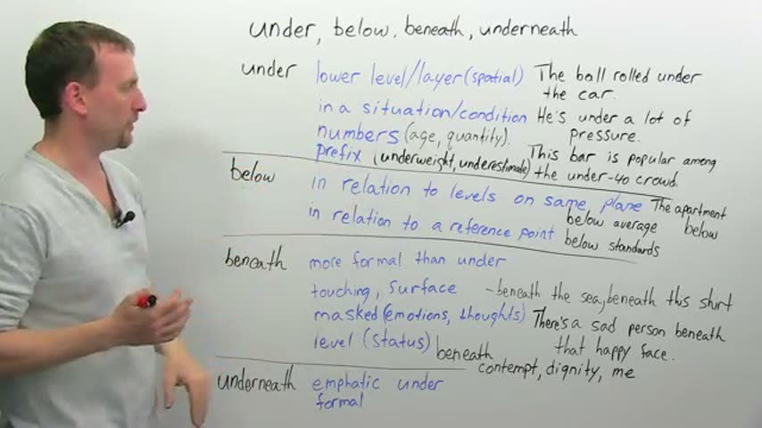
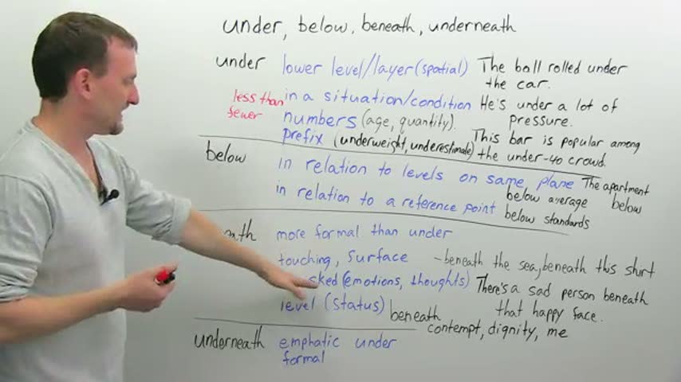

“The ball rolled under the car.” 00:53
“So, the word 'below' is written below the word 'under', because why? … We're on the same plane; we're looking at the whiteboard.” 03:36–03:43
对比词：under vs below vs beneath vs underneath（四词全组对比；另顺带 under 与 over 的前缀义 underweight/overweight 在板上成对出现，但本片主体是四个「下」词）
YouTube duMo2VoFAQY · engVid Adam — Prepositions in English: ABOVE, OVER, ON, ON TOP
来源：上方标题即平台 · 视频 ID · 讲者（研究 07 视频深挖笔记）
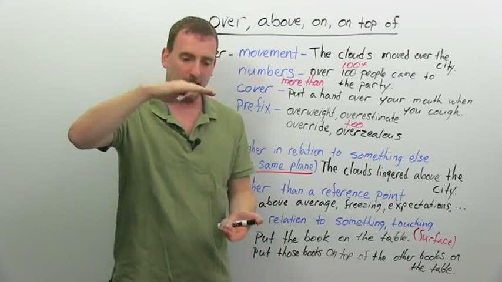

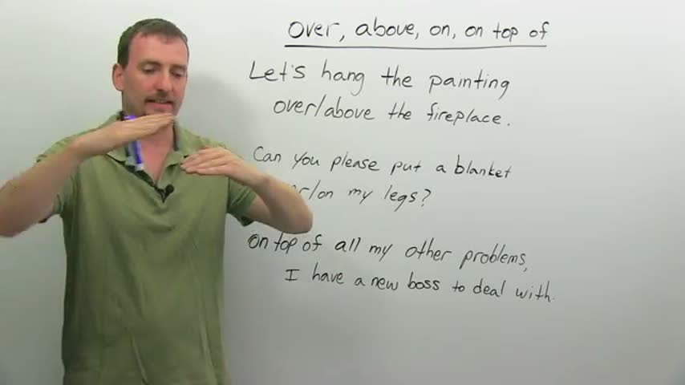
“So we always have that idea of movement when we're talking about 'over'.” 01:17
“The clouds lingered above the city.” 04:41
对比词：over vs above vs on vs on top of（四词全组对比；核心对子是 over 的「移动越过」对 above 的「同平面静止在上」，外加 on/on top of 的「接触」）
B站 BV1ud4y127d2 · 精讲03 below, under, beneath, underneath 的区别
来源：上方标题即平台 · 视频 ID · 讲者（研究 07 视频深挖笔记）

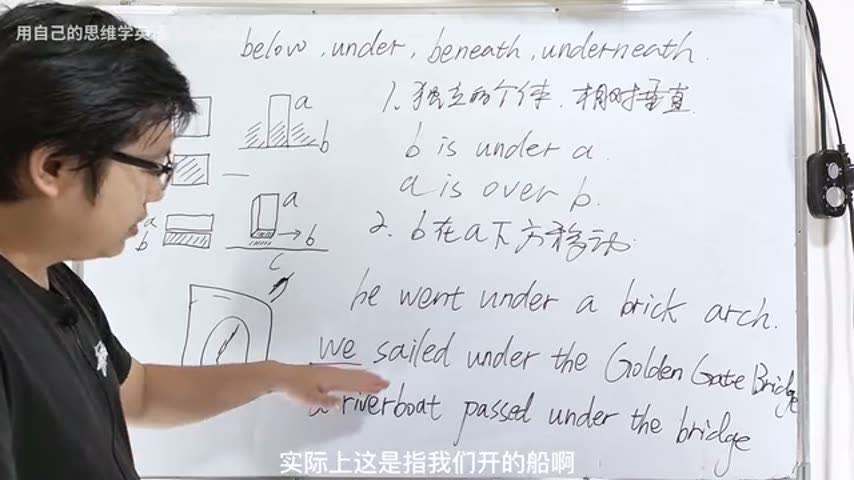
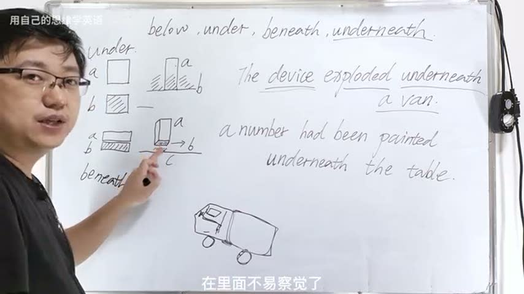
“He went under a brick arch.” 01:17–01:21
对比词：below vs under vs beneath vs underneath（四词全组对比；讲 under 的移动义时顺带对比 through——隧道/水管意象，见转写 [01:38–02:13]，机器转写）
B站 BV1V34y1s7H1 · On、Up、Over 和 Upon 有什么区别
来源：上方标题即平台 · 视频 ID · 讲者（研究 07 视频深挖笔记）

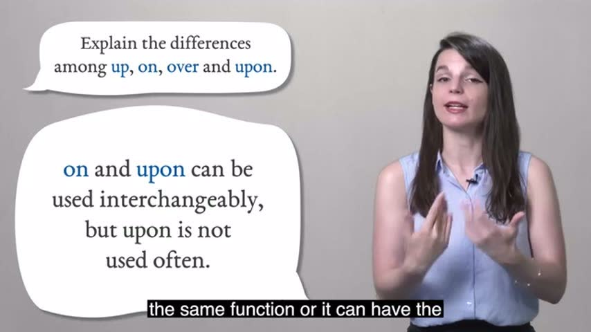
对比词：up vs on vs over vs upon（以气泡题面为准；实际取样画面里展开讲到的是 up 的运动义、on 的接触义与 upon 的正式/可互换，over 在候选帧与联系图里未见单独展开的画面）
分镜板 · 路径
地标不变、只换路径（同一条小溪三种过法）。帧图为真实课堂视频关键帧（相对引用研究 07 shots 库），原话引自 videos_deep 并带时间戳。
YouTube Rai_E2EjOBw · Oxford Online English — Prepositions of Movement
来源：上方标题即平台 · 视频 ID · 讲者（研究 07 视频深挖笔记）


“'Along' means 'in a straight line' plus 'parallel to' something.” 01:45
“'Below' means that you stay underneath something. 'Under' – as a preposition of movement – means that you pass from one side of something to another” 03:15
对比词：under vs below（穿过 vs 一直待在下方）、over vs above（同上逻辑的反义对）、across vs through（终点在哪边明确 vs 进—出过程；沼泽例两可）、towards vs up to（方向 vs 到达终点）、along ≈ up / down（口语可互换，up 可兼「朝向说话人」、down 可兼「远离」）、into（进入／撞上）vs out of。
YouTube tip_TNSk6_k · Arnel's Everyday English — PREPOSITIONS OF MOVEMENT
来源：上方标题即平台 · 视频 ID · 讲者（研究 07 视频深挖笔记）


“From, the start. To, the end.” 01:30
“Past and pass are pronounced the same. But remember that one is a verb. I walked past a bakery. … I passed a bakery.” 05:40 起
对比词：from–to（起点–终点，亦延伸到时间 from 10 to 2）、away from vs toward、to（终点）vs toward/towards（方向；towards 多英式）、past（介词）vs pass/passed（动词，同音）、through（in the middle / 一端进另一端出）vs across（A 到 B 横切；三州例两可）、into vs out of、onto vs off（含口语 off of）、over（静态地点用法 dream catcher over my bed）vs under、around（绕外侧半圈式）vs around（整圈）。
YouTube j8tFojL0Gnw · MES — Prepositions of Movement
来源：上方标题即平台 · 视频 ID · 讲者（研究 07 视频深挖笔记）
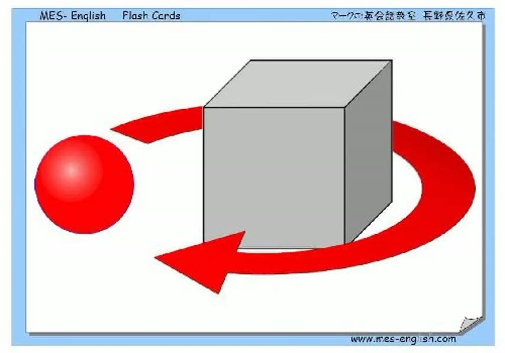

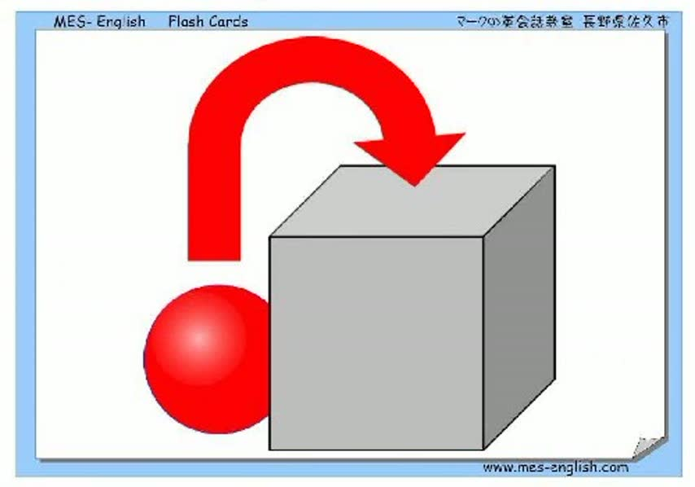
“up up the stairs / down down the stairs” 00:06
“into into the box / out of out of the box” 00:19
对比词：无讲解式对比；靠闪卡成对排列形成隐性对比：up vs down（同一组楼梯）、into vs out of（同一个箱子）、over vs under（同一个箱子）、toward vs away from（同一个箱子）、onto vs off of（同一个箱子）。（本片引文为自动字幕，全片只有词组朗读、无讲解句——videos_deep 原注）
Bilibili BV1Hg4y1K7rC · 英语 介词 along, across, around, through
来源：上方标题即平台 · 视频 ID · 讲者（研究 07 视频深挖笔记）
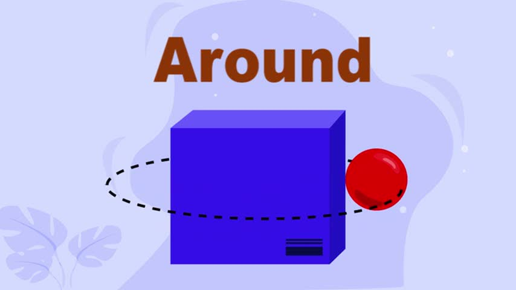

对比词：无显式对比段；四词平行并列（along 沿长物 / across 横过面 / around 绕 / through 穿内部）靠图式与例句分工区分，未见同框辨析页（采样帧范围内）。
分镜板 · 位置
一个场景、多种说法——看说话人关注什么。帧图为真实课堂视频关键帧（相对引用研究 07 shots 库），原话引自 videos_deep 并带时间戳。
YouTube ylyQTl7__IQ · Prepositions Practice with Animals!（Scratch Garden）
来源：上方标题即平台 · 视频 ID · 讲者（研究 07 视频深挖笔记）


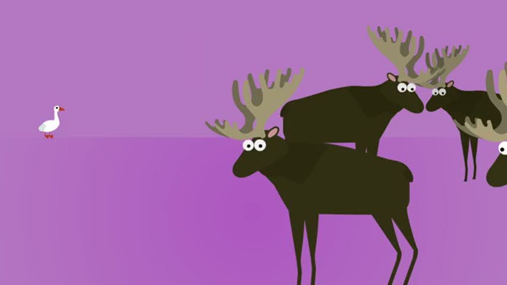
“now the bat is above the cat just like the cat is below the bat” 00:28
“and the rat is now in front of the cat just like the cat is behind the rat” 00:33
对比词：成对反义教学——above / below、in front of / behind、inside / outside、beside / between、over / under / against / on、far from / near / next to / among、into / out of / through / around、toward / past / up / down；本家族相关的有 behind、beside、between、among、near、inside、outside、against。
YouTube RnJJqfu6i8U · Between or Among?（engVid Emma）
来源：上方标题即平台 · 视频 ID · 讲者（研究 07 视频深挖笔记）

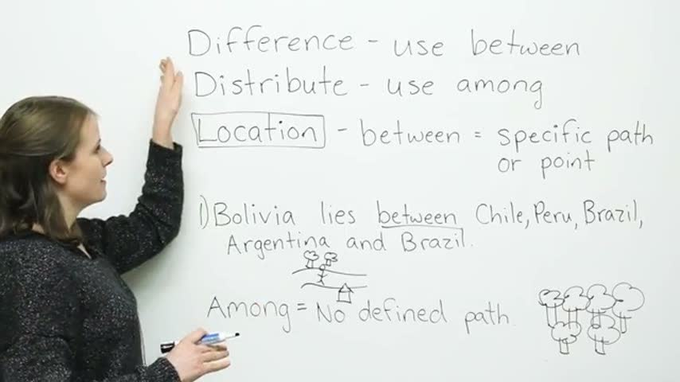
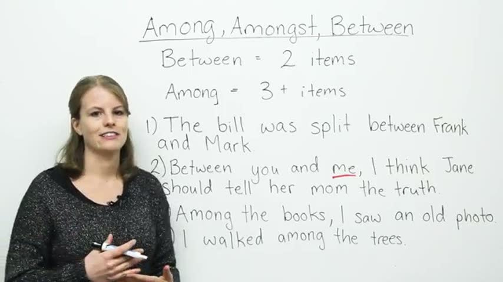
“we use "between" when we're talking about two of something” 00:56
“We use "among" when we're talking about groups, where the group is general” 05:06
对比词：between / among / amongst 三词辨析；核心对比轴是「两件 vs 三件以上」的简易规则 vs「整体群组（among）vs 一对一关系（between）」的修正规则，附带 difference→between、distribute→among 的搭配捷径与位置义（有确定路径用 between、无确定路径用 among）。
YouTube EKpTRGULqK4 · BESIDE or BESIDES?（Arnel's Everyday English）
来源：上方标题即平台 · 视频 ID · 讲者（研究 07 视频深挖笔记）


“The only difference in spelling and sound is that little s, but really, these two words mean completely different things.” 00:00
“The paper clips are beside the pens. The paper clips are next to the pens, same thing.” 00:29
对比词：主对比 beside / besides（只差一个 s）；副对比 beside vs next to（正式程度）、beside 的位置义 vs「与……相比」义、besides 的「除……之外（还）」vs「除……之外（别无）」vs 副词「此外/再说」。
YouTube pCoefMybtYc · Prepositions of place（BBC Georgie）
来源：上方标题即平台 · 视频 ID · 讲者（研究 07 视频深挖笔记）


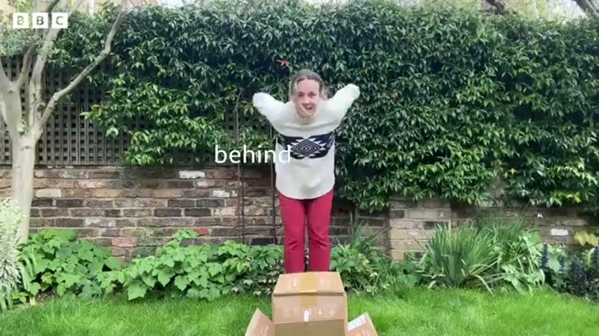
“I'm sitting next to the box.” 00:27
“And I'm behind the box.” 00:36
对比词：清晰义一组——next to / in front of / behind / under / above / between / on（用身体与纸箱、椅子实演）；易混组 in / at 对比（含 in the office vs at work、in the house vs at home 的无理据搭配，明说靠记）。
分镜板 · 时间
钉子 vs 绳子：点上钉钉、段上量绳。帧图为真实课堂视频关键帧（相对引用研究 07 shots 库），原话引自 videos_deep 并带时间戳。
YouTube sSZcAh42qtI · BBC 6 Minute Grammar · for & since
来源：上方标题即平台 · 视频 ID · 讲者（研究 07 视频深挖笔记）

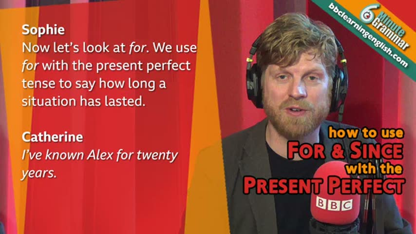

“I've worked at the BBC for eight years.” 00:39
“The word since gives the exact point in the past when the situation started.” 02:22
对比词：for（+时长）vs since（+起点）；同一句 for 短语在现在完成时（仍在职）vs 一般过去时（已离职）的含义对照。（本卡引文为机器转写，只引能确定的短句——videos_deep 原注）
YouTube n3JaBrsistk · engVid Adam · BY, UNTIL, BY THE TIME
来源：上方标题即平台 · 视频 ID · 讲者（研究 07 视频深挖笔记）

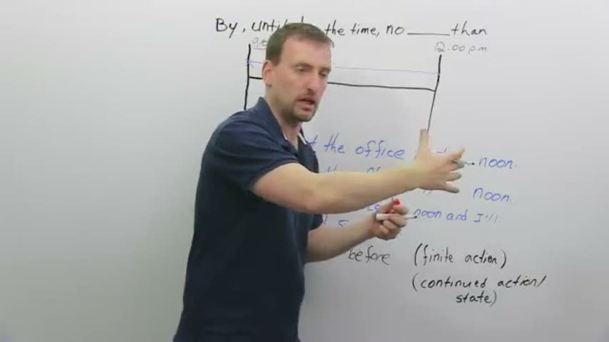

“I'll get to our little time map in a second” 01:00
“I'll be at the office by noon.” 01:03
对比词：by vs until（一次性动作 vs 持续到终点）；by the time + 从句；no later than（=by 的替换说法）vs no earlier than；动词侧 finish（finite）vs work on（可持续）决定选 by 还是 until。
YouTube fRrVkXG0-v4 · Ellii · Prepositions of Time
来源：上方标题即平台 · 视频 ID · 讲者（研究 07 视频深挖笔记）
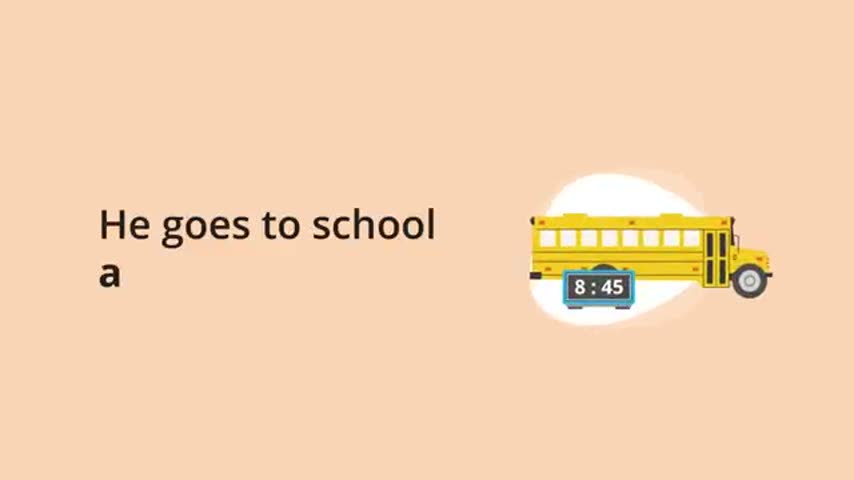
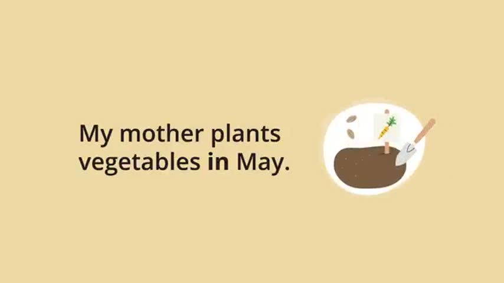

“Prepositions of time show when something happens.” 00:32
“We use the preposition at with clock times.” 01:06
对比词：at（钟点）vs on（星期/日期）vs in（月份/年份/季节/时段）——按时间粒度三分，无其他时间介词。
YouTube UYjd9AU9jU8 · BBC Georgie · Prepositions of time
来源：上方标题即平台 · 视频 ID · 讲者（研究 07 视频深挖笔记）
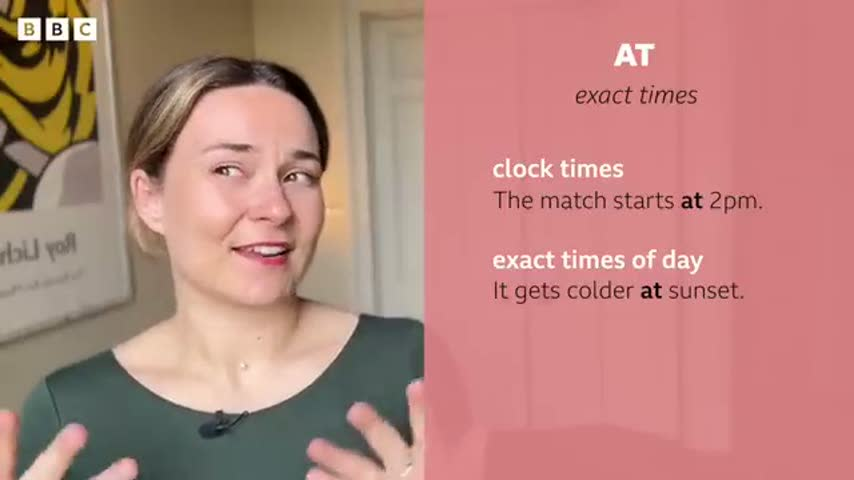
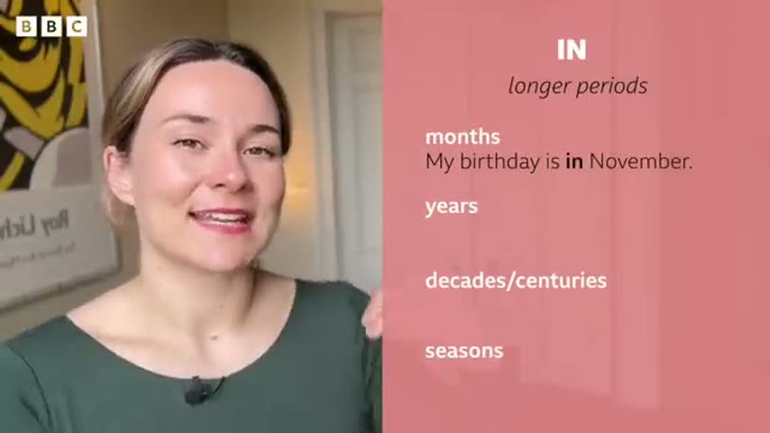

“Think of this one as the preposition of exact times (with exceptions).” 00:15
“'In' is for longer periods of time, like months, years, centuries, seasons.” 00:50
对比词：at（精确时刻）vs in（长时段）vs on（较短时段：天/日期）；night 例外（at night 而非 in）；音节口诀：多音节时段词用 in the，单音节用 at。
分镜板 · 抽象
图画最少的一组：靠最小对比对翻转意思。帧图为真实课堂视频关键帧（相对引用研究 07 shots 库），原话引自 videos_deep 并带时间戳。
YouTube 7RYB8x5jKZw · Kevin 英文不難 · 不用死背，一次搞懂 TO 跟 FOR
来源：上方标题即平台 · 视频 ID · 讲者（研究 07 视频深挖笔记）
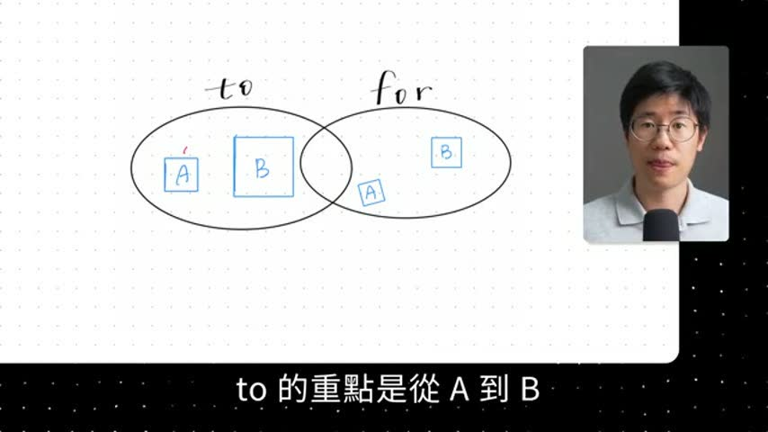

“to 的重點是從 A 到 B，它是一個方向性，有一個目標” 00:27
“for 的重點，它是做 X 得到 Y，它是一個目的，然後會有一個人受益” 00:42
对比词：to vs for（方向到达 vs 目的受益；helpful / important / useful 后两者可互换）。
YouTube 6nDEvB5eWDU · engVid Adam · Comparing with LIKE & AS
来源：上方标题即平台 · 视频 ID · 讲者（研究 07 视频深挖笔记）


“'Like' is a preposition. It is always followed by a noun” 01:40
“'As' is a conjunction followed by a clause” 01:58
对比词：like vs as（另与 more…than / as…as 的性质比较划界；末段 as＝身份职能 vs like＝相似）。
YouTube gix9O_sjEzo · engVid Emma · "BY" or "WITH"?
来源：上方标题即平台 · 视频 ID · 讲者（研究 07 视频深挖笔记）
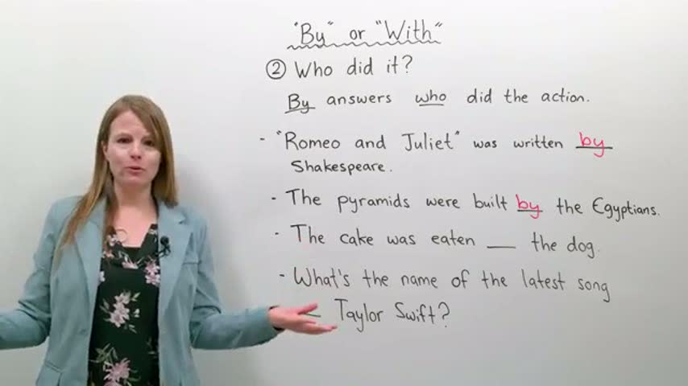
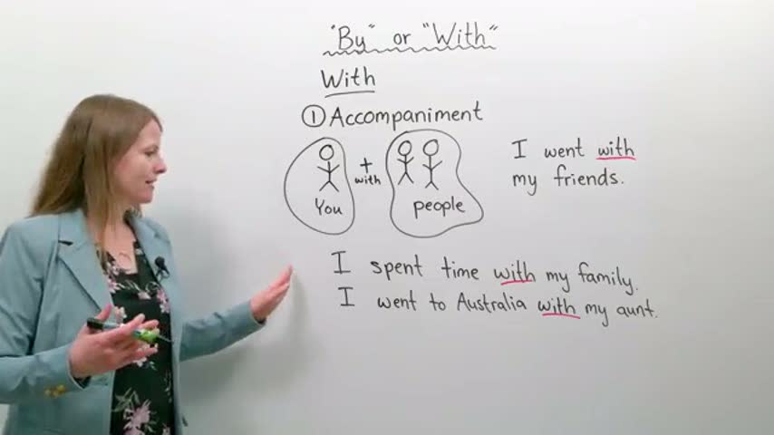

“Arrive by 4pm … you want to arrive before or at 4pm, not after” 00:49
“He broke the window with a rock” 11:22
对比词：by vs with（by＝时间截止/施动者/方式渠道；with＝伴随/持有特征/具体工具）。
YouTube 50AMlIIsxI8 · English with Greg · AS v LIKE
来源：上方标题即平台 · 视频 ID · 讲者（研究 07 视频深挖笔记）
“we use like when something is similar to another thing, not the same but similar” 01:38
“we use as when we are describing the function of something” 01:46
（本片引文为自动字幕，可能有个别识别误差——videos_deep 原注）
对比词：as vs like（like＝相似但不是；as＝职能/身份，本人就是）。
动词 A–Z 索引（458 词条）
字母序只作检索索引；学变化请走形式家族。点任意词进它的五形式衣橱。
🎡 动词 × 小词转盘
做法学自 Cambridge 的 Phrasal Verbs Machine（调研实测）。72 格逐格查过学习词典：50 格有据（156 条，逐条带词典例句与出处），22 格查无（格内注明所查词典），不编义。
全盘一览（点格子直达）
🗂 小词原型图总览（一词一张核心图）
🎩 分词的三顶帽子
衣橱里每个动词都摆着过去分词（V3），但它到底干什么活？三份工作：①完成 ②被动 ③结果状态。形式全部出自词库 + OALD 词形表核实（与衣橱同源）。诚实说明：被动语态在课程标准里是初中话题；本 App 按已经定下来的原则「不分学段、用先修关系代替学段」——本页的先修是五形式衣橱与时间机器，故收在这里，不冒充小学内容。练习为机械操练（页内标注）；病句只用真实病例（出自病例总表）。
🎩 第一顶 · 完成帽：have + V3（事情在参照点之前，还连着参照点）
🎩 第二顶 · 被动帽：be + V3（宾语升主语，动作的承受者站到前面）
🎩 第三顶 · 结果帽：V3 当形容词（不写动作，写「现在怎么样了」）
🏃 身体任务卡（TPR）
任务句全部出自模型例句的身体化改写（只替换主语/场景，不新编句子）。听令做动作，动作做对了，词就记住了一半。
🎬 叙述模式：拖动小人，机器旁白
点一个场景，小人走过去做动作；选好时态，机器用时间机器同一套词形引擎旁白这句话。
🚶
🌳 公园
📦 盒子
🌊 小河
🧍 站起来
📈 我的生命线
📚 我们向谁学了什么
⏱️ 时态实验室
先摆场景，再拼形式：摄影机站在哪里、怎么看、是什么动词 —— 三个决定做完，时态自己长出来。
🎬 场景机核心
拖事件、拖摄影机、换看法，机器把动词一块一块拼出来，并告诉你落在哪一格。
📖 故事播放器7 句
一个上学路上的小故事：有的句子推着时钟走，有的让时钟冻住，还有一句要跳回过去。
🔑 现在完成时实验室6 个实验
时间窗口、So now…?、去过几次、been/gone、since/for、just/already/yet——全都可以动手。
🪤 状语陷阱 + 无提示模式2 关
先靠时间词答题，再把时间词全部拿走——这次只能靠动词自己。还有一个真实病句等你拆。
🎡 未来转盘4 种未来
谈未来不是只有 will：临时决定、早有计划、已经约好、时刻表——看情景选说法。
🗺️ 总览地图12 格
课本上的 12 格表在这里当「地图」：颜色越深越常用。点任何一格，把它装进场景机。
🧭 概念图1 张图
整个时态系统就一条路：摄影机 → 看法 → 动词种类 → 拼积木。点图上的每一步，直接跳过去动手。
🚪 动词种类闸门4 类动词
为什么 know 不能钻进去说 *is knowing？动词分四类，有的类会把某些看法「闸」住。
给老师/家长：本页按 2026-11-01 时态教学调研定下来的方案建造：3×4 网格降为地图，中心改为「场景机」——三个可操纵的决定（参照点 R / 视角 / 动词种类）先行，形式最后拼出。各区末尾都标注了出处来源。
数据说明：动词形式与本 App 的词库和词形总表一致（OALD 核实）；病句病例逐字摘自病例总表（VEC-007）。时态实验室第一版。
🎬 场景机：先摆场景，形式自己跟上
三步：① 选一个动词（注意它是哪一类）→ ② 把故事摄影机拖到你要讲的时间（事件条会跟着摄影机走；选「回头看」时，事件会退到摄影机身后）→ ③ 选一个看法。动词积木会按口诀自己拼好。
选动词（按种类分组）：
当前动词：
过去
现在
将来
📷故事摄影机
▲
🧍 我·现在（说话时刻）
🧍 我·现在（说话时刻）
把摄影机放到：
（也可以直接拖 📷 和事件条）
选看法（摄影机怎么看这件事）：
—
—
🧱 拼积木口诀（Reasoning School 的配方）：
时间放在第一个帮手身上。进行 = be + 动词-ing。完成 = have + V3（动词的第三形）。
一个积木决定下一个积木的形状：will → have（原形）→ been（be 的 V3）→ painting（-ing）。
时间放在第一个帮手身上。进行 = be + 动词-ing。完成 = have + V3（动词的第三形）。
一个积木决定下一个积木的形状：will → have（原形）→ been（be 的 V3）→ painting（-ing）。
我们向谁学了什么：三个决定来自 Reichenbach 的 E–R–S 模型（事件 / 参照点 / 说话时刻）和 Comrie（1976）「体 = 观看事件内部时间的方式」，摄影机变焦是 Smith 的相机隐喻；拼积木配方来自 Reasoning School 的 Tense Time Machine（2026-11-02 实测）。成人术语：故事摄影机 = 参照点 R；我·现在 = 说话时刻 S；事件条 = 事件 E。
📖 故事播放器：Tom 的上学路
一句一句往下讲。注意看时钟：推进故事的句子会让时钟往前走；背景句子会把时钟冻住（我们钻进那一刻里面看）；闪回句子会让摄影机往回跳。每句先别看答案——点「先说理由」，说对理由，形式的名字自然就出来了。
🕖 7:00
早些时候
故事现在
还没讲到
📷故事摄影机
摄影机站在哪一刻，哪一刻就是故事的「现在」
点「讲下一句」开始。
我们向谁学了什么：前景推进时钟、背景冻结时钟来自 Bardovi-Harlig 的语篇假设（Discourse Hypothesis）：故事的主线用一般过去时往前推，背景用过去进行时铺陈，闪回用过去完成时；故事结构参照 Reasoning School F3.5 的 story 模型。
🔑 现在完成时实验室
现在完成时最容易被误会成「做完了」。其实它说的是：摄影机站在现在，回头看过去的事，结果还留在现在。下面六个实验，一个一个动手验。
实验 1 · 时间窗口：窗口还开着吗？
窗口的右沿永远钉在「现在」。窗口还开着（今天、本周、这一年）→ 可以用完成时；窗口已经关门（去年、2023 年）→ 只能讲故事，用一般过去时。
—
实验 2 · So now…? 先查现在，再说时态
Murphy 的办法：别先想时态，先问一句 So now…?（那么现在呢？）
Tom 的钥匙丢了。—— So now… 他现在有钥匙吗？
实验 3 · 去过几次？经验计数器
在「我的一生」这个大窗口里，去过几次都数得出来；可是一旦说出具体哪一天，这件事就掉出完成时窗口，回到故事线。
I have never been to Beijing.
窗口里只数次数，不说哪一天。
实验 4 · been 还是 gone？看人现在在哪
他去北京了。Where is he now?（他现在在哪？）—— 回来了是 been，还在那儿是 gone。
🏠 家 🚶 — — — ✈️ — — — 🏯 北京
He has gone to Beijing. / He has been to Beijing. —— 选一个看看。
实验 5 · since 是图钉，for 是橡皮筋
先点一个工具，再点一个时间：图钉只能钉在一个点上（since），橡皮筋只能拉成一段时间（for）。
📌 since
🎗️ for
I have known Lily ____ .
实验 6 · just / already / yet：站在预想线上
这三个词不是「标志词」，是位置：just = 紧贴着现在之前；already = 比预想的早；yet = 预想到现在该发生了、却还没发生（多用于问句和否定句）。点一点试试：
🛠 操作台 · 时间窗滑门（TA-05 / TA-06 加练台）
上面六个实验看的是同一件事：窗口开着还是关门。这台机器让你自己动手配对——一个事件配一扇时间窗，拖窗、插图钉，看句子自己变成完成时还是过去时。共 150 题，分批轮换；玩错了，机器会把这条规律自己的病例翻给你看。
实验 7 · 联动时间轴：换个时间词，句子自己变（TA-06）
点下面的时间词：事件点自己沿着时间轴滑动，动词形态块跟着变形，「现在」标记永远不动。没有真实例句可变的档（tomorrow / already）不设——不编句。
我们向谁学了什么：实验 2、4 来自 Murphy《Grammar in Use》（结果在现在的照片式检验、been = 回来了 / gone = 还在那儿）；实验 1、3 的时间窗口来自 Seonaid《Perfect English Grammar》的 unfinished / finished 划分与 EnglishPage 的完成时图示；实验 5 是把 since = 点、for = 段做成两种不同形状的工具。
🪤 状语陷阱 + 无提示模式
很多同学靠「标志词」答题：看到 yesterday 就选过去时。标志词是拐杖——第一关可以拄着走；第二关把拐杖拿走，只能靠场景和动词自己判断。
第一关 · 有时间词帮忙
第二关 · 无提示模式（时间词被拿走了）
提示换成了场景线索：结果还在现在吗？是在讲故事的顺序吗？是钻进那一刻看吗？
🪤 陷阱演示：yesterday 会把摄影机钉走
有个同学写了这句病句。点一下，把 yesterday 放进句子——看摄影机发生什么事：
I have seen him ＿＿＿＿.
🏥 病句医院 · 真实病例（逐字摘自公开语料研究）：
病句：I have seen him yesterday. 正确：I saw him yesterday.
写病句的同学：初二。来源：胡晓, 冯姗. 错误分析理论视角下初二写作中动词误用研究[J]. 职业教育发展, 2026, 15(4): 20-32. DOI: 10.12677/ve.2026.154163
出处定位：表2「误选典型案例」中「时态混淆」行，语料编号 S05；原文分析：现在完成时被简化为「过去事件标记」，忽略其「现在相关性」语义，导致与一般过去时混淆；此类误选约占其时态错误的 40%。
病句：I have seen him yesterday. 正确：I saw him yesterday.
写病句的同学：初二。来源：胡晓, 冯姗. 错误分析理论视角下初二写作中动词误用研究[J]. 职业教育发展, 2026, 15(4): 20-32. DOI: 10.12677/ve.2026.154163
出处定位：表2「误选典型案例」中「时态混淆」行，语料编号 S05；原文分析：现在完成时被简化为「过去事件标记」，忽略其「现在相关性」语义，导致与一般过去时混淆；此类误选约占其时态错误的 40%。
为什么有这一关：Bardovi-Harlig 的研究指出，学习者先靠语境、再靠时间词、最后才靠动词形式本身；语料研究（CLEC 等）也显示中国学生高度依赖时间状语。练习必须有计划地撤掉时间词，动词形式才会变成真正的线索。
🎡 未来转盘：谈未来有四种说法
英语谈未来没有唯一的形式，是看情景选说法。先点一个情景，再选你觉得对的说法：
⚠️ 小陷阱：when 后面不用 will
When Tom ____ home, he will do his homework.（当 Tom 到家时，他会做作业。）
我们向谁学了什么：未来四分法来自 Reasoning School F3.6「英语没有单一的将来形式，它是借来的」与 Woodward English 的 will vs going to 意义对比；when/if 时间状语从句不用 will 同为 Reasoning F3.6 的明确提醒。将来的 will 本质上是情态（把握/意愿），不是和过去式平行的「时态」——成人层注记，儿童层只学选情景。
🗺️ 总览地图：12 格是地图，不是入口
课本的 12 格表还留着——查一查、对一对很有用。但它颜色有深有浅：越深越常用，右下角那格（将来完成进行时）在真实英语里极少出现。读法也有讲究：除了竖着按时间读，还要横着按看法读——同一行，是同一种看法走过三个时间。点任何一格，把它装进场景机里摆一摆。
📌 先说清：中国教材常数 16 种时态（多算了「过去将来」的一行，主要用于转述别人说过的话）。这张图是 12 格，读法一致：先定摄影机（行），再定看法（列）。
我们向谁学了什么：把时与体拆开、一次只合一个维度的教法有直接对照证据：Machová et al. (2026, Australian Journal of Applied Linguistics）发现组合式教学（约 5 个核心概念）比传统 12 时态模型更利初学者；横读（按体成行）来自 Lingolia 的交互时间线。
🧭 概念图：整个系统就一条路
遇到任何一句英语，先走这四步。点任何一步，直接跳到对应的操作台——这张图不是挂在墙上背的，是拿来用的。
① 摄影机在哪？故事讲到哪一刻，摄影机就站到哪一刻（现在 / 过去的某个点 / 将来）
→
② 怎么看？全景看完 / 钻进去看过程 / 回头看结果
→
③ 是什么动词？状态 / 活动 / 终点事件 / 瞬间事件——有的看法会被闸住
→
④ 拼积木时间放在第一个帮手身上；进行 +be -ing；完成 +have V3
举例：The train had left. —— ① 摄影机站在「我们到达车站」那一刻（过去）；② 回头看：火车开走在这之前；③ leave 是瞬间事件；④ have 用过去式 had + left（V3）。走完四步，形式自己出来。
我们向谁学了什么：概念图 +「先说理由」的用法来自概念型教学（Concept-Based Instruction, Gal'perin → Negueruela 的 SCOBA 传统）；Fazilatfar et al. (2017）对 14 岁学习者的对照研究显示，先用概念图分别定向时、动词种类、体，再组合，效果显著优于传统教法。图必须被「用」和「讲」，只贴墙背诵无效——同一研究传统反复指出这一点。
🚪 动词种类闸门：有的看法会被闸住
动词分四类。学每个形式时，先用它最合拍的那一类练（进行时先配活动动词，过去时先配瞬间/终点动词）——这是二语习得研究里很稳的规律（体假设）。选一个动词、一个看法，试试闸门：
先选一个动词。
给老师/家长（诚实注脚）：「状态动词不用进行时」是给初学者的默认规则，不是绝对禁令：母语者偶尔也说 I'm loving it、I'm being silly（表示暂时的、带感情的行为），学习者语料研究（IRAL 2021）显示母语者语料中状态动词进行时约占 8.36%。初中阶段应打开这个口子；小学阶段先立默认。闸门逻辑出自 Aspect Hypothesis（Andersen & Shirai）：形式先长在合拍的动词类上，再向外扩展。
✍️ 表达写作区
E / W / NE 共 59 条，点任意一条进它的规律页。
教师层条目在哪：标「教师层」的条目（写给老师和设计者看的）在本页末尾的成人组里，页面按成人层呈现。
招牌件：整块取句（E-04）、范文先行（W-05）、语义韵选词（V-43，词汇区）。
表达与语用 · A 言语行为与会话机制
E-01说话就是做事：每句话在传递信息之外，都在执行一个动作——请求、道歉、承诺、感谢、邀请有病例 · 有练习
E-02很多话不能按字面听：「你能把盐递给我吗」问的不是能力，是请求——意思要过「他想让我做什么」这一关有病例 · 有练习
E-03对话能进行下去，靠双方默认「我还在配合你」：答非所问往往不是乱答，是在用绕弯的方式回答有病例 · 有练习
E-04日常句子是整块从记忆里取出来的，不是逐词现拼的：问候、点餐、道别靠的是「现成块」有病例 · 有练习
表达与语用 · B 得体与礼貌
E-05语法错了，人家笑你「说得不好」；场合错了，人家觉得你「人不好」——语用失误比语法错误更伤人，而且更难被察觉有病例 · 有练习
E-07请求、打扰、拒绝越「压人」，英语越要加缓冲：礼貌是替对方的「面子」留余地，客气程度随关系远近和事的大小滑动有病例 · 有练习
E-08一句回应「对不对」，不看句子本身，看三件事：谁在说、对谁说、上一句说了什么有病例 · 有练习
E-09汉语的客套会「跟着人一起出国」：谦虚、称呼、拒绝的方式直译成英语，常会变成失误有病例 · 有练习
表达与语用 · C 能力构成与教学
E-10「会说英语」是四种本事合起来：语法只占四分之一，其余是得体、成篇、和卡壳时的自救有病例 · 有练习
E-11卡壳不是失败，是交际的一部分：会换个说法、打个比方、问一句「怎么说」，本身就是本事有病例 · 有练习
E-13对话是两个人轮流搭的：一问一答是绑在一起的「对子」，上一句长什么样，就预定了下一句的活有病例 · 有练习
E-15说错了能自己改回来，是对话自带的功能：交际教学不该一出错就打断，先让人把「自我修复」走完有病例 · 有练习
写作 · A 读者与过程
W-01写作和说话最大的不同：读者不在你面前，看不见你脑子里的画——每个信息都要用文字亲手交到读者眼前有病例 · 有练习
W-02写好作文不是一口气从头写到尾：想（计划）、写（落笔）、改（回看）三件事是来回切换的，不是一条直线有病例 · 有练习
W-03孩子写作文「想到什么写什么」不是偷懒，是发展阶段：从「知识讲述」长到「边写边想清楚」需要很多年有病例 · 有练习
W-04修改分两层，顺序不能反：先改「意思对不对、读者懂不懂」，最后才改「字词句对不对」有病例 · 有练习
写作 · B 支架、模仿与产出
W-05最省力的写作进步法是「接着写」：先读一段好文章，再顺着它的势往下写——理解会把产出「拉平」到更高水平有病例 · 有练习
W-06内容要创造，语言要模仿：新意放在想什么上，句子的说法先借现成的——反过来就会写出「想法平庸、句子奇葩」有病例 · 有练习
W-07写不出来恰恰是最有用的时刻：只有动笔输出，才知道自己缺哪一块——「注意到缺口」是进步的扳机有病例 · 有练习
W-10支架的意义在于「用完要撤」：句子框架、范文、师生共构都是临时拐杖，撤掉还能写，才算学会有病例 · 有练习
写作 · C 证据清单与诚实边界
W-12字写不顺、词拼不对，会把脑子「堵住」：基本功不自动化，就没有余力想内容有病例 · 有练习
W-13句子是攒出来的：把两个短句合成一个长句的练习（句子合并），是实测能提升写作质量的少数单项训练有病例 · 有练习
W-14衔接词是给读者的路标，不是作文的装饰品：路标必须对准真实的逻辑关系，贴错地方比没有更糟有病例 · 有练习
教师/设计层（E / W · 成人）
E-06语用失误分两种，治法完全不同：一种是「现成说法用错了」，一种是「不懂这个场合的规矩」教师层
E-12得体不会自己长出来：语法学得再好的人也会说错场合的话——语用必须专门教、把规矩讲在明处教师层
E-14没注意到的东西学不会：语用规矩藏在语境中，不把孩子的注意力引过去，他听一百遍也可能没看见教师层
W-08对小学生怎么写才有效，有官方级的证据清单：天天写、教过程、练基本功、建写作圈——四件事按证据强度排好了队教师层
W-09年龄再大一点，什么写作教学最有效已经有元分析答案：教「写作策略」排第一，范文研读、句子合并、同伴合作都在有效清单上教师层
W-11先把课上成「围着写作转」：先给学生一个写不好的真实任务，让他撞见缺口，再给范文和句型——顺序反过来，学的就用不上教师层
W-15任何「套这个公式保满分」的承诺都没有研究支持：能涨分的只有策略、练习量与反馈的组合——这是写作域的诚实底线教师层
续下一页：母语国家专家 NE 目录 →目录
✍️ 表达写作区 · 母语国家专家
NE 29 条；其中给教师看的 17 条在末尾成人组，页面按成人层呈现。
NE · 地道与流利
NE-01合语法不等于地道：母语者只说「惯例会说的那一种」有病例 · 有练习
NE-02说话快得不像现编的：大脑里整存着一座「句干仓库」有病例 · 有练习
NE-03学英语的起步单位是整块，不是单词加规则有病例 · 有练习
NE · 学习者词典
NE-07只用三千个已知词，就能解释一切新词有练习 · 查过·没有病例
NE-08词典真正的灵魂是例句和句型：动词是句子的枢纽有病例 · 有练习
NE-09先有情景，再有句型：Hornby 的情景法遗产有练习 · 查过·没有病例
NE · 语调与口音
NE-10说话时每时每刻在做三个决定：语调的「三 T」有练习 · 查过·没有病例
NE-11口音是地图不是污点：差异有系统，身份在其中有练习 · 查过·没有病例
NE · 发音是身体的事
NE-12发音先练肌肉：找到嘴里的四个「按钮」有练习 · 查过·没有病例
NE-13音标表不是考卷，是一张可以上手玩的「发音地图」有练习 · 查过·没有病例
NE-14目标是被听懂，不是扮成母语者：可懂度优先于口音有病例 · 有练习
NE · Mercer 与 Alexander：课堂谈话
NE-24谈话有三型：吵架型、附和型、探索型——只有探索型谈话里，思考是公开进行的有病例 · 有练习
NE-25Thinking Together：先全班约法（ground rules），再放小组讨论——规矩是谈出来的，不是贴出来的有练习 · 查过·没有病例
NE · Corbett：Talk for Writing
NE-27Talk for Writing 三段：模仿 → 创新 → 发明——写作教学的顺序是「先有文本存量，再有个人创作」有练习 · 查过·没有病例
NE-28模仿段的发动机：故事地图 + 全身动作——把文本变成可以指着演的图，记忆才托得住语言有练习 · 查过·没有病例
教师/设计层（NE · 成人）
NE-04没有哪条规则被所有人永远遵守：「零容忍」是规定主义神话教师层
NE-05好些「语法铁律」是两三百年前照着拉丁语发明的教师层
NE-06英语已经不归母语者管了：三圈世界与「说给全世界听」的目标教师层
NE-15规则先过证据关：被几代人奉为圭臬的手册也会认错被动语态教师层
NE-16语法是「选择的仓库」：学语法是为了写作时多一条可选的路，不是为了少犯一个错教师层
NE-17语法要嵌在写作里教才有效：Exeter 随机对照试验给出的是「有条件的有效」教师层
NE-18语类是「分阶段、奔着社会目的去的做事方式」：故事、报告、说明各有各的台阶教师层
NE-19教学循环：先全班拆一篇 → 再全班合写一篇 → 最后才轮到你自己写（Teaching-Learning Cycle）教师层
NE-20Reading to Learn：把支架加厚到句子层——让全班读同一篇难文本，而不是给差生降难度教师层
NE-21Derewianka：给小学教师的语法书按「语言的四种活儿」组织，不按词类清单组织教师层
NE-22印刷概念（Concepts About Print）：开始读之前，孩子先要搞懂「书是怎么运作的」教师层
NE-23Reading Recovery：最早、最贵的一对一干预——短期效应有据，长期效果正被新证据改写教师层
NE-26Alexander 的对话式教学五原则：集体、互惠、支持、累积、目的——缺了「累积」，热闹不是对话教师层
NE-29支架是设计出来的，不是随口帮一句：语言支架与学习支架要同时搭在内容课里教师层
S-36 · 拼读区 · 旗舰单元
/iː/ 有两条最大的路：see 的 ee 和 eat 的 ea
再加 me 的 e、field 的 ie、key 的 ey、machine 的 i、these 的 e-e；ceiling 的 ei 排在 c 后面时也读 /iː/。
1 病句医院2 动画讲机制3 一屏一总结4 分级例5 检索练习6 病因归档 · 复习队列
1
病句医院 · 今天的门诊
📖 I read /riːd/ a book yesterday.
诊断：read 是过去式的时候不读长音——它的过去式读 /red/。ea 不总是 /iː/，这是 ea 的另一副面孔（全谱在变脸榜 S-42）。
诊断：read 是过去式的时候不读长音——它的过去式读 /red/。ea 不总是 /iː/，这是 ea 的另一副面孔（全谱在变脸榜 S-42）。
📖 ceiling 读成 /ˈseɪlɪŋ/
诊断：ei 在这里排在 c 后面，该读 /iː/（/ˈsiːlɪŋ/）。ei 的读法要看它站在谁后面。
诊断：ei 在这里排在 c 后面，该读 /iː/（/ˈsiːlɪŋ/）。ei 的读法要看它站在谁后面。
📖 machine 读成 /məˈʃɪn/
诊断：machine 是法语层来的词，这里的 i 读 /iː/（/məˈʃiːn/），不是短音 /ɪ/。
诊断：machine 是法语层来的词，这里的 i 读 /iː/（/məˈʃiːn/），不是短音 /ɪ/。
2
机制屏 · 一屏一总结
同一个 /iː/，为什么有两条大路？因为中古英语本来就有两个长 e，大推移里先后升到 /iː/ 合成一个音，拼写却各留各的——ee 和 ea 是「合并的化石」，不是例外。
| 班次 | 拼法 | 例词 |
|---|---|---|
| 主力 | ee | see、tree、green、sleep |
| 主力 | ea | eat、sea、teacher |
| 主力 | e（词尾/开音节） | me、he、she、we、be |
| 小路 | e-e | these、complete |
| 小路 | ie | field、piece、believe、chief |
| 小路 | ey（词尾） | key |
| 小路 | i（法语层） | machine、police、ski |
| 小路 | ei（在 c 后面） | ceiling、receive、receipt；另有 seize 不在 c 后也读 /iː/ |
| 孤例 | eo | people |
亲戚网：S-35 /eɪ/ 菜单S-42 变脸榜（ea 的全谱）SR-07 i before e 的成色S-15 元音大推移
成人层 · 机制：ee/ea 双主力的成因是中古英语双长 e（/eː/ 与 /ɛː/）在元音大推移中合并，拼写保留双轨。出处：Letters and Sounds Phase 3（ea、ee）与 Phase 5（/iː/ 替代拼法）表，课程文件级；双长 e 合并见 Baugh & Cable《A History of the English Language》语音章，书目级；例词读音按剑桥词典核对，词典级。边界：ea 另有 /e/（head、bread、read 过去式）与 /eɪ/（great 等三词）两面，见 S-42；ie 也有 /aɪ/（pie）与 /e/（friend）面；ey 有 /eɪ/ 面（见 S-35）。分歧：部分美国拼读体系把 ea 列为「次要」、ee 为唯一主力，与英式双主力排法不同——是教学排序之差，非事实之争。
3
分级例
第一级 · 认主力
see 看见 · tree 树 · green 绿色 · eat 吃 · sea 大海 · me 我 · he 他
第二级 · 认小路
field 田野（ie）· key 钥匙（ey）· machine 机器（i，法语层）· ceiling 天花板（ei 在 c 后）· people 人们（eo 孤例）
对照一对
read 现在时读 /riːd/，过去式读 /red/——同一个词，ea 换了面孔，看时间再定音。
4
检索练习（答错只给回机制的提示）
Q1. sea 里的 ea 读哪个音？
提示：回机制屏看菜单——ea 的「主场」是哪一行？head 和 great 是 ea 出门串门的面孔，不是主场。
对了。ea 的主场是 /iː/；/e/ 和 /eɪ/ 是它在变脸榜上的其他面孔。
Q2. 下面哪个词的 ei 读 /iː/？
提示：回菜单最后一行——ei 在什么时候读 /iː/？看它站在谁后面。
对了。ei 排在 c 后面读 /iː/；vein、eight 的 ei/ eigh 读 /eɪ/，那是 S-35 的菜单。
Q3. 判断：people 里的 eo，和 see 里的 ee 一样是 /iː/ 的主力拼法。
提示：回菜单看 eo 坐在哪一班——「主力」还是单独的一行？
对了。eo 是孤组，整组单记；主力只有 ee、ea 和词尾 e。
5
完成 · 病因归档
🏥 本单元错题按病因归档：病因「ea / ei 的面孔没分清」——不是记性问题，是没看清组合站在谁后面、是哪一队。
📥 已进入复习队列（间隔复习示意）：
明天 · ea 主场速认3 天后 · ei 在 c 后1 周后 · 变脸榜 ea 全谱
成人层 · 误解探针（探针规格）：预判孩子会把「ei 读 /iː/」记成无条件规则——探针词 seize（不在 c 后也读 /iː/）与 vein（读 /eɪ/）各一，答错即回本屏菜单的 ei 行。
SR-01 · 拼读区 · 定律区旗舰
词尾那个不出声的 e，是个大忙人：看见它，先问它在干哪份工
它能让元音读长、能让 c/g 变软、能扶住词尾、能给 th 定清浊、能给 -le 凑音节——传统原表一共清点九项职责。
1 病句医院2 动画讲机制3 一屏一总结4 分级例5 检索练习6 病因归档 · 复习队列
1
病句医院 · 今天的门诊
✏️ giv（give 少了 e）
诊断：这个 e 不是装饰——英语本土词不让 v 当最后一个字母，e 是站在词尾的「护栏」。
诊断：这个 e 不是装饰——英语本土词不让 v 当最后一个字母，e 是站在词尾的「护栏」。
✏️ litl（little 少了 e）
诊断：每个音节都要有一个书写元音，-le 音节全靠这个 e 凑齐，少了它音节就不成立。
诊断：每个音节都要有一个书写元音，-le 音节全靠这个 e 凑齐，少了它音节就不成立。
✏️ come 读成 /kəʊm/（按 tape 的规则硬套）
诊断：come 的 e 是「无职之 e」——历史上有过理由、今天已不可考。不是每个词尾 e 都管长音（这一职的实测命中率只有 63%，见成人层）。
诊断：come 的 e 是「无职之 e」——历史上有过理由、今天已不可考。不是每个词尾 e 都管长音（这一职的实测命中率只有 63%，见成人层）。
2
机制屏 · 一屏一总结（九职全表）
五职里只有第①职改变元音读音，其余都是「拼写合法性」标记——e 不发声，但它在替拼写系统交代位置、词类与音节结构。
| 职 | 干什么 | 例 |
|---|---|---|
| ① 长音化 | 标记前面的元音读长音 | tap→tape、pin→pine、rob→robe、tub→tube |
| ② 软化 | 让紧邻的 c 读 /s/、g 读 /dʒ/ | ice、dance、cage、page |
| ③ 词尾护栏 | 英语本土词不以 v、u 收尾，靠 e 扶住 | have、give、love；blue、true、clue |
| ④ th 清浊标记 | 名词清 /θ/ 不带 e，动词浊 /ð/ 带 e | bath / bathe、breath / breathe、cloth / clothe |
| ⑤ -le 凑音节 | 给辅音 +le 的音节凑一个书写元音 | little、table、apple、bubble、puzzle |
| ⑥ 防像复数 | 表明词尾不是 -s 复数 | house、moose、please |
| ⑦ 凑长度 | 给短词凑够长度（实词一般不少于三个字母） | are、ore、eye |
| ⑧ 无职之 e | 历史上曾有理由，今天已不可考 | come、some、done、giraffe |
| ⑨ | 原表共九项；本轮经三种独立转述核到以上八项，第九项未逐项核到——收录前补核原书，不凭记忆补写。 | |
成人层 · 出处：Denise Eide《Uncovering the Logic of English》(2012）对 silent final e 的理由清点；本轮未打开原书，经 Pride Reading Program 7 职版、Literacy Learn 注明取材 Eide 的 9 职版、OG 系教师材料三种独立转述逐项互证——接触等级：多源转述互证级。支撑：Clymer (1963）实测「词尾 e 使首元音读长」一条的命中率只有 63%，故第①职必须配合变脸名单使用；Hickey 规则卡称词尾 v 规则「唯一例外是 spiv（英式俚语）」。边界：第③职的规范表述是 I、U、V、J 四个字母都不收尾（i 不收尾故词尾写 y/ie，见 SR-05;j 不收尾故词尾 /dʒ/ 写 ge/dge，见 SR-03)；且只对本土核心词近乎无例外——menu、flu、improv 等外来词与截短词可破。第④职适用面很小，仅限 bath/bathe 等同源词对。分歧：这组「职责」是教学用的事后归纳，不是历时成因清单（词尾 e 大面积来自中古屈折词尾脱落与印刷定型）；教学界取功能说，正字法研究（如 Venezky）更愿描述为拼写格局——两说并存，本条按教学可用性取功能说。
3
分级例
第一级 · 长音化与软化
tap→tape（录音带）· pin→pine（松树）· ice（冰，c 变软）· cage（笼子，g 变软）
第二级 · 护栏、清浊与凑音节
have / give（护栏）· blue / true（护栏）· bath 洗澡水 → bathe 洗澡（th 定浊）· little / table（-le 凑音节）
对照一组
come、some、done 的 e 哪份工都不干——看见词尾 e 先问工种，别默认它管长音。
4
检索练习（答错只给回机制的提示）
Q1. tape 里的 e 在干哪份工？
提示：回九职表——tape 里 e 前面站的是谁？先看 tap→tape 声音变了没有。
对了。tap→tape，a 由短变长，这是长音化。
Q2. have 里的 e 为什么不能去掉？
提示：先把 have 读出来——a 读的是长音吗？再回九职表找「扶住词尾」是哪一职。
对了。have 的 a 并没读长音；这个 e 干的是第③职护栏。
Q3. bathe（洗澡，动词）里的 e 在干哪份工？
提示：回九职表第④职——bath 和 bathe 差在哪儿？一个是名词，一个是动词。
对了。bath /bɑːθ/ 是名词（清），bathe /beɪð/ 是动词（浊），e 是清浊标记。
5
完成 · 病因归档
🏥 本单元错题按病因归档：病因「词尾 e 的工种认错」——把九份工混成一份（只记长音化），或把 e 当装饰随手丢掉。
📥 已进入复习队列（间隔复习示意）：
明天 · 五职认岗3 天后 · bath/bathe 清浊对1 周后 · 无职之 e 名单
成人层 · 误解探针（探针规格）：预判孩子把第①职当成词尾 e 的唯一工作——探针用 have（护栏）与 come（无职）各一，答错即回九职表对应行。
S-42 · 拼读区 · 旗舰单元
变脸榜：ough 是变脸大王——读法越多越不可猜，越要整组记
本榜是 S-06「变脸名单」的正式版：成员、排序与每组的全谱词例都在这里。
1 病句医院2 动画讲机制3 一屏一总结4 分级例5 检索练习6 病因归档 · 复习队列
1
病句医院 · 今天的门诊
📖 book 读成 /buːk/（照 moon 的读法套）
诊断：oo 有三副嗓子。book 和 spook 同是 -ook 却分读 /ʊ/ 与 /uː/——同环境对峙，无规则可分，只能整组记。
诊断：oo 有三副嗓子。book 和 spook 同是 -ook 却分读 /ʊ/ 与 /uː/——同环境对峙，无规则可分，只能整组记。
📖 head 读成 /hiːd/（照 heat 的读法套）
诊断：head 与 heat 只差一个字母，ea 却分读 /e/ 与 /iː/——ea 的四读之间位置、重音全同，线索最少，这正是它排第二的原因。
诊断：head 与 heat 只差一个字母，ea 却分读 /e/ 与 /iː/——ea 的四读之间位置、重音全同，线索最少，这正是它排第二的原因。
📖 though 和 through 用同一个读法
诊断：ough 一个组合八到十读，though 读 /əʊ/、through 读 /uː/，靠一条规则猜不出来——靠分组。
诊断：ough 一个组合八到十读，though 读 /əʊ/、through 读 /uː/，靠一条规则猜不出来——靠分组。
2
机制屏 · 一屏一总结
排序办法：按「读法数 × 不可预测度」加权——读法多、且位置/重音/词源都给不出线索的排前面，不是单纯数读音个数。所以 a 有全榜最多的 8 读却只排第四（每读都有线索），ea 线索最少排第二。
| 名次 | 组合 | 读法全谱（英式） |
|---|---|---|
| 1 | ough | 常用 8 读：/əʊ/ though · /uː/ through · /ʌf/ rough、tough · /ɒf/ cough · /ɔː/ thought、bought · /aʊ/ bough · /ə/ thorough · /ʌp/ hiccough；罕见再加 /ɒk/ hough、/ɒx/ lough，全谱 10 读 |
| 2 | ea（及 ear） | 本体 4 读：/iː/ eat · /e/ head · /eɪ/ great · /ɑː/ heart；带 ear 家族达 7 读（再加 hear /ɪə/、bear /eə/、learn /ɜː/） |
| 3 | ou | 重读 6 读：/aʊ/ out · /uː/ soup · /ʊ/ could · /ʌ/ touch · /ɔː/ four · /əʊ/ shoulder；非重读再加 /ə/ famous，全谱 7 读 |
| 4 | a | 全谱 8 读为全榜最多：/æ/ cat · /eɪ/ cake · /ɑː/ father · /ɔː/ all · /ɒ/ wash · /e/ any · 弱读 /ə/ about、/ɪ/ village——但每读都有位置或重音线索 |
| 5 | y | 4 读：/j/ yes · /aɪ/ my、apply · /ɪ/ gym · /i/ happy |
| 6 | oo | 3 读：/uː/ moon · /ʊ/ book · /ʌ/ blood；oo+r 再读 /ɔː/ door |
ough 的内部秩序：-ought 一组内部极整齐（bought、thought、fought、sought、ought 全读 /ɔːt/），变脸发生在组与组之间——对策是按词族分组记，不是逐词死记。
成人层 · 出处：ough 读音表经 Wikipedia「Ough (orthography)」与剑桥词典官方博客双源开页核对；其余各组例词读音按剑桥词典逐词核对（词典级）；计数办法为本条自定并写明。边界：ough 若计专名与苏格兰方言读法数目还可上浮，本榜封顶于「常用词 + 两个有词典登记的罕见项」=10；slough 一词三读是单字层面的变脸，不计入组合读法数；本榜只收元音区，辅音区两三读组合（th、ch 等）不在此排位。分歧：① ough 计数各家不同（美式常引 7–8 读、英式 9 读、含罕见 10 读），差在收录范围而非读音事实；② 教学处理之争——实务说法称 ough 词「只能作整词记」，词族教学说法主张按词族分组后可归队学习，本条取后者为主张、前者为下限提醒（组间选择仍无规则）。
3
分级例
第一级 · ea 四读认脸
eat /iː/ 吃 · head /e/ 头 · great /eɪ/ 伟大的 · heart /ɑː/ 心——同一个 ea，四副嗓子。
第二级 · -ought 词族整组记
bought 买（过去式）· thought 想（过去式）· fought 打（过去式）· sought 寻找（过去式）· ought 应该——全组同读 /ɔːt/，组内零变脸。
高段素材 · 一句九读
"The wind was rough along the lough as the ploughman fought through the snow, and though he hiccoughed and coughed, his work was thorough."——一句之内 ough 九读俱全（条目引 Wikipedia 例证句）。
4
检索练习（答错只给回机制的提示）
Q1. book 里的 oo 读哪个音？
提示：回榜看 oo 那一行——book 被排在哪一读下面？同是 -ook 的 spook 又在哪一读？
对了。book 读 /ʊ/；oo 三读无规则分家，靠整组记。
Q2. 对付 ough 最靠谱的办法是？
提示：回机制屏最后一句——ough 的「内部秩序」是什么？变脸发生在组内还是组间？
对了。组内整齐、组间变脸，所以按词族分组是对策。
Q3. a 的读法全榜最多（8 读），为什么只排第四，ea（4 读）反而排第二？
提示：回机制屏第一段——排序办法是只数读法个数吗？head 和 heat 的差别说明了什么？
对了。读法数 × 不可预测度加权，ea 线索最少所以靠前。
5
完成 · 病因归档
🏥 本单元错题按病因归档：病因「变脸组合按单读硬套」——把多读组合当成一读，用错队伍的读法去套。
📥 已进入复习队列（间隔复习示意）：
明天 · ea 四读认脸3 天后 · -ought 词族1 周后 · ough 全谱分组
成人层 · 误解探针（探针规格）：预判孩子把「读法多 = 排前面」当成榜单逻辑——探针用 a（8 读第四）与 ea（4 读第二）的排位判断一题，答错即回本屏排序办法段。
V-40 · 词汇解码区 · 旗舰单元
中文像一个万能遥控器，英语像一串专用按钮
门、灯、电视、开会，中文全按「开」；英语要先看清「这件事在干什么」，再挑对按钮。逐词对译必失真——这是中式英语的总病根之一。
1 病句医院2 动画讲机制3 一屏一总结4 分级例5 检索练习6 病因归档 · 复习队列
1
病句医院 · 今天的门诊
📖 *open the light（想说「开灯」）
诊断：把汉语「开」的打包图原样套过来了。灯不是门——英语给灯按的按钮是 turn on。
诊断：把汉语「开」的打包图原样套过来了。灯不是门——英语给灯按的按钮是 turn on。
📖 eat medicine（想说「吃药」）
诊断：「吃」直译成 eat 就错了。药在英语里归 take 管：take medicine。
诊断：「吃」直译成 eat 就错了。药在英语里归 take 管：take medicine。
2
机制屏 · 一屏一总结
一个事件的零件（动作、对象、方式、结果）可以有不同的「打包法」：汉语爱用一个总管动词熔成一团，英语爱按细节分给几个词。学英语不是换词，是先看打包法。
| 汉语一个「开」 | 英语按哪个按钮 |
|---|---|
| 开门 | open the door |
| 开灯 / 开电视 | turn on / switch on the light / the TV |
| 开车 | drive |
| 开会 | have / hold a meeting |
| 英语一个 take | 汉语怎么说 |
|---|---|
| take | 拿 |
| take away | 带走 |
| take the bus | 坐公交 |
| take medicine | 吃药（服药） |
| take a photo | 拍照 |
亲戚网：P-19 运动事件的打包（同一思想）CO-17 空心动词V-16 对译陷阱
成人层 · 机制与出处：Talmy 的词汇化模式研究把动词词根熔合哪些成分称为 conflation（熔合）；Talmy 本人也分析过非运动熔合例（shelve、powder）。出处：Talmy (1985) "Lexicalization Patterns"，收入 Shopen 主编《Language Typology and Syntactic Description》第 3 卷 (CUP, pp. 57–149)，系统化于《Toward a Cognitive Semantics》第 II 卷 (2000, MIT Press)——接触等级：二手系统论述级（经 SDSU 课程讲义与 EAGLES 综述带例核实，与 P-19 同源）；汉英对照例为词典级（《现代汉语词典》「开」义项群与学习词典 open/turn on/take 条目可逐项对查）。边界（推广声明）：Talmy 原论是关于一类事件之特征性编码的类型学命题，不是一张「任何动词对都有打包差」的全称定律；把「打包错位」用作日常词汇教学机制，是本条对 Talmy 思想的延伸，不引作 Talmy 原话。汉英也有大面积对齐的对子（关门 = close the door、开窗 = open the window），不许讲成「处处错位」。分歧：无直接对立学派；只有程度之争——类型学差异是「特征性默认」而非绝对分野，打包差是频率与默认值的差，不是「能不能」的差。
3
分级例
第一级 · 「开」的两个按钮
开门 = open the door（门有开合，用 open）· 开灯 = turn on the light（电器通电，用 turn on）
第二级 · 「开」全表 + take 五管
开电视 = turn on the TV · 开车 = drive · 开会 = have a meeting；take a photo 拍照 · take the bus 坐公交 · take medicine 吃药 · take away 带走 · take 拿
对照一组（不是处处错位）
关门 = close / shut the door、开窗 = open the window——这一对汉英正好对齐。先看事情，再定按钮。
4
检索练习（答错只给回机制的提示）
Q1. 「开灯」用哪个按钮？
提示：回对照台看第一行和第二行——灯和门是同一个按钮吗？灯是「通电」，不是「开合」。
对了。电器通电归 turn on，门窗开合才归 open。
Q2. 「吃药」怎么说？
提示：回对照台下半张——「药」在英语里归哪个动词管？想想 take 的五件差事。
对了。服药是 take medicine，eat 只管吃饭那类事。
Q3. 「开会」用哪个按钮？
提示：回对照台——开会是「开合」「通电」还是「驾驶」？都不是，它是「举行一场活动」，看第四行。
对了。开会 = have / hold a meeting。
5
完成 · 病因归档
🏥 本单元错题按病因归档：病因「逐词对译（母语打包图直套）」——先在汉语里想好一个词，再逐词搬过去，没先看英语怎么打包。
📥 已进入复习队列（间隔复习示意）：
明天 · 「开」四按钮3 天后 · take 五管1 周后 · 对齐对子复检
成人层 · 误解探针（探针规格）：预判孩子把本条学成「汉语开 = 英语永远不用 open」——探针用「开窗」一题（正解 open the window），答错即回本屏边界段「不是处处错位」。
CO-17 · 词汇解码区 · 旗舰单元
have、take、make、give 像四个空杯子：倒进什么名词，就是什么味
get 是个万能插头：它的用法不背义项，背五个构造。
1 病句医院2 动画讲机制3 一屏一总结4 分级例5 检索练习6 病因归档 · 复习队列
1
病句医院 · 今天的门诊
📖 *give a call（想说「给我打个电话」）
诊断：少了接电话的人。规范形是 give sb a call——空心动词的杯子要先说清倒给谁。
诊断：少了接电话的人。规范形是 give sb a call——空心动词的杯子要先说清倒给谁。
📖 It's getting dark. 把 get 读成「得到」→「它正在得到黑暗」
诊断（条目机制）：get 在这里不是「得到」，是 get + 形容词 =「变得」。按一个义项通吃 get，五句话里四句读不通。
诊断（条目机制）：get 在这里不是「得到」，是 get + 形容词 =「变得」。按一个义项通吃 get，五句话里四句读不通。
2
机制屏 · 一屏一总结
英语表达「做事」的主力模具是「空心动词 + 事件名词」：动词本身几乎没实义、只管时态人称，事情住在后面的名词里。这类结构背动词义项没用，要整块学。
| 空杯子 | 倒进名词 | 整块的意思 |
|---|---|---|
| have | a look | 看一看 |
| take | a shower | 洗个澡 |
| take | a photo | 拍张照 |
| make | a decision | 做决定 |
| give | sb a call | 给某人打电话 |
| get 五构造 | 意思 | 例句（Collins 词典 get 条） |
|---|---|---|
| ① get + 名词 | 接收 / 得到 | I got a letter yesterday. |
| ② get + 形容词 | 变得 | It's getting dark. |
| ③ get + to + 地点 | 到达 | We got to the station at six. |
| ④ get + 过去分词 | 被动味（事情落在自己身上） | He got hit by a car. / They got married. |
| ⑤ get + 人 + to do | 说动 / 使 | I got him to help me. |
成人层 · 出处与证据等级：Michael Lewis《The Lexical Approach》(1993）词汇法与语块分类——二手系统论述级；Collins COBUILD English Grammar (1990: 147）空心动词描写（核心成员 give、get、keep、have、make、take、do、set）——二手转引级；Francis, Hunston & Manning《Collins COBUILD Grammar Patterns 1: Verbs》(1996）——书目+综述级；get 五构造逐项打开 Collins 词典 get 条核对——词典条目原文级。British Council LearnEnglish 教学页对 have/take/make/give 搭配面的列举与 COBUILD 互证。边界：五构造是 get 的核心构造，不是全集——get to do（有机会做）、get + -ing（启动）、get = 懂（I get it）等边缘构造另有其位，说法是「先立五构造，其余遇见再添」，不说「get 只有五种用法」；「空心」是近似说法，空心动词间仍有搭配分工残迹（shower 配 take/have、noise 配 make、speech 配 give），不可讲成完全可互换。分歧：词汇法的理论地位有争论（批评者指其多为既有概念重命名），但分歧不落在「空心结构按块教」这一具体主张上——它在 COBUILD 描写传统与主流教材中已是共识操作。
3
分级例
第一级 · 整块取用
have a look 看一看 · take a shower 洗个澡——整块端走，不拆开背。
第二级 · 换名词、认构造
make a decision 做决定 · give me a call 给我打个电话；get a letter 收到信（构造①）· get angry 变生气（构造②）
4
检索练习（答错只给回机制的提示）
Q1. They got married. 里的 get 是哪个构造？
提示：回五构造表——married 是什么词形？「结婚」是他们主动「得到」的，还是事情落在他们身上？
对了。get married 是构造④，和 got hit by a car 同队。
Q2. It's getting dark. 里的 get 是什么意思？
提示：回五构造表第②行——get 后面跟的是 dark，这个词是什么词性？
对了。get + 形容词 = 变得，天「变得」黑了。
Q3. I got him to help me. 里 get 的活是？
提示：回五构造表第⑤行——get 后面先站了 him，又跟了 to help，这个形状对哪一行？
对了。构造⑤：我说动他来帮我。
5
完成 · 病因归档
🏥 本单元错题按病因归档：病因「按义项背 get / 把语块拆开背」——该整块存取的结构被拆成单词硬背。
📥 已进入复习队列（间隔复习示意）：
明天 · 四个空杯子3 天后 · get 构造①②1 周后 · get 五构造全表
成人层 · 误解探针（探针规格）：预判孩子把「五构造」学成封闭清单——探针用 I get it.（懂）一题，答「不在五构造里所以错」即回本屏边界段「五构造非全集」。
V-33 · 词汇解码区 · 旗舰单元
前缀有一大群，真正常出来干活的就一小撮：先学一小撮，大头全归队
un-、re-、in-、dis- 四个「班长」加起来，占了书里带前缀词的一大半；再多学十几个，97% 都有认识的门卫。
1 病句医院2 动画讲机制3 一屏一总结4 分级例5 检索练习6 病因归档 · 复习队列
1
病句医院 · 今天的门诊
📖 uncle 拆成 un- + cle，当成「不 + cle」猜
诊断：假拆。uncle 的 un- 不是前缀——这类「冒牌前缀」在 White 等人的第一课里有个专名：tricksters（捣蛋鬼），先防假拆再学真拆。
诊断：假拆。uncle 的 un- 不是前缀——这类「冒牌前缀」在 White 等人的第一课里有个专名：tricksters（捣蛋鬼），先防假拆再学真拆。
📖 reason 拆成 re- + ason
诊断：同上。reason 不是 re- 前缀词。长得像前缀的，不一定是前缀。
诊断：同上。reason 不是 re- 前缀词。长得像前缀的，不一定是前缀。
2
机制屏 · 一屏一总结
带前缀的词在书里的分布是一条「头部定律」：少数前缀占绝大多数出场。先学高频小集合，比背一张一百个前缀的大表有用得多。
| 定版数字 | 占带前缀词出场份额 |
|---|---|
| un- 一家 | 26% |
| 前三名（un-、re-、in-「否定」） | 51% |
| 前四名（再加 dis-） | 58% |
| 定版 20 个前缀清单 | 97% |
⚠️ 纠正框：流传的说法「14 个前缀占 58%」查无此据——58% 是前 4 个的份额，97% 对应的是20 个的清单。「14 个」疑与后缀侧的小集合统计串位，本清单按原文定版，不收录该说法。
定版 20 名单：un-re-in-（否定）dis-en-/em-non-in-/im-（向内）over-mis-sub-pre-inter-fore-de-trans-super-semi-anti-mid-under-
成人层 · 出处：White, Sowell & Yanagihara, "Teaching Elementary Students to Use Word-Part Clues", The Reading Teacher 42(4), 1989, pp. 302–308；语料基础为 Carroll, Davies & Richmond《The American Heritage Word Frequency Book》(1971)，三至九年级教材词频。关键句经 Marzano (2004) 逐字转引核对——接触等级：原文引文级。边界：① 百分比是带前缀词在学校阅读语料中的出现份额（按频次算），不是词典词条种类的比例；② 语料是 1970 年代美国教材，中国学生阅读构成不同，名次细节不可直接搬用，可搬的是「头部集中、先教高频小集合」这条结构事实；③ in- 身兼二职（否定/向内）、re- 两义（再/回）、un- 兼表「做反动作」（untie），清单教学必须连义项分工一起教（见 V-39 六课序列）。分歧：频率派（本条立场）主张按语料频率定顺序；语义透明派提醒高频前缀恰恰多义、易假拆——两说不冲突：频率定「先教谁」，透明度定「怎么教、防哪些假朋友」。
3
分级例
第一级 · 四个班长
un-（不）· re-（再）· in-（不）· dis-（不、相反）——先认这四个，书里带前缀的词先归队近六成。外加一个特别的：untie 的 un- 是「把动作做回去」（解开）。
第二级 · 二十人名单 + 防假拆
把定版 20 名单认全（见机制屏）；同时背下捣蛋鬼名单的头两位：uncle、reason——它们的 un-、re- 都是假的。
4
检索练习（答错只给回机制的提示）
Q1. 在书里碰到的带前缀词，前四个前缀（un-、re-、in-、dis-）占多大份额？
提示：回机制屏的定版数字表——四个数字各管几个人？97% 是二十人合围的数，26% 是 un- 一家的数。
对了。前四合占 58%；20 个合占 97%；un- 一家 26%。
Q2. 流传的「14 个前缀占 58%」这句话，对吗？
提示：回机制屏的纠正框——「14」这个数在原文里出现过吗？
对了。纠正框已定版：数字要连「管几个人」一起记。
Q3. uncle 开头的 un- 是前缀吗？
提示：回病句医院第一例——White 等人的第一课专门防的是哪种拆法？
对了。先防假拆，再学真拆。
5
完成 · 病因归档
🏥 本单元错题按病因归档：病因「前缀不分真假、名单不分主次」——见前缀就拆（假拆），或对一百个前缀平均用力（不分头部）。
📥 已进入复习队列（间隔复习示意）：
明天 · 四个班长3 天后 · 20 名单认读1 周后 · tricksters 复检
成人层 · 误解探针（探针规格）：预判孩子把「97%」记成词条种类的比例——探针问「97% 是『书里碰到的次数』还是『词典里的种类』」，答错即回本屏边界①的频次说明。
GR-33 · 语法区 · 旗舰单元
反意疑问句是一台回声机：尾巴不是随便拖的，是现配的零件
汉语只用一个「吧 / 对吧」包打天下；英语每个句子都要现配尾巴——配法只有三步。
1 病句医院2 动画讲机制3 一屏一总结4 分级例5 检索练习6 病因归档 · 复习队列
1
病句医院 · 今天的门诊
📖 *You went there, isn't it?（正：didn't you?）
诊断：尾巴没有回指主句。went 身边没有助动词，要召唤替补队员 did，再翻极性、换代词——三步一步没走。
诊断：尾巴没有回指主句。went 身边没有助动词，要召唤替补队员 did，再翻极性、换代词——三步一步没走。
📖 *I am late, amn't I?（正：aren't I?）
诊断：amn't 不是标准形。I am 的尾巴是借来的特例：aren't I。
诊断：amn't 不是标准形。I am 的尾巴是借来的特例：aren't I。
2
机制屏 · 一屏一总结（三步法）
三步机械操作，顺序不能乱：
| 步 | 做什么 | 规矩 |
|---|---|---|
| ① | 回指助动词 | 把主句的助动词 / 情态动词 / be 复制到尾巴；主句没有助动词时，召唤 do / does / did（和 GR-03 是同一台替补机制） |
| ② | 极性翻转 | 主句肯定 → 尾巴否定（缩略 n't)；主句否定 → 尾巴肯定；never、hardly、seldom、few、little 这类半否定词算否定主句 |
| ③ | 代词对位 | 尾巴的主语必须换成与主句主语同指的代词 |
特例组（整组单记）：I am → aren't ILet's → shall we祈使句 → will you / won't youeverybody / somebody → theynothing / something → it
🎵 语调分工：尾巴升调 = 真问（我不确定，在求证）；尾巴降调 = 非问（我已经确定，只求你点头）。
🎥 动画演示：三步现配尾巴
换一句：
点「演示三步」看尾巴怎么现配出来。
成人层 · 出处与证据等级：形式规则与语调分工依 Swan《Practical English Usage》第 3 版 question tags 条（§487–488 及 p. 503「meaning and intonation」），本轮打开影印页核对——接触等级：章节影印页级（本簇最高）。「尾巴的 do/does/did 与 GR-03『do 替补』是同一机制」为清单内互挂。难点定位的等级：中国学习者全程统一用 isn't it、助动词不回指，是多国「不变尾巴」母语者（法语 n'est-ce pas、德语 nicht wahr、汉语「对吧」）的共同难点，教材与教师文献一致报告——但本轮未检索到针对该错误的 CLEC 级语料计数，按纪律标为教学界共识级，不冒充语料定版（此项即本条的待核记录）。边界：主句是 I think / believe + 从句时，尾巴跟从句走（I think he's coming, isn't he?)；美式口语中反意疑问使用频率低于英式，标准教学系统仍以翻转-回指为正；降调尾巴在英式口语里大量作会话润滑，不逐句译成「对吧」。分歧：同极性尾巴（肯定 + 肯定，如 So you're French, are you?）表惊讶 / 讽刺 / 推断，其语用定性各参考语法措辞不一，记为语用层分歧，不影响形式教学；语调与意义的对应是倾向而非铁律，Swan 本人即以倾向性说法表述。
3
分级例
第一级 · 三步走一遍
She is happy, isn't she?（①抄 is → ②肯定翻否定 → ③she 对位）· You went there, didn't you?（①没助动词，召唤 did → ②翻面 → ③you 对位）
第二级 · 特例与从句
I am late, aren't I? · Let's go, shall we? · I think he's coming, isn't he?（尾巴跟从句走，不跟 I think 走）
4
检索练习（答错只给回机制的提示）
Q1. You went there, ___?
提示：走三步——第①步先找主句的小帮手：went 身边有助动词吗？没有的话，召唤哪个替补队员？
对了。召唤 did、翻极性、代词 you 对位：didn't you。
Q2. She is happy, ___?
提示：第①步——主句里现成的小帮手是谁？is 就在句中，不用另请替补。
对了。回指 is、翻面、代词对位：isn't she。
Q3. I am late, ___?
提示：回特例组——I am 的尾巴是借来的，amn't 不是标准形。
对了。特例整组单记：aren't I。
5
完成 · 病因归档
🏥 本单元错题按病因归档：病因「尾巴不回指（母语万能尾巴迁移）」——汉语一个「对吧」包打天下，搬到英语就成了全程 isn't it。
📥 已进入复习队列（间隔复习示意）：
明天 · 三步法走查3 天后 · 特例组1 周后 · 升降调听辨
成人层 · 误解探针（探针规格）：预判孩子把三步法只用在 be 句上——探针用一题无助动词的过去时句（同 Q1 型），答 isn't it 即回第①步「召唤 do 替补」。
🗂️ 复习区
这里的题全部来自你学过的页面，一道新题都没有——全是回头练，练到记住为止。
题目从哪来：规律页的练习与理解探针、时态站的练习、拼读主线的过关词。
怎么练：答对升盒、隔几天再练。
答错了怎么办：不按题号堆着，按病因（出自哪条规律、卡在哪个机制）收进错题本，点「回机制」直接回到那条规律的页面重学。
记录存在哪：进度只保存在这台设备的浏览器里，不上传、没有账号；换设备或清掉浏览器数据，记录就没了。
复习引擎载入中……
⚡ 闯关模式
题目全部来自复习题池（规律练习 + 时态站练习里的选择题），一道新题都没有。不限时，想好了再答；10 题答对 7 题过关。成绩只记在这台设备上。
闯关载入中……
📒 错题本 · 三分法
在复习区和闯关里答错的题会自动收进这里，按掌握程度分三格放好。
三格是什么：错题本（错了还没订正）、学习中（订正中，连对在累计）、已掌握（跨 2 个学习日连对 3 次，消错毕业）。
重练怎么记：重练时判答照常走复习引擎——盒子进度记在同一本复习账本里，本本只记三分状态，两边各记各的、不互相覆盖。
错题本载入中……
🗺️ 学习地图
○ 还没练 ✓ 练过了 🏅 已点亮（六成以上的题升到第 3 盒以后）。进度只读这台设备上已有的记录（复习账本、动词复习记录），不新造数据；还没有练习数据的区会如实标「暂无练习数据」。
地图载入中……
🧰 技巧区
153 条学习技巧，每条都写清治哪个痛点、怎么做（步骤）、用多少（顺序与剂量）、怎么自检、以及用错会怎样。
三种找法：按痛点（哪儿不舒服先治哪儿）、按技能（五路技巧家族）、按顺序（按所属区与先后排队）。
想看依据：每条技巧页的成人层里有机制、四通道出处，以及回链的知识条目。
一招可以治几个痛点，所以同一条技巧会出现在多个痛点下面；六个痛点合计 224 条次，不重复的技巧是 153 条。
记不住（40 条次）
TEC-V01认词先认「劳模词」词汇与构词路
TEC-V03查一个词，过一遍九格清单词汇与构词路
TEC-V06查完词，造个自己的句子词汇与构词路
TEC-V07先猜来历，再对答案词汇与构词路
TEC-V09合上书，自己考自己词汇与构词路
TEC-V11学词先搭戏台词汇与构词路
TEC-V12先认树干，再认树枝词汇与构词路
TEC-V13拆词先验真，再拆件词汇与构词路
TEC-V14拿词根当侦探词汇与构词路
TEC-V18先学最常用的那个意思词汇与构词路
TEC-V23学词四样轮着来词汇与构词路
TEC-G01先问它在干什么活，再记它的样子语法与句法路
TEC-G03不规则词按家族认亲语法与句法路
TEC-G04把八个尾巴做成一张纠错卡语法与句法路
TEC-G06拿不准时顺着「画」猜：先发生先说、越亲贴越近、越多加标记语法与句法路
TEC-G08先拨两个开关，再选时态语法与句法路
TEC-G11先把高频过去式用熟，再回头看系统表语法与句法路
TEC-G20整句先住进来，再拆零件换着玩语法与句法路
TEC-S01读到生词先自己拼，拼对了就等于学会了。听说读写技能路
TEC-S02记一个词，就把它的字母和声音一段一段对上号。听说读写技能路
TEC-S03最常见的词练到一眼认出；不讲规矩的那一小截，单独用心记。听说读写技能路
TEC-S04合规矩的词靠规律生成，变脸的词进名单；大一点再追问「这个怪拼写记着哪门亲戚」。听说读写技能路
TEC-S06不背拼写，先分堆——按声音分、按长相分、按零件分。听说读写技能路
TEC-S15每天留一段「自己挑书、大量读」的时间，读得轻松、读得量大。听说读写技能路
TEC-L01合上书，自己考自己学习方法路
TEC-L02考完马上对答案，蒙对的更要看学习方法路
TEC-L03把复习拆开，隔几天再碰一次学习方法路
TEC-L04先遮住答案，想出来才算会学习方法路
TEC-L05几类题混着练，先想这道用哪招学习方法路
TEC-L07给生词配一幅对得上的图学习方法路
TEC-L11先不看规则，自己从例句里找规律学习方法路
TEC-L15只报词类，填出一个爆笑故事学习方法路
TEC-L23学时间词，先把空间图画出来学习方法路
TEC-L25把不算分的小测嵌进正常课程学习方法路
TEC-P01先认证件照，再挂亲戚、换邻居小系统与指称路
TEC-P06按成长队排着学小系统与指称路
TEC-P08小品词先认图式，再按透明度分档记小系统与指称路
TEC-P09（卫星装法）先分「怎么动／往哪去」，再组短语动词小系统与指称路
TEC-P16只记不讲：约定搭配整串存货小系统与指称路
TEC-P22按类记动词：先归家，再造句小系统与指称路
读不快（19 条次）
TEC-V01认词先认「劳模词」词汇与构词路
TEC-V02选书先数一页生词词汇与构词路
TEC-V08越眼熟，越要查一查词汇与构词路
TEC-V10猜词先侦察，再下手词汇与构词路
TEC-V13拆词先验真，再拆件词汇与构词路
TEC-V14拿词根当侦探词汇与构词路
TEC-G16听读先认模具，再认动词语法与句法路
TEC-G27读关系从句先做删除测试语法与句法路
TEC-S01读到生词先自己拼，拼对了就等于学会了。听说读写技能路
TEC-S05长词不硬读——先切成小块，看每块长什么样，再定元音怎么读。听说读写技能路
TEC-S11拿起一本英文书，先搞清从哪页起、往哪边读、一个词是一个词。听说读写技能路
TEC-S12读不懂一篇文章，先分清卡在「认词」还是「理解」，再决定练什么。听说读写技能路
TEC-S13选难度刚好的短文，反复读到顺、读到快，让认词变成不用想的事。听说读写技能路
TEC-S14读一篇文章，先用一句话抓出大意、认出它是什么「体」，再回头找细节。听说读写技能路
TEC-S15每天留一段「自己挑书、大量读」的时间，读得轻松、读得量大。听说读写技能路
TEC-L06每学一步，追问自己为什么学习方法路
TEC-L26做材料先删无关，再给重点打光学习方法路
TEC-P08小品词先认图式，再按透明度分档记小系统与指称路
TEC-P24完成时先问「现在还算数吗」小系统与指称路
听不懂（28 条次）
TEC-V24听人说话要搭腔词汇与构词路
TEC-G10给动词验形状再套进行时语法与句法路
TEC-G16听读先认模具，再认动词语法与句法路
TEC-G23先想缺哪块，再派词去问、按块答语法与句法路
TEC-S07听不懂连贯英语，先学会认出小词的弱式、词尾辅音的「搬家」和懒懒的 /ə/。听说读写技能路
TEC-S08先分清自己是「听不出词」还是「意思没搭起来」，再把六种听法配齐。听说读写技能路
TEC-S09听到一句话，先想它在「干什么活」，再想它的字面意思。听说读写技能路
TEC-S10发音练习按「听不听得懂」排队：先补汉语里没有的音和最容易听岔的地方。听说读写技能路
TEC-S22新词新句先别急着说——听指令、做动作，做对了就是听懂了。听说读写技能路
TEC-L21选故事书，先过两把尺学习方法路
TEC-L26做材料先删无关，再给重点打光学习方法路
TEC-L28设计「不用对的形式就答不对」的听读题学习方法路
TEC-L31听之前，先把要听的东西猜出来写下学习方法路
TEC-L32第一遍只抓大意，笔下只记「喊得响」的词学习方法路
TEC-L33听完先跟同桌对一遍，再看答案学习方法路
TEC-L34第二遍不重听全部，只追卡住的那几秒学习方法路
TEC-L35只把没听清的半句写下来，跟原文对账学习方法路
TEC-L36对完账，再盖住原文整段听最后一遍学习方法路
TEC-L37语速不靠「放慢录音」，靠「短段原速多遍」学习方法路
TEC-L38专门练听词尾：-s、-ed、-ing 一组一组地听学习方法路
TEC-L39数字、人名、地名先单独「过一遍筛子」学习方法路
TEC-L40长材料切成小段，听一段、停一段学习方法路
TEC-L41听前只教三五个「堵门词」，其余留到听完再说学习方法路
TEC-L42每天自选十分钟「爱听的」：低压泛听打卡学习方法路
TEC-L43跑动听写：一个人跑去看，一个人坐着写，轮流换学习方法路
TEC-L44听完先用三句话说清「讲了啥」，说不出的地方就是缺口学习方法路
TEC-L45每周记一页「卡点日志」：我总在什么地方丢学习方法路
TEC-L46把「猜—听—对—追—评」打包成固定开场动作，成串地教学习方法路
说不出（45 条次）
TEC-V05说话先抓整块词汇与构词路
TEC-V11学词先搭戏台词汇与构词路
TEC-V15说出来，卡住就标记词汇与构词路
TEC-V20先端话题，再说句子词汇与构词路
TEC-V21拿不准，就说个大概词汇与构词路
TEC-V24听人说话要搭腔词汇与构词路
TEC-G11先把高频过去式用熟，再回头看系统表语法与句法路
TEC-G12说将来先看手里的牌语法与句法路
TEC-G14想客气、想假设，把动词推远一格语法与句法路
TEC-G15选情态词先想力气有多大语法与句法路
TEC-G17新动词进双宾先过两道门语法与句法路
TEC-G19想突出谁，就让谁当主语语法与句法路
TEC-G20整句先住进来，再拆零件换着玩语法与句法路
TEC-G21说到卡壳别绕开，停下来看形式语法与句法路
TEC-G23先想缺哪块，再派词去问、按块答语法与句法路
TEC-G24变问句只举第一名助动词语法与句法路
TEC-G25新信息压轴，句尾重读语法与句法路
TEC-G29配回声尾巴：抄助动词、翻极性、换代词语法与句法路
TEC-S09听到一句话，先想它在「干什么活」，再想它的字面意思。听说读写技能路
TEC-S10发音练习按「听不听得懂」排队：先补汉语里没有的音和最容易听岔的地方。听说读写技能路
TEC-S14读一篇文章，先用一句话抓出大意、认出它是什么「体」，再回头找细节。听说读写技能路
TEC-S16问候、点餐、道别这类话，整句背下来整句用，想变化只换其中一小块。听说读写技能路
TEC-S17词想不起来时绕过去，说错了先自己重说一遍，不停下来等纠正。听说读写技能路
TEC-S18请人帮忙先看事大事小——小事直接说，大事先垫话、改商量、留台阶。听说读写技能路
TEC-S19说一句话之前先对号：谁在说、对谁说、上一句说了什么；接话要接得上对方发的「球」。听说读写技能路
TEC-S20讨论之前先约法：人人开口、说想法带理由、可以不同意但要好好说、最后一起定。听说读写技能路
TEC-S21找一个搭档，各拿一半信息，靠开口问答把图拼全。听说读写技能路
TEC-S22新词新句先别急着说——听指令、做动作，做对了就是听懂了。听说读写技能路
TEC-L08新本事先看一个做完的范例学习方法路
TEC-L09规则学完，马上拿去办一件真事学习方法路
TEC-L10学一个句型，先过三问学习方法路
TEC-L12照替换表拼句，先把骨架说熟学习方法路
TEC-L13长句从尾巴开始往前搭学习方法路
TEC-L16把自己说的录下来，逐字写出来改学习方法路
TEC-L19常用的话整块记住，整块拿出来说学习方法路
TEC-L29让目标句式先密集路过，再立刻让学生开口学习方法路
TEC-L30抓住学生说不完整的话，当场补成整句写下来学习方法路
TEC-P02先定「找谁」，再下钉子小系统与指称路
TEC-P07指向三词先分工再填空小系统与指称路
TEC-P09（卫星装法）先分「怎么动／往哪去」，再组短语动词小系统与指称路
TEC-P11数一摊先借单位，汉语量词直接搬小系统与指称路
TEC-P17a/an 只听第一个声音小系统与指称路
TEC-P21he/she 在限时口头里练，不在笔头练小系统与指称路
TEC-P23cut/break 先问「自带刀吗」小系统与指称路
TEC-P25进行时过三件套，情态先问「谁的判断」小系统与指称路
写不长（20 条次）
TEC-V04记词连伙伴一起记词汇与构词路
TEC-V05说话先抓整块词汇与构词路
TEC-V15说出来，卡住就标记词汇与构词路
TEC-V17选词先看场合词汇与构词路
TEC-V19记词连外套一起记词汇与构词路
TEC-G07写句子先立柱子，再挂修饰语法与句法路
TEC-G13讲故事先插旗，再说更早的事语法与句法路
TEC-G19想突出谁，就让谁当主语语法与句法路
TEC-G25新信息压轴，句尾重读语法与句法路
TEC-S23学写一种文章走四步：拆一篇 → 指着地图把范文说熟 → 一起写一篇 → 自己写一篇，扶手用完撤掉。听说读写技能路
TEC-S24先读一段好文章，再接着它的势往下编——读过的句子会悄悄跑到笔下。听说读写技能路
TEC-S25不把作文当流水线：边想边写边回看；每天写一点；写不下去的地方先圈起来，那就是要补的课。听说读写技能路
TEC-S27句子太碎时做「合并操」：两个小句子变一个大句子，意思不变。听说读写技能路
TEC-S28改作文时挑一处，把句子换一种说法写出来，两个版本比一比，选效果好的那个。听说读写技能路
TEC-L22写一段话，先让意思连成一幅画学习方法路
TEC-P02先定「找谁」，再下钉子小系统与指称路
TEC-P12先问「对方找得到吗」，再定冠词与代词大小小系统与指称路
TEC-P13说 the 之前先过五条路小系统与指称路
TEC-P18每句先摆「谁」，再往下说小系统与指称路
TEC-P20There be 先想「要介绍什么新东西」小系统与指称路
错不完（72 条次）
TEC-V03查一个词，过一遍九格清单词汇与构词路
TEC-V04记词连伙伴一起记词汇与构词路
TEC-V08越眼熟，越要查一查词汇与构词路
TEC-V12先认树干，再认树枝词汇与构词路
TEC-V16攒错本，先攻最大的一类词汇与构词路
TEC-V17选词先看场合词汇与构词路
TEC-V18先学最常用的那个意思词汇与构词路
TEC-V19记词连外套一起记词汇与构词路
TEC-V22造句前先看真例句词汇与构词路
TEC-G01先问它在干什么活，再记它的样子语法与句法路
TEC-G02动词链只许一个落箭头，后面的穿工作服语法与句法路
TEC-G04把八个尾巴做成一张纠错卡语法与句法路
TEC-G05先画难点地图：汉语没有的先练语法与句法路
TEC-G07写句子先立柱子，再挂修饰语法与句法路
TEC-G08先拨两个开关，再选时态语法与句法路
TEC-G09用完成时前先找「现在的印子」，再扫「过去的时间词」语法与句法路
TEC-G10给动词验形状再套进行时语法与句法路
TEC-G12说将来先看手里的牌语法与句法路
TEC-G13讲故事先插旗，再说更早的事语法与句法路
TEC-G15选情态词先想力气有多大语法与句法路
TEC-G17新动词进双宾先过两道门语法与句法路
TEC-G18介绍新面孔用 there be，点名家底用 have语法与句法路
TEC-G22错题按病因归档，不按日期堆语法与句法路
TEC-G24变问句只举第一名助动词语法与句法路
TEC-G26因果只搭一座桥语法与句法路
TEC-G27读关系从句先做删除测试语法与句法路
TEC-G28关联词先对搭档，再对形状语法与句法路
TEC-G29配回声尾巴：抄助动词、翻极性、换代词语法与句法路
TEC-G30说过去习惯先分家：状态归 used to，动作回放才用 would语法与句法路
TEC-S03最常见的词练到一眼认出；不讲规矩的那一小截，单独用心记。听说读写技能路
TEC-S04合规矩的词靠规律生成，变脸的词进名单；大一点再追问「这个怪拼写记着哪门亲戚」。听说读写技能路
TEC-S06不背拼写，先分堆——按声音分、按长相分、按零件分。听说读写技能路
TEC-S19说一句话之前先对号：谁在说、对谁说、上一句说了什么；接话要接得上对方发的「球」。听说读写技能路
TEC-S26第一遍只看「讲清楚没有、读者懂不懂」，第二遍才看字词句对不对。听说读写技能路
TEC-S28改作文时挑一处，把句子换一种说法写出来，两个版本比一比，选效果好的那个。听说读写技能路
TEC-L02考完马上对答案，蒙对的更要看学习方法路
TEC-L05几类题混着练，先想这道用哪招学习方法路
TEC-L06每学一步，追问自己为什么学习方法路
TEC-L08新本事先看一个做完的范例学习方法路
TEC-L10学一个句型，先过三问学习方法路
TEC-L11先不看规则，自己从例句里找规律学习方法路
TEC-L14拿颜色符号给每个词站队学习方法路
TEC-L16把自己说的录下来，逐字写出来改学习方法路
TEC-L17错句按错法分栏记，只攻最厚的一栏学习方法路
TEC-L18先做诊断题，只学点到自己的那一课学习方法路
TEC-L20判断被动，先验两样东西学习方法路
TEC-L23学时间词，先把空间图画出来学习方法路
TEC-L24用完成时，先问一句：跟现在还有关系吗学习方法路
TEC-L27练习先定层，再过五关学习方法路
TEC-P01先认证件照，再挂亲戚、换邻居小系统与指称路
TEC-P03几何不够，再问「它是干什么的」小系统与指称路
TEC-P04拿汉语刀口图对表小系统与指称路
TEC-P05时间题先借空间图小系统与指称路
TEC-P06按成长队排着学小系统与指称路
TEC-P07指向三词先分工再填空小系统与指称路
TEC-P08小品词先认图式，再按透明度分档记小系统与指称路
TEC-P10先定看法，三出口一起定小系统与指称路
TEC-P11数一摊先借单位，汉语量词直接搬小系统与指称路
TEC-P12先问「对方找得到吗」，再定冠词与代词大小小系统与指称路
TEC-P13说 the 之前先过五条路小系统与指称路
TEC-P14冠词出错先分型，再吃药小系统与指称路
TEC-P15做事还是去楼，先分读法小系统与指称路
TEC-P16只记不讲：约定搭配整串存货小系统与指称路
TEC-P17a/an 只听第一个声音小系统与指称路
TEC-P18每句先摆「谁」，再往下说小系统与指称路
TEC-P19天气句先摆「大环境」it小系统与指称路
TEC-P20There be 先想「要介绍什么新东西」小系统与指称路
TEC-P21he/she 在限时口头里练，不在笔头练小系统与指称路
TEC-P22按类记动词：先归家，再造句小系统与指称路
TEC-P23cut/break 先问「自带刀吗」小系统与指称路
TEC-P24完成时先问「现在还算数吗」小系统与指称路
TEC-P25进行时过三件套，情态先问「谁的判断」小系统与指称路
← 回技巧区 ← 回首页
👑 王牌速查
15 条最值得先记牢的规律，一页一张卡：短标题 + 一句话 + 例子，点卡片回规律页看完整内容，可打印贴墙。
← 回技巧区 ← 回首页
🧭 选时态决策树 · 十大天坑榜
选时态，先走下面这棵决策树；避坑，看再下面的十大天坑榜。
决策树怎么来的：先把现有的决策工具看了一遍——冠词区已有「三步选冠词」决策卡、代词区有判定步，缺的是时态；这棵树按 GR-02 / GR-04 / GR-08 三条规律的判断标准组装，叶子直达动词区时态模块。
天坑榜怎么排的：把错句反查病例库里每条规律的孩子面病例数出来，从多到少排（并列时按规律编号排）——是数出来的，不是手编的，照同样的数法可以复算。
🌳 选时态决策树
冠词怎么选：冠词区首页有现成的「三步选冠词」决策卡（去冠词区 →），本页不重复造。
🕳️ 十大天坑榜（病例数实测）
← 回技巧区 ← 回首页
🎞️ 白板主题索引
老 App 的白板课没有整批搬过来——每个主题现在由谁承接、做到哪一步，都在这张台账里。
老白板有多少：老 App 有 549 页 WB5 白板，约 50 个主题。
两条处理原则：不整批搬旧格式；不在新 App 里养第二套播放器。旧页本体完整保存在版本存档里，只读、随时可查。
新 App 怎么承接：数据进数据层，讲解由规律页与各区白板场景承接，个别主题按新白板引擎逐页重制、一项一项来。下面第一行「口语场景」的重制样板就在本页下方。
🗣️ 重制样板：口语场景 SC01「问候与告别」
用新 App 白板场景格式（{cap, svg} + 步进播放）重制老 sc01 的教学点：见面三步与「句尾加 too」回话机关。对话原文出自口语区 SC01 已保全的对话数据。
📋 主题台账（老 App 549 页）
← 回首页
⚖️ 辨析 · 易混规律对照
有些规律长得像、管的事却不一样，放在一起看才分得清。每页并排两条规律：先看各自的说法和例句，再看「分水岭」——哪条规律说了算，一句见分晓；最后看真实错例。每句话都取自这两条规律自己的页面，没有新编的。
← 回辨析目录 ← 回首页
👨👩👧 家长角
给家长与教师的成人层总入口：孩子学的每条规律，背后的主张、机制和证据，都能在这里查到。
这里收了什么：教学法（TM）、经典网文（WA）与支撑层五组（LS / YL / CB / CG / VB），共 114 条。
为什么不上孩子屏：支撑层是孩子层条目背后的证据与原理层，只给大人看。
每条里有什么：主张、机制、证据与出处、证据等级、专家分歧、边界与还没补上的内容；理解探针的判读标准也在成人层里。
怎么打开：点开任意条目前，先打开页面顶部的「成人层」开关。
孩子的掌握地图（这台设备上的练习记录）
下面这份是按孩子在这台设备上的复习记录逐条推算的：每条规律练得怎么样，分「已稳 / 学习中 / 还没开始」三档。数据只存在这台设备上，不上传；这里只看不改，点任意一条可以跳到那条规律的页面。
正在按复习账本推算……
先看两个旗舰单元的成人层全貌
下面两块是 V-40 与 GR-33 的成人层原文展示；每个单元的完整页面里还有儿童层六步与练习，成人层在页内用同一开关打开。
单元 V-40 · 打包错位（成人层全貌）
机制：一个事件可切割、可分给不同词。Talmy 的词汇化模式研究把「动词词根熔合哪些成分」称为 conflation——汉语动词倾向大包大揽（「开」熔合启用/展开/通电/驾驶/举行），英语同一组事件分给 open / turn on / drive / hold 多个词；反向地英语 take 又熔合了汉语分给拿、带走、坐、吃、拍的五件事。
出处：Talmy (1985), "Lexicalization Patterns", in Shopen (ed.), Language Typology and Syntactic Description, Vol. 3, CUP, pp. 57–149；系统化于 Talmy (2000), Toward a Cognitive Semantics, Vol. II, MIT Press。
证据等级：二手系统论述级（原论文经 SDSU 课程讲义与 EAGLES 语言工程综述带例核实，与 P-19 同源）；汉英对照例为词典级（现汉「开」义项群与学习词典逐项可对查）。
边界：Talmy 原论是类型学命题，不是「任何动词对都有打包差」的全称定律；用作日常词汇教学机制是本条对 Talmy 思想的延伸（已在条目内声明，不引作原话）；汉英大面积对齐的对子存在，不讲「处处错位」。
分歧：无对立学派；程度之争——类型学差异是「特征性默认」而非绝对分野。
待核：无本轮待核登记。
出处：Talmy (1985), "Lexicalization Patterns", in Shopen (ed.), Language Typology and Syntactic Description, Vol. 3, CUP, pp. 57–149；系统化于 Talmy (2000), Toward a Cognitive Semantics, Vol. II, MIT Press。
证据等级：二手系统论述级（原论文经 SDSU 课程讲义与 EAGLES 语言工程综述带例核实，与 P-19 同源）；汉英对照例为词典级（现汉「开」义项群与学习词典逐项可对查）。
边界：Talmy 原论是类型学命题，不是「任何动词对都有打包差」的全称定律；用作日常词汇教学机制是本条对 Talmy 思想的延伸（已在条目内声明，不引作原话）；汉英大面积对齐的对子存在，不讲「处处错位」。
分歧：无对立学派；程度之争——类型学差异是「特征性默认」而非绝对分野。
待核：无本轮待核登记。
单元 GR-33 · 反意疑问三步法（成人层全貌）
机制：尾巴须回指主句助动词（无助动词时召唤 do 替补，与 GR-03 同机制）、翻转极性（半否定词算否定）、代词对位；语调升 = 求证、降 = 求附和。
出处：Swan《Practical English Usage》第 3 版 question tags 条 §487–488、p. 503，本轮打开影印页核对。
证据等级：形式规则与语调分工——章节影印页级（清单内最高级）；「中国学习者统一用 isn't it」——教学界共识级。
边界：I think 从句尾巴跟从句；美式使用率低于英式；同极性尾巴属语用层，形式教学按翻转-回指为正。
分歧：同极性尾巴的语用定性各参考语法措辞不一；语调对应是倾向而非铁律（Swan 本人即倾向性表述）。
待核：针对中国学习者该错误率的 CLEC 级语料计数本轮未检索到，不冒充语料定版——如后续收录展示「高频错误」措辞，须先补此计数或继续标共识级。
出处：Swan《Practical English Usage》第 3 版 question tags 条 §487–488、p. 503，本轮打开影印页核对。
证据等级：形式规则与语调分工——章节影印页级（清单内最高级）；「中国学习者统一用 isn't it」——教学界共识级。
边界：I think 从句尾巴跟从句；美式使用率低于英式；同极性尾巴属语用层，形式教学按翻转-回指为正。
分歧：同极性尾巴的语用定性各参考语法措辞不一；语调对应是倾向而非铁律（Swan 本人即倾向性表述）。
待核：针对中国学习者该错误率的 CLEC 级语料计数本轮未检索到，不冒充语料定版——如后续收录展示「高频错误」措辞，须先补此计数或继续标共识级。
各区成人层在哪儿
拼读、词汇、语法、表达写作各区的每条规律页底部都有一份成人层（出处、证据等级、分歧、边界、还没补上的内容），与本区条目的说法一致：打开顶部「成人层」开关后进入任意规律页即可见。技巧区每条技巧页的成人层里有机制、四通道出处与回链的知识条目。
教学法与支撑层条目（114 条 · 成人层）
分组与计数与条目总表逐条一致（TM 35 + WA 9；LS 15 + YL 14 + CB 14 + CG 14 + VB 13）；探针共 44 条，归属本层 7 组，判读标准只出现在成人层。
教学法（TM 组 · 35 条）
TM-01语法不是一套要背的知识，是第五种技能：会「用形式做事」才算会语法成人层 · 探针×1
TM-02每个语法单位都要过三问：长什么样（形）、什么意思（义）、什么时候用（用）成人层 · 探针×1
TM-03规则出场有三条路：先给规则、先看例子猜、从整篇语料里挖——没有哪条天生最优成人层
TM-04练语法有三个不同的目标：练准、练顺、练到「重组」——混为一谈是练习失效的主因成人层
TM-05语法课的六条戒律：到语境里教、拿去用、省着教、教有用的、留出「长出来」的空间、看人下菜成人层
TM-06练习好不好，先过五关：效度、数量、成功导向、异质性、趣味成人层 · 病例×1
TM-07语法教学的稳妥配方：有系统的纲、有简化的规则、有集中的练、有真的用——且顺序不必排死成人层
TM-08听者不是录音机：听懂 = 在脑子里把说话人的意思「补全并共同建构」出来成人层 · 探针×1
TM-09听力课要有「六种听」的配比：精听、选听、互动听、泛听、回应听、自主听成人层
TM-10阅读是两层加工的合奏：底层「认词」必须练到自动，才腾得出脑子来「懂意思」成人层 · 探针×1
TM-11二语阅读的教学含义（作者定版七项）：大词汇、抓主旨、看篇章、练流利、养策略、海量读、融内容成人层
TM-12会说话 = 两件本事：一件是「嘴跟得上」（生产技能），一件是「脑子跟得上场面」（互动技能）成人层 · 探针×1
TM-13口语任务的设计谱系：信息差、交际游戏、模拟、项目——任务的「条件」决定练到哪族技能成人层
TM-14背了规则会不会变成「会用」：显性/隐性知识的接口之争成人层
TM-15加工教学：学生听岔了不是耳朵问题，是脑子用了省力策略——先改他处理句子的方式成人层 · 探针×1 · 病例×1
TM-16意识提升任务：规则先不讲，把语料摆上桌，让学生自己找出来、说出来成人层
TM-17输入强化：给目标形式「打光」——高密度重复与排版凸显，帮注意找到它成人层
TM-18句法启动：刚听过、用过的句式，会不自觉地再用一次——把「同句式答问」排进练习成人层
TM-19三级操练：一把尺子量所有练习——答案能不能预知、有没有真信息，决定它练到第几层成人层
TM-20替换表：把句型印成一张网格——纵着换主语、横着换词组，骨架不动，句子随便造成人层
TM-21逆后链：长句从尾巴开始搭——先说最后几个词，再一段一段往前接成人层
TM-22语法拍卖：把「判断对错」变成花钱决策——语法游戏这一路的招牌形态成人层
TM-23句子图解：把句子画成主干加挂枝——美国用了一百年，争议也吵了一百年成人层
TM-24颜色与符号摆句：名词是黑三角、动词是红圆——低龄孩子先用手摸到词类成人层
TM-25Mad Libs：先只许报词类、不许看句子——填完读出来，全班笑翻成人层
TM-26自录音转写自纠：把自己说的录下来，一个字一个字写出来——错误就藏不住了成人层
TM-27错误本：错题不按日期排，按「错法」排——同一种错攒够了，就是要专练的靶子成人层
TM-28一个知识点装进一个对开页：左页讲清、右页练完，单元自带答案与自诊入口（Murphy 两页单元法）成人层
TM-29先把整张图表挂出来：语法先以「一张总表」呈现，再逐格展开（Azar 图表演示法）成人层
TM-30不按体系编书，按「你会卡住的问题」编书：用法词典路线（Swan）成人层
TM-31语法书本身也在进化：三代参考语法 = 三种「语法怎么写」的方法（Quirk → LGSWE → CGEL）成人层
TM-32先讲英语从哪儿来，再讲它为什么长这样：历史视角是语法书的序章（Jespersen）成人层
TM-33国家队排的拼读队列：Letters and Sounds 六阶段——先用 19 个字母让孩子拼出第一批词，再给 44 个音逐个上门牌，最后一年转攻拼写成人层
TM-34读物按「已教的代码」编、考试掺一半假词：可解码文本的选文纪律与 Phonics Screening Check 的纯解码探针成人层 · 探针×1 · 病例×1
TM-35五家拼读名牌的队列与机关对照谱系：RWI、Jolly、Spalding、Sounds-Write、UFLI——拼的不是音，是「先教哪些、按什么顺序、用什么机关记住」成人层
经典网文（WA 组 · 9 条）
WA-01课堂的真材料是学生自己说的话：教材可以放下，谈话先行（Dogme / 涌现式教学）成人层
WA-02说得顺≠说得快：流利度是记忆的函数，靠的是脑子里存着的整块的现成话成人层 · 探针×1
WA-03骂一句话之前先认准它是不是被动句：不及物动词根本没有被动形式成人层 · 病例×2
WA-04「被动」不是一种时态，也不等于「说话含糊」：两个民间等式都不成立成人层 · 病例×1
WA-05经典的网文形态：纸书被判错之后，博客是它二十年的公开勘误表成人层
WA-06没有「全世界统一的标准英语」：对错是约定俗成，编辑和老师的本事是在标尺上滑动成人层
WA-07故事课成败先在选书：故事要对上孩子的「语言年龄」和「心智年龄」两把尺成人层
WA-08讲故事不是读故事：先把故事拆成「骨架」装进脑子，眼睛和身体才能空出来表演成人层
WA-09教语法之前先给规则分三类：顺手能学会的、怎么都学不全的、和夹在中间的——老师的力气只该花在中间那一类成人层
学习科学（LS 组 · 15 条）
LS-01十种常见学法逐个评级：只有「自己考自己」和「分散开学」拿到最高档成人层 · 病例×1 · 练习×1
LS-02测验效应：合上书想一遍，比把课文再读几遍记得牢得多成人层 · 探针×1 · 病例×1 · 练习×1
LS-03答对一次不等于学会：会了以后「继续考」才留得住，「继续看」几乎白费成人层 · 探针×1 · 病例×1 · 练习×1
LS-04提取要配反馈：答错不可怕，没人告诉你对错才可怕成人层 · 探针×1 · 病例×1 · 练习×1
LS-05小步常考在真实课堂里同样成立：六年级与八年级的整学期证据成人层 · 病例×1 · 练习×1
LS-06分散练习：把同一内容拆开隔几天学，赢过一口气学完——两个统计口径都指同一个结论成人层 · 探针×1 · 病例×1 · 练习×1
LS-07想记多久，就按比例隔多久：最优间隔随保持期拉长而变长，但占的比例反而变小成人层 · 病例×1 · 练习×1
LS-08Bjork 合意困难：练得慢一点、错多一点的条件常常记得更牢——但只有「正中机制」的难才合意成人层 · 探针×1 · 病例×1 · 练习×1
LS-09流畅错觉：答案摊在眼前时人人觉得会了——「看着眼熟」是被实验证伪的掌握指标成人层 · 探针×1 · 病例×1 · 练习×1
LS-10交错练习：把不同题型打散混着练，当下更慢更错，日后测验却赢一大截——练的其实是「先选对方法」成人层 · 探针×1 · 病例×1 · 练习×1
LS-11精细化提问与自我解释：每学一步就追问「为什么、凭什么」，把例子读出道理的人学到的才是会迁移的那一份成人层 · 探针×1 · 病例×1 · 练习×1
LS-12双重编码：词和图各存一份，等于给记忆留两个入口——但那组到处流传的百分比没有出处，禁用成人层 · 病例×1 · 练习×1
LS-13Mayer 多媒体原则：动画课的画面纪律是有实验账本的——删无关、给信号、词图同地同时成人层 · 病例×1 · 练习×1
LS-14Sweller 认知负荷：新手先看「做完的范例」，熟手再看就是累赘——指导的量必须随水平反着调成人层 · 探针×1 · 病例×1 · 练习×1
LS-15Nation 四线平衡：一个设计良好的语言课程有四条等时的线——只跑「讲练线」，等于缺了四分之三的课成人层 · 病例×1 · 练习×1
儿童语言学习（YL 组 · 14 条）
YL-01活动的「难度落差」就是学习发生的地点：任务要求与教师支持之间的差，决定孩子学不学得到东西成人层 · 病例×1 · 练习×1
YL-02儿童是在「活动 + 话语」里把意思搭出来的：听不懂整句时，他们靠线索猜、靠做中学成人层 · 探针×1 · 病例×1 · 练习×1
YL-03一个主题滚一周：词汇和句型要在故事、游戏、手工里反复见面，才算学过成人层 · 病例×1 · 练习×1
YL-04孩子之间会互相「搭手」：同伴支架是儿童课堂的真实学习机制，不是纪律问题成人层 · 病例×1 · 练习×1
YL-05儿童学二语的路径由「语境」决定：在家、在课堂、在沉浸环境，是三种学法成人层 · 病例×1 · 练习×1
YL-06故事是儿童英语课的发动机：一本真实绘本可以组织一整段学习成人层 · 病例×1 · 练习×1
YL-07老师「讲」故事胜过「读」故事：讲述者的眼睛和节奏就是脚手架成人层 · 病例×1 · 练习×1
YL-08「越小开始越好」在课堂外语环境里不成立：决定成败的是接触的总量、质量与连续性成人层 · 病例×1 · 练习×1
YL-09儿童学外语的动机住在课堂里：好玩的活动、亲近的老师、看得见的进步成人层 · 病例×1 · 练习×1
YL-10少儿英语课要有「单元骨架」：以主题组织整段学习，先听说、后读写成人层 · 病例×1 · 练习×1
YL-11外语环境里，课堂（和产品）几乎是孩子唯一的英语来源——所以体验质量就是学习质量成人层 · 病例×1 · 练习×1
YL-12英语课是孩子整体教育的一部分，不是孤立的「语言系统」训练成人层 · 病例×1 · 练习×1
YL-13先听懂、再开口，用身体记住语言（TPR）：有效但证据有边界，只适合打地基成人层 · 探针×1 · 病例×1 · 练习×1
YL-14让孩子参与设计与评议：儿童不只是任务的执行者，也是任务的共同作者成人层 · 病例×1 · 练习×1
语料库语言学（CB 组 · 14 条）
CB-01英语大部分时候不是逐词拼的，是整块选的（idiom principle）成人层 · 探针×1 · 病例×1 · 练习×1
CB-02一个词的意义，一半住在它常跟谁一起出现里（collocation）成人层 · 探针×1 · 病例×1 · 练习×1
CB-03关于英语的断言，先信文本，不信直觉（Trust the Text）成人层 · 病例×1 · 练习×1
CB-04口语和书面语的差别是系统性的，不是口语「不规范」成人层 · 探针×1 · 病例×1 · 练习×1
CB-05高频词串是搭起语篇的预制砖（lexical bundles）成人层 · 病例×1 · 练习×1
CB-06「投入互动」对「信息密度」：一条轴看懂口语与书面语（Dimension 1）成人层 · 病例×1 · 练习×1
CB-07把话题先端出来、或在句尾再补一句，都不是病句（heads & tails）成人层 · 探针×1 · 病例×1 · 练习×1
CB-08话说得「含糊」，常常是熟练和体贴（vague language）成人层 · 探针×1 · 病例×1 · 练习×1
CB-09句子语法之上还有一层「话语语法」：省略、应和与插话都是规则成人层 · 探针×1 · 病例×1 · 练习×1
CB-10换个型式，就换了个意思（pattern grammar）成人层 · 探针×1 · 病例×1 · 练习×1
CB-11最有势力的 700 个词，先攻它们（lexical syllabus）成人层 · 病例×1 · 练习×1
CB-12对比中介语分析：两面镜子照出母语的指纹（CIA）成人层 · 病例×1 · 练习×1
CB-13学习者的毛病大多是「频率错位」，不只是「用错」成人层 · 探针×1 · 病例×1 · 练习×1
CB-14一个词不是一级「会」的，是一个义项一级（EVP）成人层 · 探针×1 · 病例×1 · 练习×1
认知语法（CG 组 · 14 条）
CG-01句子手拉手只是表面，「意思接得上」才是真的连成一段（衔接 ≠ 连贯）成人层 · 探针×1 · 病例×1 · 练习×1
CG-02母语不是只会「捣乱」：负迁移有四张脸，正迁移一直在帮忙成人层 · 病例×1 · 练习×1
CG-03隐喻靠的是「有点像」：全像就不是隐喻，完全不像也成不了隐喻成人层 · 探针×1 · 病例×1 · 练习×1
CG-04隐喻是「跨界借」，转喻是「在本家里指代」：一个靠像，一个靠挨着成人层 · 探针×1 · 病例×1 · 练习×1
CG-05先懂空间，才懂时间：时间词是借空间词盖的房子成人层 · 探针×1 · 病例×1 · 练习×1
CG-06上/下、UP/DOWN 搭出的世界大同小异：状态第一，次序英汉不同成人层 · 病例×1 · 练习×1
CG-07现在完成时的判据是「与现在有关系」，不是「做完了没有」成人层 · 探针×1 · 病例×1 · 练习×1
CG-08孩子学说话，是先学会「用话办事」：七种活儿排在语法前头成人层 · 病例×1 · 练习×1
CG-09用英语上别的课，要四样一起转：内容、交流、动脑、文化（CLIL 的 4Cs）成人层 · 病例×1 · 练习×1
CG-10先说清「能用英语做成什么事」，再倒推教什么（CEFR 的行动导向与 can-do）成人层 · 病例×1 · 练习×1
CG-11先按「要办的事和要说的意思」排课，语法是随后配齐的工具（意念-功能大纲）成人层 · 病例×1 · 练习×1
CG-12「泡」在语言里，听读能泡出高水平，说写的准确却会卡住（沉浸式的成熟结论）成人层 · 探针×1 · 病例×1 · 练习×1
CG-13初学读字，先把「拼读」这条路修直，但不能只剩拼读（Rose 审查）成人层 · 探针×1 · 病例×1 · 练习×1
CG-14听懂很多，英语就会自己长出来——影响最大的说法，也是吵得最凶的说法（Krashen 输入假说）成人层 · 探针×1 · 病例×1 · 练习×1
动词专题（VB 组 · 13 条）
VB-01交替是探针：一个动词能进哪些句型，先由它的意思说了算成人层 · 病例×1 · 练习×1
VB-02break 和 cut 不是一回事：一个只说「结果」，一个自带「怎么切」成人层 · 探针×1 · 病例×1 · 练习×1
VB-03动词类是词典的组织方式：先归类，再预判，没见过的词也能猜出七八分成人层 · 病例×1 · 练习×1
VB-04方式与结果只能选一端写进词里：这是 break/cut 之别的总原理成人层 · 病例×1 · 练习×1
VB-05完成体不是「做完」，是「过去牵着现在」：Leech 与 Comrie 在这一点上互相印证成人层 · 病例×1 · 练习×1
VB-06进行体三件套：持续、有限期、不必做完——外加「临时性消失时」的特殊读法成人层 · 探针×1 · 病例×1 · 练习×1
VB-07Leech 的章名就是立场：没有「将来时」一章，只有「将来时间的表达」成人层 · 探针×1 · 病例×1 · 练习×1
VB-08情态先分两大阵营：对「命题真假的表态」和对「事件落地的推动」成人层 · 探针×1 · 病例×1 · 练习×1
VB-09「过去时也是情态」：形式上的后退一步，同时是时间、真实与礼貌上的后退成人层 · 探针×1 · 病例×1 · 练习×1
VB-10小品词自带两件行李：「穿过某地而动」＋「抵达终点/产生结果」成人层 · 探针×1 · 病例×1 · 练习×1
VB-11习语性有三级：大多数短语动词可拆可解，只有最高一级才是死记的习语成人层 · 探针×1 · 病例×1 · 练习×1
VB-12通用原则：一个形式只有一个通义；出现「例外」，错的是规则写窄了成人层 · 病例×1 · 练习×1
VB-13情态词是「说话人此刻的判断」，不是时态的附庸：must 与 have to 的分界在主观/客观成人层 · 探针×1 · 病例×1 · 练习×1
呈现说明：本区条目的证据等级、专家分歧与还没补上的内容，都按原始记录原样呈现，不做儿童化删减；条目中标为「还没核实 / 还没补上」的内容保持原样，不以推测填充。孩子层条目（各区规律页）的证据与机制深度回指本层条目。
这个 App 是怎么做出来的：这一版先把深度做足，不求一次做全——7 个旗舰单元走完了完整的六步学习闭环，它们的动画步已经做成可以播放的白板课（逐拍绘制 + 预测停顿）；其余单元先在各区以目录形态呈现，每条的动画分镜规格都已备好，动画按规格陆续制作。全部内容取自《专家规律清单 v6》已核实条目，未自创论断与例句体系。
⚙️ 设置
《App 原型定义 v1》第七节的两个课程决定，已于 2026-11-02 逐项定版（决定 A 采用 A1、决定 B 采用 B1）；定版开关已撤，本页留此结论备查——条目的机制、边界与分歧记录原样保留。
显示 · 成人层开关（原顶部导航栏开关，2026-11-03 随导航改版迁入本页）
成人层：关
打开后，各页面的「成人层」内容（机制原文、证据等级与分歧记录）随孩子层一同显示；孩子独立使用时建议关闭。切换只改呈现、不改数据。